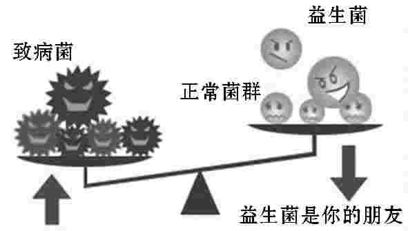

便秘诊治与调养
便秘診治與調養.pdf
Must Watch!
MustWatch
便秘诊治与调养
主编 张薇
副主编 张怀明 张晓燕
便秘是人们日常生活中最常遇见的一个问题，严重影响人们的工作和生活，且随着社会节奏的加快、生活方式的改变、生活压力的增大、加班熬夜、缺乏锻炼、三餐无定时等不良生活习惯已成为很多上班族的生活常态，使得便秘的发病率大大增加。
便秘不仅影响人们的生活质量，还是心脑血管意外、结肠癌、乳腺疾病等发病的重要诱因，应引起我们的重视，科学防治。
本书共分为四章，从肠道、肛门的解剖结构和生理功能讲起，依次阐述了人体正常的排便过程，便秘的病因、危害、诊断和防治方法；
重点讲解了白领人群、孕妇、老年人、儿童，以及糖尿病、脑卒中、心肌梗死、骨折和癌症患者等不同人群的便秘病因和防治方法；
并结合生活实际，详细介绍了防治便秘的各种饮食疗法、药物方剂和运动方法。
希望本书能成为基层医务工作者和便秘患者的实用参考书。
由于水平所限，本书中存在的错误之处，恳请广大读者予以批评指正。
第一章 便秘相关知识
一、大肠的解剖结构与生理功能
(一)大肠的解剖结构
大肠为消化道的下段，是人体消化系统的重要组成部分，成人大肠全长约1.5米，起自回肠，包括盲肠、升结肠、横结肠、降结肠、乙状结肠和直肠六部分(图1)。
全程形似方框，围绕在空肠、回肠的周围。
大肠的外形与小肠有明显的不同，一般大肠口径较粗，肠壁较薄，盲肠和结肠还具有以下3种特征性结构：在肠表面，沿着肠的纵轴有结肠带，由肠壁纵行肌增厚形成；
图1 大肠解剖结构
由肠壁上的横沟隔成囊状的结肠袋；
在结肠带附近，由于浆膜下脂肪聚集，形成许多大小不等的脂肪突起，称肠脂垂。
1 盲肠盲肠为大肠起始的膨大盲端，长6~8厘米，位于右髂窝内，向上通升结肠，向左连回肠。
回、盲肠的连通口称为回盲口。
口处的黏膜折成上、下两个半月形的皱襞，称为回盲瓣，此瓣具有括约肌的作用，可防止大肠内容物逆流入小肠。
在回盲瓣的下方约2厘米处，有阑尾的开口。
2 阑尾阑尾形如蚯蚓，又称蚓突。
上端连通盲肠的后内壁，下端游离，一般长2~20厘米，直径约0.5厘米。
阑尾全长都附有阑尾系膜，其活动性较大。
阑尾根部在体表的投影位置，通常以脐和右髂前上棘连线的外、中1/3交界处做标志，临床上称麦氏点，急性阑尾炎时该处可有压痛。
3 结肠结肠为介于盲肠和直肠之间的部分，按其所在位置和形态，又分为升结肠、横结肠、降结肠和乙状结肠4部分。
(1)升结肠：长约15厘米，是盲肠向上延续部分，自右髂窝沿腹后壁的右侧上升，至肝下方向左弯形成结肠右曲，移行于横结肠。
升结肠后面借结缔组织附贴于腹后壁，故活动性较小。
(2)横结肠：长约50厘米，起自结肠右曲，向左横行至脾处再向下弯成结肠左曲，移行于降结肠。
横结肠全部被腹膜包被，并借横结肠系膜连于腹后壁，其中部下垂，活动性较大。
(3)降结肠：长约20厘米，从结肠左曲开始，沿腹后壁的左侧下降，至左髂嵴处移行于乙状结肠。
降结肠后面借结缔组织附贴于腹后壁，所以活动性也小。
(4)乙状结肠：长40~45厘米，平左髂嵴处接续降结肠，呈“乙”字形弯曲，至第三骶椎前面移行于直肠。
空虚时，其前面常被小肠遮盖，当充盈扩张时，在左髂窝可触及。
乙状结肠全部被腹膜包被，并借乙状结肠系膜连于左髂窝和小骨盆后壁，其活动性也大。
4 直肠直肠为大肠的末段，长15~16厘米，位于小骨盆内。
上端平第三骶椎处接续乙状结肠，沿骶骨和尾骨的前面下行，穿过盆膈，下端以肛门而终。
男性直肠的前面有膀胱、前列腺和精囊腺；
女性则有子宫和阴道。
直肠在盆膈以上的部分称为直肠盆部，盆部的下段肠腔膨大，称为直肠壶腹。
盆膈以下的部分缩窄称为肛管或直肠肛门部。
直肠有两个弯曲，上段凸向后，与骶骨前面的曲度一致，形成骶曲；
下段向后下绕过尾骨尖，形成凸向前的会阴曲。
直肠壶腹内面的黏膜，形成2~3条半月状的直肠横襞，这些横襞有支持粪便的作用。
肛管上段的黏膜形成6~10条纵行的黏膜皱襞，叫肛柱。
各柱的下端有半月形的小皱襞相连，称为肛瓣。
在肛瓣与相邻二柱下端之间有小凹陷，称为肛窦。
各肛瓣与肛柱下端，共同连成锯齿状的环形线，称为齿状线，为皮肤和黏膜相互移行的分界线。
齿状线以下光滑而略有光泽的环形区域，称为肛梳或痔环。
痔环和肛柱的深面有丰富的静脉丛，此丛如淤血扩张则易形成痔，在齿状线以上者称为内痔，以下者称为外痔。
直肠周围有内、外括约肌围绕。
肛门内括约肌由直肠壁环行平滑肌增厚而成，收缩时能协助排便。
肛门外括约肌是位于肛门内括约肌周围的环行肌束，为骨骼肌，可随意括约肛门。
(二)大肠的生理功能
大肠的主要功能是进一步吸收由小肠转运来的液体食糜中的水分、电解质和其他物质(如短链脂肪酸、氨、胆汁酸、细菌代谢产物等)；
缓慢推动肠内容物向远端移动；
形成、贮存和排泄粪便。
同时，大肠还有一定的分泌功能，如杯状细胞分泌黏液中的黏液蛋白，能保护黏膜和润滑粪便，使粪便易于下行，保护肠壁防止机械损伤，免遭细菌侵蚀。
肠道内还生长有大量的细菌，具有重要的生理功能。
1 大肠的运动功能
(1)节段性运动：曾被称为袋状往返运动，是结肠在空腹时最多见的一种运动形式，由环行肌无规律地自发性收缩所引起，它使结肠袋中的内容物向两个方向做短距离的位移，但并不向前推进。
节段性收缩可使结肠转运减慢，结肠内容物得到缓慢的混合和研磨，并与肠黏膜充分接触，从而促进内容物中水和电解质的吸收。
(2)推进集团运动：推进性运动在整个结肠运动中具有非常重要的作用，凡是能够推动肠内容物向远端移行的运动形式，都可归于此类运动。
它常为分节或多袋推进运动，这是一个结肠袋或一段结肠收缩，将肠内容物推移到下一段的运动。
根据收缩的幅度可分为低幅推进性收缩和高幅推进性收缩。
进食后或结肠受到拟副交感药物刺激时，这种运动增多。
(3)蠕动：结肠的蠕动，由一些稳定向前的收缩波所组成，可以使肠内容物缓慢向前推进。
在大肠还有一种进行很快，且前进很远的蠕动，称为集团蠕动。
它通常开始于横结肠，可将一部分大肠内容物推送至降结肠或乙状结肠。
集团蠕动常见于进食后，最常发生在早餐后60分钟之内，可能是胃内食物进入十二指肠，由十二指肠-结肠反射所引起。
2 结肠运动的调节和影响因素
(1)结肠运动的神经体液调节：结肠的运动受到自主神经系统、肠神经系统和中枢神经系统的调节。
支配大肠的神经，除肛管、肛门括约肌外，由交感和副交感神经支配。
刺激支配结肠的迷走神经，可促进结肠的节段性运动，刺激交感神经通常抑制结肠运动。
结肠还分布有肌间神经丛和黏膜下神经丛，能不依赖于外来神经的支配而对结肠运动进行调节。
而中枢神经系统对结肠运动的影响主要是精神因素的作用，精神紧张可抑制结肠运动，而精神过度紧张则作用相反；
在应激情况下，结肠的运动增强，而抑郁则可抑制结肠的运动。
另外，体液因素对结肠的运动亦有影响，如胆囊收缩素可促进结肠运动，5-羟色胺能增强结肠的节段性收缩；
而生长抑素、血管活性肠肽则抑制结肠的运动。
(2)进食对结肠运动的影响：进食后可刺激结肠运动，引起结肠收缩增加，从而引起便意，称为胃-结肠反射，此时结肠可出现更多的袋状收缩或集团收缩，诱发餐后便意。
另外，食物的种类对餐后结肠的运动有着不同的影响。
例如，脂肪和糖类(碳水化合物)可促进大肠的运动，蛋白质类食物则抑制大肠的运动。
(3)其他：结肠运动存在昼夜节律的变化，夜间睡眠时，节段性和推进活动减弱；
白天上述运动则增强，尤其是在餐后及晨起时。
体育活动可促进结肠的运动，主要是增强结肠的推进性运动、集团运动和排便。
3 大肠液的分泌大肠黏膜的上皮和大肠腺均含有许多分泌黏液的杯状细胞。
因此，大肠的分泌液富含黏液，黏液能保护肠黏膜和润滑粪便。
结肠还分泌碳酸氢盐，故大肠液呈碱性(ｐＨ值为8.3~8.4)。
大肠液中可能含有少量二肽酶和淀粉酶，但它们对食糜的分解作用不大。
大肠液的主要作用在于其中的黏液蛋白，它能保护肠黏膜和润滑粪便。
大肠液的分泌主要是由食物残渣刺激肠壁引起的，刺激大肠的运动和排便，可能通过局部反射完成。
大肠的运动少而慢，对刺激的反应也较迟缓，这些特点对于大肠作为粪便的暂时贮存场所是适合的。
副交感神经兴奋可使分泌增加，而刺激交感神经则可抑制肠液的分泌。
4 大肠菌群人体大肠内细菌构成一个巨大而复杂的生态系统，对于维持人体正常的内环境稳定具有十分重要的作用。
首先，大肠内细菌来源于空气和食物中的细菌，它们经口腔进入消化道，由于结肠缓慢运动，温度和ｐＨ值适宜等，使细菌得以在这里大量繁殖。
细菌中含有酶，能使纤维素和糖类分解或发酵，产生乳酸、乙酸、二氧化碳和甲烷等，还可使脂肪分解成脂肪酸、甘油和胆碱等。
有些细菌能使蛋白质分解成氨基酸、肽、氨、硫化氢、组胺和吲哚等，使粪便有臭味。
结肠中的细菌还能合成微量的维生素，主要是B族维生素复合物和维生素Ｋ，对人体代谢和维持某些功能具有重要作用。
所以，长期或不适当地使用抗生素，使维生素的合成和吸收不良，易引起维生素缺乏或其他疾病。
大肠内的菌群组成在正常情况下是稳定的，微生物之间的相互作用是调节结肠固有菌群的重要因素。

肠道菌群还能产生各种物质抑制其他菌种生长，甚至以此作为自身调节的方式，控制自身生长，如大肠菌素和短链脂肪酸等，都具有抑制细菌繁殖的作用。
(三)中医对大肠的认识
1大肠居于腹中，其上口在阑门处 中医解剖学位置接小肠，其下端连接肛门。
大肠的上端称为“回肠”，包括现代解剖学中的回肠和结肠的上段；
下段称为“广肠”，包括乙状结肠和直肠。
大肠亦是一个空腔性器官，呈回环迭积之状，主要有传化糟粕与主津的生理功能。
大肠与肺有手阳明大肠经和手太阴肺经的相互经络而构成表里关系。
2 中医学生理功能
(1)主传化糟粕：大肠接受小肠下传的食物残渣，吸收其中多余的水液，形成粪便。
大肠之气的运动，将粪便传送至大肠末端，并经过肛门有节制地排出体外，故大肠有“传道之官”之称。
(2)大肠主津：大肠接受小肠下传的含有大量水液的食物残渣，将其中的水液吸收，使之形成粪便，即是所谓的燥化作用。
大肠吸收水液，参与体内的水液代谢，故说“大肠主津”。
3. 功能失常症状
大肠传导糟粕功能失常，则出现排便异常，常见的有大便秘结或者泄泻。
若有湿热郁结大肠，大肠传导功能失常，还会出现腹痛、里急后重、下痢脓血等症状。
大肠主津功能失常，则大肠中的水液不得吸收，水与糟粕俱下，可出现肠鸣、腹痛、泄泻等病症，若是大肠实热，消化津液或者大肠津亏、肠道失润，又会导致大便秘结不通。
二、肛门的解剖结构与生理功能
(一)肛门的解剖结构
肛管是消化道的末端，上自齿线，下至肛缘，成人全长2.5~4厘米，为解剖性肛管。
有人将肛管上界扩展至齿状线以上1.5厘米，即肛管直肠环平面，称外科性肛管，一般少用。
肛管的表层，在上段为柱状上皮及移行上皮，下段为移行上皮及鳞状上皮。
男性肛管前面与尿道及前列腺相毗邻，女性则为子宫及阴道；
后为尾骨，周围有内、外括约肌围绕(图2)。
图2 肛门解剖结构
齿状线为直肠与肛管的交界线，由肛瓣及肛柱下端组成，该线呈锯齿状，故称齿状线(或称梳状线)，为重要的解剖标志。
齿线上、下的血管，神经及淋巴来源都不同，其表现的症状及体征也各异。
齿状线在临床上的重要性如下：①齿状线以上主要由直肠上、下动脉供应，齿状线以下为肛门动脉供应。
齿状线以上静脉丛属痔内静脉丛，回流至门静脉，若曲张则形成内痔；
齿状线以下静脉丛属痔外静脉丛，回流至下腔静脉，曲张则形成外痔。
齿状线以上感染可经门静脉而致肝脓肿；
齿状线以下感染，则由下腔静脉向全身扩散。
②齿状线以上黏膜受自主神经支配，无疼痛感，齿状线以下肛管受脊神经支配，疼痛反应敏锐。
齿状线以上的淋巴主要回流至腹主动脉周围的淋巴结，齿状线以下的淋巴主要回流至腹股沟淋巴结。
故直肠癌向腹腔内转移，而肛管癌则向双侧腹股沟淋巴结转移。
齿状线以上的黏膜，由于括约肌收缩，出现6~10个纵行条状皱襞，长1~2厘米，称肛柱，此柱在直肠扩张时可以消失。
直肠柱内有直肠上动脉终末支和由直肠上静脉丛形成的同名静脉，内痔即由此静脉丛曲张、扩大而成。
各直肠柱下端之间，借半月形黏膜皱襞相连，此皱襞称肛瓣。
肛瓣与肛柱之间的直肠黏膜形成许多袋状小窝，称肛窦(肛隐窝)，易蓄积大便发生感染。
窦口向上，深3~5毫米，底部有肛腺的开口。
肛瓣下方有2~8个三角形乳头状突起，称肛乳头。
肛瓣撕裂，可致肛裂、肛窦炎及肛乳头炎等。
正常肛管内有4~8个肛腺，多集中在肛管后壁，每个肛腺开口于肛窦处。
肛腺在黏膜下有一管状部分，称肛腺管，肛腺管在黏膜下层分成葡萄状支2/3肛腺向下、向外伸展到内括约肌层，少数可穿过该肌管，到联合纵肌层，极少数可进入外括约肌，甚至到坐骨直肠间隙。
肛腺多是感染的入口，少数也是发生腺癌的部位。
肛管有两种功能不同的肌肉，一为随意肌，位于肛管之外，即肛管外括约肌与肛提肌；
另一为不随意肌，在肛管壁内，即肛管内括约肌；
中间肌层为联合纵肌，既有随意肌，又有不随意肌纤维，但以后者较多。
以上肌肉能保持肛管闭合及开放。
肛门外括约肌属于横纹肌，受意志控制，向远端扩展包绕肛门，肛门外括约肌可分为3层，即皮下层、浅层和深层，具有控制肛门收缩和松弛的作用。
其中，深层由环绕肛门内括约肌上段的厚环行肌束构成，手术中尤其需注意，若切断该环，可致大便失禁。
肛门内括约肌由直肠壁的内环肌下降至肛管处变厚而成，由于其位于肛管的内侧，故称其为肛门内括约肌，平均宽度约3厘米，厚度约0.5厘米，环绕肛管上段的3/4长度，它的外围被联合纵肌和肛门外括约肌的深、浅两层肌纤维包绕；
属于典型的平滑肌型括约肌，受自主神经支配，不受意识控制，具有协助排便和促进血液回流的作用。
另外，由髂骨尾骨肌、耻骨尾骨肌及耻骨直肠肌组成的盆底肌层与肛门外括约肌有着相同的生理功能，能产生持续性收缩。
(二)肛门的生理功能
人体消化道的最终端是肛管，它在齿状线处与直肠相接，外口即肛门。
肛管及肛门平时处于密闭状态，可防止肠腔内的分泌液、粪便、气体流出体外。
当直肠腔内粪便积累到一定量时，通过神经反射，肛管松弛，肛门打开，将粪便排出体外。
所以，肛门的主要功能为排便与抑制排便。
肛门内括约肌的生理功能主要是起闭合肛门和协助排便作用，其功能如下。
①未排便时，内括约肌呈持续性不自主的收缩状态，闭合肛管，可防止直肠内的粪便、液体、气体流出，维持直肠一定的张力；
当直肠内充满粪便时，它自动张开，协助排便。
②排便时，有“逼”的作用，将粪块挤出，使肛管排空。
③主动闭合肛管时，内括约肌有协助随意肌(如外括约肌、耻骨直肠肌)的作用。
④可充分松弛，保证肛管足够扩张。
肛门内括约肌易痉挛，所谓痉挛就是一种持续收缩状态，如受到炎症等刺激后就处于痉挛状态，使肛门狭窄、排便困难，同时引起肛门疼痛。
肛门外括约肌有括约肛门的功能。
在产生便意时，如果外界条件不允许排便，就可以通过收缩外括约肌来闭合肛门，控制排便，但外括约肌易疲劳，持续收缩一般只能维持55秒，超过此时间，大便就控制不住而排出体外。
三、排便与抑制排便
(一)粪便的形成与排便
食物残渣在大肠内停留的时间较长，一般在10小时以上，在这一过程中，食物残渣中的一部分水分被大肠黏膜吸收。
同时，经过大肠同细菌的发酵和腐败作用，形成了粪便。
粪便中除食物残渣外，还包括脱落的肠上皮细胞和大量的细菌。
此外，机体代谢后的废物，包括由肝排出的胆色素衍生物，以及由血液通过肠壁排至肠腔中的某些金属，如钙、镁、汞等盐类，也随粪便排出体外。
排便是一种反射活动。
正常的直肠通常是空的，没有粪便在内。
当肠的蠕动将粪便推入直肠时，刺激直肠壁内的感受器，冲动沿盆神经和腹下神经中的传入纤维传至脊髓腰骶部的初级排便中枢。
同时，传入冲动还上传至大脑皮质，产生便意。
如条件许可，冲动通过盆神经的传出纤维(副交感纤维)传出，引起降结肠、乙状结肠和直肠收缩，肛门内括约肌舒张；
与此同时，阴部神经的传出冲动减少，肛门外括约肌舒张，粪便则排出体外。
此外，支配腹肌和膈肌的神经兴奋，腹肌和膈肌收缩，腹内压增加，促进排便。
(二)抑制排便
1 自动抑便在静息状态下，肛门内、外括约肌处于收缩状态(主要是肛门内括约肌)，产生一高压带，该压力梯度可防止大便进入肛管。
当进入直肠的粪团容量足够大时，扩张直肠，肛门内括约肌反射性松弛，粪便进入肛管，激活相应感受器，扩张肛管，增加肛门内括约肌的抵抗力，而肛门外括约肌有更大的收缩能力以对抗扩张，使粪团上移，延长排便时间。
大便进入直肠后，肛门内、外括约肌收缩，即为肛门直肠抑制反射。
2 主动抑便当粪便进入肛管，如条件不许可，大脑皮质发出冲动，下行抑制脊髓腰骶部初级中枢的活动，抑制冲动沿腹下神经传出纤维(交感纤维)传出，使肛门括约肌紧张性增加，乙状结肠舒张，排便反射则被抑制。
如果排便反射经常被抑制，就逐渐使直肠对粪便的压力刺激失去正常的敏感性。
粪便在大肠中停留过久，会因过多的水分被吸收而变得干硬，结果不易排出，这是产生便秘的最普遍的原因之一。
第二章 便秘的病因、危害
便秘是临床常见的症状，而不是一种疾病。
所谓便秘是指粪便在肠道中停留时间较久，变得干硬，造成排便困难及排便次数减少、粪便量减少。
便秘表现为排便次数减少、粪便干硬和
(或)排便困难。
排便次数减少指每周排便少于3次。
排便困难包括排便费力、排便不尽感、排便费时及需手法辅助排便。
慢性便秘的病程至少为6个月。
因此，必须结合粪便的性状、平时排便习惯和排便有无困难等做出有无便秘的判断。
一、便秘的病因
便秘从病因上可分为器质性和功能性两类。
1 器质性病因
(1)肠道病变：肠道的肿瘤、炎症或其他原因引起的肠腔狭窄或梗阻；
肠管平滑肌或神经源性病变可致便秘。
(2)直肠、肛门病变：直肠内脱垂、痔疮、直肠前膨出、耻骨直肠肌肥厚、耻直分离、盆底病等亦是便秘的病因。
(3)内分泌或代谢性疾病：便秘可由糖尿病、甲状腺功能低下、甲状旁腺疾病等代谢性疾病引起。
(4)系统性疾病：硬皮病、红斑狼疮等。
(5)神经系统疾病：颅脑疾病、脑卒中、多发性硬化、脊髓损伤，以及周围神经病变等均可引起便秘。
(6)药物：铁剂、阿片类药、抗抑郁药、抗帕金森病药、钙通道拮抗药、利尿药及抗组胺药等均可导致便秘的发生。
2 功能性病因如果便秘无上述明确病因，称为功能性便秘。
功能性便秘指由于排便的生理功能因某些原因发生失调或紊乱，不能正常地按时把粪便排出体外，导致排便困难而形成的便秘。
功能性便秘病因尚不明确，其发生与多种因素有关。
(1)进食量少或食物缺乏纤维素或水分不足，对结肠运动的刺激减少。
(2)因工作紧张、工作性质和时间变化，生活规律变化，生活环境改变，以及劳累、抑郁等所致。
(3)结肠运动功能紊乱所致，常见于肠易激综合征，系由结肠及乙状结肠痉挛引起，除便秘外，同时具有腹痛或腹胀，部分病人可表现为便秘与腹泻交替。
(4)腹肌及盆底肌张力不足，排便推动力不足，难于将粪便排出体外。
(5)滥用泻药，形成药物依赖，造成便秘。
二、中医对便秘病因的认识
中医学认为，本病的病理变化是肠腑功能传导失常，原因可见以下四方面。
第一，高年体弱，阳虚气衰则寒自内生、寒阴凝固、阳气不通、津液不行而引起便秘。
第二，劳倦内伤或病后、产后气血不足。
气虚则大肠传导无力，血枯则津黏不能滋润大肠，而致便秘。
第三，过食辛辣厚味，嗜酒，使胃肠积热或伤寒热病之后，热传阳明，而致热传大肠或肠道失运，于是大便干结，难于排出。
第四，忧思过度，久坐少动而致腑气郁滞，通降失常而致大便秘结。
三、便秘的危害
便秘是临床常见症状，影响患者的生活质量，长期便秘可导致多种疾病的发生，需正确认识便秘的危害，从而科学地诊治。
1. 引起或加重肛肠疾病
便秘是造成和(或)加重痔疮、肛裂、直肠炎等肛肠疾病的重要原因。
便秘时，排便困难，粪便干燥，由于干燥粪便压迫直肠，使直肠黏膜下层的静脉直接受压迫，直肠肛门静脉血液回流障碍；
便秘时，排便时间过长，并用力屏气排便，可使腹压增高，更使直肠肛门静脉回流受阻，诱发痔疮。
排便时会因便秘而导致大便过于干燥，在排出时会擦伤肛门周围，导致肛门部位受伤，引起肛裂产生。
除此之外，便秘还会导致肛窦炎、直肠炎、肛周脓肿等肛肠疾病的产生。
另外，长期便秘，排便时反复猛烈用劲，常可造成或加重脱肛。
长期习惯性便秘和经常服用含有大黄类泻药的患者，还容易导致结肠色素沉着，引起结肠黑变病。
2 引起粪性溃疡便秘时，大便秘结，肠腔内存留了大量的粪块，较硬的粪块压迫肠腔，使肠腔狭窄并引起盆腔周围结构变形，阻碍了结肠扩张，使直肠或结肠受压而形成溃疡，严重者可引起肠穿孔。
3 罹患结肠癌由于便秘患者饮食中缺乏纤维素，肠道运动减慢，人体不能及时将致癌物质或有害物质随粪便排出体外，而使其在肠道中停留时间延长，有害毒素持续刺激肠黏膜，导致患大肠癌的风险明显增高。
4. 诱发或加重心脑血管疾病
高血压患者若伴有便秘可能会使血压进一步增高，甚至诱发脑血管疾病的发生。
因便秘患者在排便时用力会增加腹压，从而使心跳加快、心脏收缩加强、心排血量增加，诱发血压突然进一步升高。
当压力超过血管壁的承受能力时，则有发生脑出血的可能。
如果说高血压是引起脑出血的主要危险因素，便秘则是脑出血的重要促发因素。
便秘患者用力排便时亦可引起心绞痛的发作，且冠心病患者更容易发生便秘。
因其体力活动受限，长期卧床、长期服用钙离子拮抗药，这些都可诱发和加重便秘。
便秘又可加重冠心病病情，加重心脏负荷。
便秘引起的腹胀可使膈肌升高，影响肺的通气与换气功能及心脏的供血与供氧状况。
尤其是排便时由于排便费力，氧耗增加，使心跳加快，心肌耗氧量增加，心肌缺血状态加重，诱发心绞痛，甚至发生心绞痛性晕厥，或导致更为严重的心肌梗死。
5 引起胃肠神经功能紊乱长期的便秘会导致胃肠神经功能紊乱。
因便秘时，粪便潴留于肠内，易积聚有害气体，产生鼓肠，静脉回流受阻，消化功能出现障碍，出现腹饱胀不适、食欲减退、口苦、嗳气、腹痛、肠鸣、肛门排气增多等症状。
6 引起妇科疾病便秘病人由于长期盆腔肌肉刺激，可引发痛经、腰酸、阴道痉挛，并诱发尿潴留、尿路感染、乳腺疾病等。
女性便秘患者会因体内毒素增加，导致机体出现新陈代谢紊乱、内分泌失调等症状。
7 影响大脑功能便秘时代谢产物久滞于消化道，由于细菌的作用产生大量有害物质，如甲烷、酚、氨等。
这些物质部分扩散进入中枢神经系统，干扰大脑功能，突出表现是记忆力下降，注意力分散，思维迟钝，并导致肝性脑病、早老性痴呆的发生；
长期便秘病人亦会伴有精神委靡、烦躁、心神不安、失眠等症状。
8 引起性生活障碍这是由于每次长时间用力排便，使直肠疲劳，肛门收缩过紧及盆腔底部肌肉痉挛性收缩的缘故，会导致不射精或性欲减退等性生活障碍。
9 损害皮肤便秘者因粪便长期滞留于肠道内，有害物质被吸收入血后作用于皮肤，引起皮肤的血液循环障碍，而产生痤疮、肌肤粗糙、黄褐斑、暗疮等。
四、慢性便秘的诊断
1. 慢性功能性便秘的诊断
慢性便秘的诊断主要靠临床症状，可借鉴罗马Ⅲ标准中功能性便秘诊断标准所述的症状和病程。
慢性便秘患者还可表现为便意减少或缺乏便意、想排便而排不出(空排)、排便费时、每日排便量少，可伴有腹痛、腹胀、肛门直肠疼痛等不适。
罗马Ⅲ标准中功能性便秘的诊断标准：①必须包括下列2项或2项以上：至少25％的排便感到费力，至少25％的排便为干粪球或硬便，至少25％的排便有不尽感，至少25％的排便有肛门直肠梗阻感和
(或)堵塞感，至少25％的排便需手法辅助(如用手指协助排便、盆底支持)，每周排便少于3次。
②不用泻药时很少出现稀便。
③不符合肠易激综合征的诊断标准。
以上症状出现至少6个月，且近3个月症状符合以上诊断标准。
2 诊断注意事项由于便秘不是一种独立的疾病，而是多种病因引起的一组症状，故对便秘的诊断应重在病因诊断，而不是症状诊断，仅做出症状诊断是不完整甚至危险的，并有误诊、漏诊重大病变的可能。
完整的诊断应包括症状诊断、功能诊断和病因诊断。
应按常规对病人进行全面、系统的病史询问和体检。
应特别注意全面询问便秘的症状、严重程度，以及患者对便秘症状的感受、便秘对患者生活质量的影响；
注意对相关伴随症状、用药史、其他基础疾病的询问；
收集患者的饮食结构、对疾病的认知程度和精神心理状况等资料，以利于对病情的综合判断。
在腹部检查时应注意腹部是否有包块，是否有压痛，并进行细致的肛门指诊检查(应仔细观察有无外痔、肛裂及肛瘘等病变，触诊时需注意有无内痔，肛门括约肌有无痉挛、直肠壁是否光滑，有无溃疡或新生物等)。
在病史的询问中，还需要强调对患者心理状态的评估，重度便秘、难治性便秘患者往往伴有抑郁、焦虑情绪，必要时需请心理专科医师介入。
3 辅助检查手段
(1)一般辅助检查①粪便常规和隐血。
应观察便秘者排出粪便的形态及有无黏液或血液黏附。
便秘患者由于常伴直肠炎症及肛门损伤，粪便常有黏液及少量血液黏附。
中老年患者经常出现少量血液时，应特别注意与结肠癌的鉴别。
结肠痉挛性便秘者，粪便坚硬呈块粒状，如羊粪。
肠易激综合征患者常排出多量的黏液，但黏液中极少有红细胞、白细胞。
②血液学检查。
血常规、甲状腺功能、血钙、血糖、肿瘤标志物等检查结果有利于鉴别便秘症状是否由炎症、肿瘤或其他系统性疾病所致。
③立位腹部平片及胃肠钡剂造影。
立位腹部平片检查有利于对肠梗阻的诊断，而胃肠钡剂造影对结、直肠肿瘤，结肠狭窄或痉挛，巨结肠等病变的诊断有较大帮助，对结肠的运动功能(蠕动)也可有较全面的了解。
④消化系内镜检查。
内镜检查可直接观察肠黏膜状态，对结、直肠癌，肠息肉等病变的诊断有极大的帮助，有利于便秘的病因鉴别诊断。
(2)肠道动力、直肠功能检查①结肠传输试验。
受试者自检查前3天起禁服泻药及其他影响肠功能的药物。
检查日随标准餐顿服不透Ｘ线的标记物，每隔24小时摄腹部平片1张。
正常者在72小时内应排出80％标记物。
判断是否存在结肠传输延缓，排便障碍，但此检测方法价格昂贵，难以普及。
②排粪造影。
是一种形态与动态相结合评价肛门直肠区功能的方法。
采用Ｘ线造影技术，测静坐、提肛、强忍、用力排便各时相的肛门直肠角、肛上距、乙耻距。
用于诊断解剖畸形(直肠脱垂、直肠突出等)和肠道远端局部功能障碍(功能性出口梗阻、直肠乏力等)，在便秘中有重要价值，并可为选择治疗方法提供依据。
③测压法。
肛门直肠测压可评估肛门直肠的动力及感觉功能，能监测用力排便时盆底肌有无不协调性收缩，是否存在直肠压力上升不足、是否缺乏肛门直肠抑制反射、直肠感觉阈值有无变化。
④球囊逼出试验。
将球囊(气囊或水囊)置于直肠壶腹部，注入温水50毫升，嘱受试者取习惯排便姿势，尽快将球囊排出。
健康者可在60秒内排出球囊。
该试验可反映肛门直肠对球囊的排出能力，是功能性排便障碍的筛查方法。
⑤肌电图检查。
应用电生理技术，检查盆底肌、耻骨直肠肌、外括约肌等横纹肌的功能状态及其支配神经的功能状态，还可行肛门括约肌的肌电图检查，判断便秘的病因是神经源性，还是肌源性。
⑥其他。
肛门测压结合腔内超声检查能显示肛门括约肌有无局部张力缺陷和解剖异常，为手术定位提供线索，而电刺激法可检测直肠的感觉功能和顺应性。
另外，长期严重便秘患者可能伴有焦虑、抑郁等心理障碍，可行心理评估等协助诊断。
4 慢性便秘的鉴别诊断便秘最主要的鉴别诊断即是对结、直肠器质性疾病的筛查，尤其是结、直肠肿瘤的筛查。
对近期内出现便秘或伴随症状发生变化的患者，特别应提高警惕。
其报警征象包括便血、粪隐血试验阳性、贫血、消瘦、腹痛、腹部包块、结直肠息肉或肿瘤家族史。
对年龄大于40岁、有报警征象者，必须行实验室、影像学和结肠镜检查，以明确诊断。
五、便秘的分型与程度划分
在临床上，便秘有多种分型方式，如按病程或起病方式，可分为急性便秘和慢性便秘；
按有无器质性病变，可分为器质性便秘和功能性便秘；
按粪便积留部位，可分为结肠性便秘(又称弛缓性便秘)和直肠性便秘；
按结肠、直肠平滑肌功能状态，分为弛缓性便秘和痉挛性便秘；
按便秘的病理生理基础，分为梗阻性便秘和动力性便秘，本节重点叙述功能性便秘与器质性便秘。
便秘又可按程度分为轻中重3种。
1 便秘分型
(1)功能性便秘：功能性便秘是指缺乏器质性病因，没有结构异常或代谢障碍，又除外肠易激综合征的慢性便秘。
功能性便秘患者可以有粪便坚硬、排便困难、便不尽感和便次减少等表现。
为了便于临床治疗功能性便秘，目前大多采用根据结肠动力学特点而进行的分型，分为慢传输型便秘、出口梗阻型便秘和混合型便秘。
这种分型的依据是以结肠或肛门直肠动力障碍特点为基础的。
①慢传输型便秘。
是最常见的类型，是由于肠道收缩运动减弱，使粪便从盲肠到直肠的移动减慢，或由于左半结肠的不协调运动而引起(结肠测压显示系指由于结肠动力障碍，使内容物滞留于结肠或结肠通过缓慢的便秘，导致结肠内容物推进速度慢，排空迟缓)。
同时，可能伴有其他自主神经功能异常所致的胃肠功能紊乱，如胃排空迟缓或小肠运动障碍。
患者主诉多为排便次数少、粪便质地坚硬、无便意。
最常见于年轻女性，在青春期前后发生，其特征为排便次数减少(每周排便少于1次)，少便意，粪质坚硬，因而排便困难。
肛门直肠指检时无粪便或触及坚硬粪便，而肛门外括约肌的缩肛和用力排便功能正常；
全胃肠或结肠传输时间延长；
缺乏出口梗阻型的证据，如球囊排出试验和肛门直肠测压正常。
结肠传输试验可明确诊断。
②排便障碍型便秘。
既往被称为出口梗阻型便秘，具有正常的结肠传输功能，由于肛门、直肠的功能异常(非器质性病变)，如排便反射缺如，盆底肌痉挛综合征或排便时肛门括约肌不协调所致的粪便排出障碍，包括横纹肌功能不良，直肠平滑肌动力异常，直肠感觉功能损害，肛门括约肌失协调症，以及盆底痉挛综合征等。
排便障碍型便秘可有以下临床表现：主诉是排便困难、费力、肛门直肠阻塞感、不尽感、下坠感、排便量少，有便意或缺乏便意，排便时需要用手协助。
肛门直肠指检时直肠内存有泥样粪便，用力排便时肛门外括约肌可能呈矛盾性收缩；
全胃肠或结肠传输时间显示正常，多数标记物可滞留在直肠内；
肛门直肠测压显示，用力排便时肛门外括约肌呈矛盾性收缩或直肠壁的感觉阈值异常等。
很多出口梗阻型便秘患者也合并存在慢传输型便秘，多发生于儿童、妇女和老年人，在老年患者中尤其常见，其中许多患者经内科常规治疗无效。
③混合型便秘。
具有结肠慢传输特点，也存在肛门、直肠功能异常，或二者均不典型，治疗上因人而异。
该型可能是由于慢传输型便秘发展而来，也有人认为长期的出口梗阻影响了结肠排空而继发结肠无力。
(2)器质性便秘：器质性便秘是指由于脏器的器质性病变(如肠道内的肿瘤、炎症、先天性手术瘢痕，内分泌代谢疾病，药物及化学品中毒，神经系统疾病等)所致的便秘。
在临床诊断时需认真鉴别。
①梗阻性便秘。
多见，它是由于肠内或肠外的机械性肠梗阻，使肠内容物运行障碍所致。
常见于结肠癌、增殖型肠结核、不完全性肠套叠、肠扭转或结肠狭窄和其他原因所致的肠道梗阻。
肠外压迫性梗阻常见于手术后肠粘连、结核性腹膜炎(粘连型)、子宫肌瘤、妊娠等。
②继发性便秘。
最主要原因之一是内分泌和代谢性疾病，包括糖尿病、高钙血症、低钾血症、卟啉病、甲状腺功能减低、全垂体功能减退、甲状旁腺功能亢进、假性甲状旁腺功能减退、嗜铬细胞瘤、胰高血糖素瘤。
上述代谢性和内分泌疾病主要是影响平滑肌功能而引起继发性便秘。
CNS)疾神经系统疾病也与便秘有关。
中枢神经系统(病与便秘关系最密切，神经调节中断是引起便秘的原因。
有关的疾病包括脊柱损伤、马尾肿瘤、腰椎间盘疾病、脊柱结核、多发性硬化症、帕金森病、脑血管意外和脑肿瘤。
截瘫可造成排空迟缓，尤其是左半结肠。
帕金森病使肛门外括约肌矛盾收缩，引起排便梗阻。
多发性硬化症患者有便秘症状，周围神经系统疾病如自主神经疾病、神经纤维瘤、神经节瘤等都与便秘发生有关。
肠神经系统疾病也会引起便秘，如先天性巨结肠。
神经源性慢性假性肠梗阻和长期滥用轻泻药引起便秘的原因也与损害肠神经系统有关。
③医源性便秘。
医源性便秘通常与药物有关，如阿片类药物、钙通道阻滞药等。
2 便秘分度
(1)轻度便秘：排便过程费力，排便时间延长，或虽有便意而欲排不排，便后不爽或肛门坠胀等，在不用泻药的情况7天之内自发性排空粪便少于2次。
下，①病程＜2年。
②病程虽＞2年，但排便障碍的相关症状较轻，对患者的生活工作影响不大。
③使用泻药或胃肠动力药物有效。
④无明显焦虑、抑郁等精神、心理改变。
(2)中度便秘：有排便过程费力，排便时间延长，或虽有便意而欲排不排，或便后不爽，或肛门坠胀等，在不使用泻药的情况下长期便意差，甚至无便意。
①病程＜2年。
②生活质量下降，对生活、工作有较大影响。
③药物治疗基本无效。
④生物反馈治疗无效。
⑤排便障碍的相关症状较重。
⑥无明显焦虑、抑郁等精神、心理改变。
⑦有结肠动力改变，如结肠传输试验、结肠压力试验等检查的异常。
⑧有结肠和盆底形态学改变：如结肠冗长、结肠盘曲、直肠黏膜内脱、会阴下降、直肠前突、横结肠下降、子宫后倾、盆底疝等。
⑨可能有肠神经系统的改变。
⑩病程虽＜2年，但排便障碍的相关症状较重，且患者自觉痛苦大。
(3)重度便秘：重度便秘除有中度便秘同样症状外，还伴有不同程度的精神症状，根据精神症状严重程度又分为Ａ期和B期。
Ａ期：患者有焦虑、抑郁等精神、心理改变，临床定向检查问卷发现已经有障碍倾向，但是尚不足以确诊心境障碍、抑郁症或焦虑症，处于精神疾病前期。
汉密尔顿抑郁量表≥17分且＜35分、汉密尔顿焦虑量表≥14分。
抑郁等精神心理改变，且符合焦B期：患者有明显的焦虑、虑症、5分。
抑郁症等精神科诊断标准。
汉密尔顿抑郁量表≥33 便秘分度常用量表1)ＷｅｘNｅ(ｒ便秘评分表(表1)。
表1犠犲狓狀狉便秘评分表(最低0分，最高30分)犲参数0分1分2分3分4分排便频率ａ2次/周1次/周＜1次/周＜1次/月排便困难：排便用力时痛从不罕见有时常常总是干净度：感觉没排干净从不罕见有时常常总是痛：腹痛从不罕见有时常常总是每次蹲厕所时间(分钟)＜55~1010~2020~30＞30辅助排便措施(类型)不用辅助刺激性泻药用手抠或灌肠－－排便失败B没有1~3次3~6次6~9次＞9次病史：便秘病程01~5年5~10年10~20年＞20年注：ａ.指平均每天有便意，上厕所却未排出大便的次数B.为1~2次/1~2天；
(2)因便秘患者常常合并抑郁、焦虑等情绪，可采用症状自评量表(SCL-90)、汉密尔顿焦虑量表等心理学专用量表对便秘患者的心理状况行相应的评估。
六、中医对便秘的辨证
大便秘结，简称便秘。
指粪便在肠道内滞留过久，排便时间延长，通常在4~7天或以上排便1次，称为便秘。
1 常见证候鉴别
(1)胃肠实热便秘：相当于“热秘”，属“阳结”范畴。
其主要临床表现为大便干结，数日不通，腹中胀满，疼痛拒按，面赤身热，日晡热甚，多汗，尿赤，时欲饮冷，口舌生疮，口臭，语声重浊，呼吸气粗，舌干，苔黄厚腻或焦黄起芒刺，脉沉实或滑实。
(2)肝脾气滞便秘：相当于“气秘”。
常表现有大便多日不通、后重窘迫、欲便不得、精神抑郁，噫气频作，胸脘痞闷，胁肋胀，或经期乳胀，或呕吐上逆，咳嗽气喘，舌苔白腻、脉沉或弦。
(3)脾肺气虚便秘：属“虚秘”范畴。
大便燥结或软，但数日不通，有时虽有便意，但解下困难，努责不出，努则汗出气短，甚则喘促，便后虚疲至极，倦怠懒言，语声低怯，腹不胀痛，或有肛门脱垂，形寒面白，唇甲少华，舌淡嫩，苔薄白，脉虚弱。
(4)脾肾阳虚便秘：相当于“冷秘”，属“阴结”范畴。
大便秘结，兼见面色青黑，肢冷身凉，喜热畏寒，口中和，小便清长，夜间多尿，尿后余沥，舌质淡白，苔白润，六脉沉迟，或反微涩。
(5)血虚阴亏便秘：属“虚秘”范畴。
可见于热病恢复期，纳少大便秘结难下，或产后，或患痈疽之后，或高年血虚之人，或胃中素多蕴热之人，大便长期干燥秘结，排便非常困难，往往数周1次，形体消瘦，咽干少津，面色不泽，心慌头晕，唇甲淡白，舌质淡或舌红少津，脉细或细数无力。
2 鉴别分析
(1)胃肠实热便秘：即阳明腑实，燥屎内结。
临床当分3种情形，或伤于寒邪而化热，邪入阳明之腑；
或温病传入气分，热结胃肠，或嗜食辛辣，胃肠积热，皆可致热势弥漫阳明胃腑，津耗液伤，胃肠燥热成实，出现大便秘结不下。
伤寒与温病之燥屎形成，多发生于高热性疾病中，临床较易辨认。
辨燥屎形成与否，须抓住以下几点：①阳明热型，日晡潮热(日晡即傍晚，阳明经主令之时)。
②腹部症状，胀满疼痛拒按(呈持续性胀满疼痛拒按，燥屎不攻除，腹痛即不解)。
③汗出不断(汗多使津液耗伤，胃肠不润，大便必燥，所以汗多是肠中燥屎形成的重要因素之一)。
④或伴谵语(阳明腑实，肠道为燥屎所塞，腑气不通，浊毒之气上蒸，扰犯神明)。
温病热入气分胃肠结实，其理亦同，不同点系感受温邪而发病，其伤津程度更为严重，热势发展更加迅猛而已。
素嗜辛辣厚味，肠胃积热，其大便秘结的产生，虽非为外感寒温之邪，但其积热伤津，致胃肠燥结之理则同。
治则皆以开塞通闭、攻坚泻实为法。
但具体运用中又有不同：伤寒攻下，在于泻实，里热未结实者，不可轻攻，故有“伤寒下不厌迟”的警语；
温病攻下，在于泻热，温病最易耗伤阴液，故有“温病下不嫌早”的说法。
临床可依症情轻重缓急，辨证选用三承气汤。
燥实内阻而痞满较轻、燥屎内结而未甚者，用调胃承气汤润燥软坚，和胃荡实；
便闭燥屎将结之际，结而未坚，投小承气汤以和下；
痞满燥实坚俱在，阳明腑实重证，投大承气汤峻下之。
小便数、大便硬之脾约证，用麻仁润肠丸通便，缓下之。
气分温病，热实津枯，辨证选用增液承气汤、新加黄龙汤、宣白承气汤、导赤承气汤、牛黄承气汤等方。
(2)胃肠实热便秘与肝脾气滞便秘：皆为实证便秘。
气滞便秘，多因暴忧暴怒，气机壅塞；
或久坐少动，气机不畅，以及各种原因引起的胃气上逆和肺失宣降，皆可产生气机郁滞，升降失调。
《素问》：“诸气月贲郁皆属于肺”，肺失宣降则大肠气滞，使糟粕内停，发生便秘。
其辨证要点为大便数日不解并见肝失疏泄(抑郁、引息、胸胁不舒、乳胀等)，胃气上逆(噫气呕恶)，肺失肃降(咳逆上气)等气机升降失调表现。
其舌苔白或白腻，与胃肠实热之舌苔黄厚，甚至焦褐起芒刺者不同。
若气郁化火可有热象，但与阳明腑实证病因不同，不难区分。
治以顺气通滞，降气通便，方选六磨汤，或赭遂攻结汤；
气郁化火者，用当归龙荟丸。
(3)脾肺气虚便秘：以脾气下陷为主，脾气陷则大肠无力传送糟粕；
肺气虚则大肠津液不布，气亦不足，故糟粕滞留肠道，糟粕停于肠道既久，终必成结，难于排出。
其临床特点是，虽数日大便一次，腹部却少有所苦，但全身不适，便时汗出气短作喘，便后疲乏无力，甚则肛门脱出等均较突出。
其粪便形态特征为粗大而呈圆柱形，有助于辨证。
(4)脾肾阳虚便秘与脾肺气虚便秘：不同点是阳虚便秘有阳虚外寒(即面色青黑、肢冷身凉、畏寒、小便清长等)，痼冷沉寒的临床表现，以阳衰命门之火不足为主，多见于年老体弱之人；
气虚便秘是以气虚、中气下陷为主要表现，多见于经产妇女和中气虚弱之人。
一为阳衰，一为气陷，有时二者可以互有，也可由气陷发展为阳衰。
两者的共同点是，皆为虚证，一为阳虚，一为气虚。
肾司二便，肾阳虚衰之便秘，小便频数也是致使大肠津液不足的原因之一，辨证与治疗时，对夜间多尿，尿后余沥之症，不可轻视。
临床上，往往是先见夜尿频、尿后余沥症状好转，尔后方见便秘渐解。
脾肺气虚便秘，治在补益脾肺，佐以润肠，常用补中益气汤加枳壳、白蜜；
脾肾阳虚便秘，治在补益脾肾，温通寒凝，可用苁蓉润肠丸。
(5)血虚阴亏便秘：为阴津、阴血有形物质的缺乏，肠道无血以滋、无津以润、粪便在肠道中涩滞难行。
临床须辨别病因是津亏(如热病后、汗吐下、利小便、胃中蕴热等)，还是血虚(崩漏、失血等)，以及津亏(咽干少津、形体消瘦、眼窝深陷、皮肤弹力降低、舌红少苔少津液、脉细数无力)或血虚(面色不泽、心慌头晕、唇甲淡白、舌淡苔薄少)的临床表现。
血虚者用益血润肠丸，养血润肠；
阴亏者用左归丸加何首乌、火麻仁等，养阴生津，润肠通便。
胃肠实热便秘，亦系肠道津亏，其因阳明实热居于肠道，消烁津液，而致津耗肠燥。
此多为新病，且又在伤寒、温病过程中发生，其腹部症状明显，与血虚阴亏肠道乏津之便秘的发病缓慢、病程迁长显然有别。
胃肠实热便秘，临床为一派阳热邪盛的表现，属里实热证；
血虚阴亏便秘，临床为一派阴血不足的表现，一实一虚，不能混同。
它同气虚、阳虚之便秘，结合兼症，也易区别。
大便秘结，一般认为是里证，如便秘兼有表证，则属表里同病，辨证时重在外邪之属寒属热，表寒而里实，当疏解表寒，兼通里实，防风通圣散主之；
外感风热兼有里实，当解表清热，兼通里实，用升降散加减。
尚可见寒热往来，胸闷呕恶，或心下痞梗，郁郁微烦，脉弦有力，虽亦属表里同病，但病在少阳、阳明，治宜和解攻下，大柴胡汤主之。
第三章 便秘的预防与治疗
便秘病小危害大，给患者的精神和生活都带来了很大的不便，所以预防便秘显得尤为重要。
通过调整生活方式、科学饮食、体育锻炼等可有效地预防便秘，下文将详细介绍。
一、生活方式调整
便秘与不良的生活方式息息相关，生活方式的调整是预防便秘的基础，包括养成规律生活的习惯，定时排便；
戒烟酒；
避免滥用泻药；
有便意时需及时排便，避免抑制排便；
均衡饮食、适量增加膳食纤维、多饮水等。
1 养成良好的排便习惯预防便秘首先需养成良好的排便习惯，每日定时排便，即使没有便意，亦要按时去卫生间蹲坐10~15分钟，以形成条件反射，建立良好的排便规律。
一般晨起睡醒及餐后，结肠的动作电位活动及收缩增强，将粪便向结肠远端推进，故尽可能调整在每日早餐后排便，此时训练排便，易建立条件反射。
且一旦有便意时就应如厕排便，任何情况下都不要克制和忍耐。
排便的环境和姿势应尽量安静、方便，免得抑制便意、破坏排便习惯。
若人为地增长排便时间或是忍便，会使直肠内压力持续偏高，易引发肠壁肌细胞的血供障碍，使肠壁肌肉的张力和神经敏感性不断下降而引发便秘，因此排便时间不宜过长，不要忍便。
建议排便时间以5分钟之内为宜，每次排便时间不要超过8分钟。
2 心态积极、规律作息心理学家研究发现，便秘的发生常与心理障碍、情绪、精神活动等心理因素有密切关系。
便秘患者常伴有不同程度的抑郁、焦虑、强迫观念及行为，惊恐、紧张、忧愁等也会使一些人的便意消失，引起便秘或加重病情。
一般认为，这些不良的心理因素通过抑制外周自主神经对结肠、直肠和盆底肌肉的活动，使肠道蠕动减弱而引起便秘。
因此，便秘患者应当调整情绪，保持乐观、轻松的心态。
同时，改善生活习惯，合理安排作息时间，注意劳逸结合，避免熬夜，戒烟酒，积极参加适合自己的文娱活动，并学习一定的生理健康常识，使便秘的症状逐渐得到缓解，有效提高生活质量。
3. 坚持运动
运动可促进肠蠕动、改善肠道的血液循环、增进食欲，有利于排便。
要有意识做增强腹部肌肉和骨盆肌肉张力的运动，尤其是进行腹肌的锻炼，做时还可用排便动作锻炼肛提肌的收缩。
日常可选择的运动包括做健身操、打太极拳、慢跑或步行，还可做转腰操、下蹲运动等，运动量及运动频率可因个人体力不同而做相应的调整。
(1)医疗体操：医疗体操，主要可增强腹肌及骨盆肌的力量，使腹肌有力地进行收缩，腹内压增加，便于排便。
如站位可做原地高抬腿步行、深蹲起立、转腰运动、踢腿运动等；
仰卧位可做两腿轮流屈伸模仿踏自行车动作等。
①屈、举腿运动。
屈腿运动时，取仰卧位，两腿同时屈膝提起，然后还原；
举腿运动，亦取仰卧位，两腿同时举起，膝关节保持伸直，然后放下。
②踏车运动及仰卧起坐。
取仰卧位，轮流屈伸双腿，模仿踏自行车的动作，动作灵活、屈伸范围尽量大；
仰卧起坐需取仰卧位，收腹屈伸坐起，两手摸足尖，视体力状况，反复进行多次。
③原地运动。
该项运动主要是增强腹肌及骨盆肌力量。
站位可做原地高抬腿步行、深蹲起立、踢腿运动和转体运动。
④转腰运动。
转腰运动同样可促进胃肠蠕动与消化液的分泌，预防便秘。
具体方法为两脚分开站立，与肩同宽或略宽于肩，两手臂自然下垂，两眼目视前方，上半身保持正直，腿、膝也要伸直，不能弯。
先将腰向左侧送出去，然后再往前、右、后顺时针转圈。
整个过程要慢，双肩不能动，双膝不能弯，慢慢转30~50圈，再逆时针转30~50圈。
做动作时要慢而连贯，且呼吸自然，全身放松。
刚开始做时，可以先左右各转几十圈，再逐渐增加圈数，最终延长到1次30分钟。
转腰运动最好在早晨空腹时做，做完后可再喝一杯温开水。
⑤深呼吸运动。
深呼吸就是胸腹式呼吸联合进行，深呼吸能使人的胸部、腹部的相关肌肉、器官得以较大幅度的运动，能较多地吸进氧气，吐出二氧化碳，使血液循环得以加强，对于解除疲惫，放松情绪，促进排便都是有益的。
做深长的腹式呼吸时，横膈上下活动的幅度较平时增加了3~4倍，能有节律地对肠胃进行“按摩”，促进胃肠蠕动，有效预防便秘。
可选择空气新鲜的地方，每日进行2~3次。
胸腹式联合的深呼吸类似瑜伽运动中的呼吸操，深吸气时，先使腹部膨胀，然后使胸部膨胀，达到极限后，屏气几秒钟，逐渐呼出气体。
呼气时，先收缩胸部，再收缩腹部，尽量排出肺内气体。
反复进行吸气、呼气，每次3~5分钟。
(2)快步行走、慢跑：快步行走和慢跑可促进消化液的分泌、改善食欲，增强肠道动力、促进肠管蠕动，有助于预防便秘。
快步行走是一种简单而有效的有氧健身运动。
速度一般应控制在100~130米/分钟，每次步行持续不少于20分钟，可根据自身的健康情况、体力等调整运动的强度。
慢跑亦是一种有氧运动，它以较慢或中等的节奏来跑完一段相对较长的距离，以达到热身或锻炼的目的，同样可以有效预防便秘。
(3)提肛运动：提肛运动是预防和治疗肛门疾病，以及促进肛门手术后患者伤口和肛门功能恢复的一种较好的方法，对患有肛门疾病患者的便秘预防亦能发挥较好的作用。
在做提肛运动的过程中，肌肉的间接性收缩起到了“泵”的作用，能改善盆腔的血液循环，缓解肛门括约肌痉挛，增强其收缩能力。
通过这种有效的肛门功能锻炼，可以增强肛门、直肠局部的抗病力，避免和减少肛门疾病的复发，从而减轻排便过程中的局部疼痛，消除患者的排便畏惧心理，发挥预防便秘的作用。
4 物理按摩腹部按摩、腹部及背部热敷、热水浸浴、刮痧、敷贴、直肠黏膜按摩、穴位按压等中医物理治疗方法可促进肠蠕动，预防便秘。
(1)腹部按摩：腹部按摩是指患者取仰卧位，两手掌相叠，以脐为中心，在中腹、下腹部做顺时针按摩，以腹内有热感为宜，约2分钟；
再用食指或中指点揉中脘、天枢、气海，每穴各1分钟，然后用后掌根从上到下擦腹直肌，约30秒，最后，取俯卧位，施术者用手掌根由上到下擦腰部和骶部，约1分钟。
直肠黏膜按摩是用手指或专用器具刺激肛门括约肌，轻轻按摩直肠黏膜，以刺激并诱发排便反应。
穴位按压是通过刺激穴位使与脏腑相关的便秘症状得到消除，如可常按压迎香穴(鼻翼两旁)、足三里(外膝眼下3寸处)及耳穴贴压等。
通过这些中医物理治疗方法常可取得较好的临床效果。
(2)气功按摩：其可以增强胃肠道的动力，促进消化液的分泌，预防便秘。
①用右手食指向下经胃向左十二指肠走行之方向推按10次。
主要将饮入之水推进小肠。
②用左手在腹偏上部做逆时针方向旋转按摩100次，转圈按摩时可由大圈逐渐围绕中心变小，再逐渐由小圈变大，使小肠内容物迂回向下行。
③用左手从上腹部蛇形左右弯曲状向下腹，再到左下回盲部，顺升结肠上行，顺横结肠走行到降结肠，乙状结肠至直肠方向推10次，有软化硬便的效果。
④右手顺时针方向，左手逆时针方向，双手同时交替在腹部划圈按摩100次，增强肠蠕动。
⑤双手从百会向前额顺任脉，直下按摩，即由头顶到面部、下额、胸、腹、会阴部，推按100次，双手并行向下推按。
连头顶双手十指朝上做向下抓拿式，到胸部时十指转向下做推按式。
⑥右手在腹部顺时针方向按圆圈形按揉100次，圈由大逐渐变小到脐，再逐渐由小变大。
⑦右手从剑突向下到回盲部，以大肠走行按推20次。
⑧收功：双手相搓，擦脸，梳头收功。
通过上述生活方式的改变，对预防便秘的发生有着积极的意义，饮食的调理亦在便秘的预防中发挥着重要的作用，将在下文做详细介绍。
二、科学饮食
预防便秘应该从饮食开始，因为粪便主要是由食物消化后的残渣构成的，所以通过饮食调节来防治大便秘结是最简单易行的方法。
1 高纤维饮食膳食纤维本身不被人体吸收，进入肠道后，能吸附肠腔水分从而增加粪便容量，可使粪便体积增大，含水量多，刺激结肠，增强动力，并刺激肠蠕动，加快肠道内食糜的排空速度，缩短食品中有毒物质在肠道内滞留时间，促使胆汁酸排泄，并使粪便保持酸性，从而预防和治疗便秘。
正常人需要90~100毫克/(千克·天)的纤维素来维持正常排便。
含膳食纤维丰富的食物，常见有麦类，如麦麸、玉米、荞麦面、高粱米、黑米等；
薯类，如马铃薯、白薯和黄豆类。
无论谷类、薯类还是豆类，一般来说，加工得越精细，纤维素含量越少。
蔬菜中笋类的膳食纤维含量最高，还有芹菜、韭菜、菠菜等，紫菜的纤维素含量也较高，达到20％。
水果中含量最多的是红果干，纤维素含量接近50％，其次有桑葚干、樱桃、苹果等。
含果胶丰富的水果有橘子、芒果、香蕉等(注意未成熟的水果含鞣酸反而会加重便秘)。
2人体组织液通过皮肤蒸发，成年人每日 补充水分要失去600毫升水分；
加上尿液、大便中的水分，肺部呼出的水汽，人体一天中排出的水分在2500毫升左右。
如果想要保持正常的排便，就必须饮用足够量的水。
每日晨起空腹喝300~500毫升的蜂蜜水或饮加少量食盐的温开水300毫升，有助于预防便秘。
在夏季应充分补充体内水分，尤其在食用高纤维食品时，更应注意保证饮水(每天饮水可在1500毫升以上，加上饮食中的水分，每天摄水量不少于2200毫升)。
多饮水，使肠道保持足够的水分，有利于粪便排出。
但患有心脏病、心力衰竭患者要在医生指导下控制饮水量。
3B族维生素包括维生 补充足量犅族维生素及叶酸素B1、维生素B2、维生素B6、维生素B12、烟酸、泛酸、叶酸等，是维持人体正常功能与代谢活动不可或缺的水溶性维生素，人体无法自行合成，必须额外补充，它们可促进消化液分泌，维持和促进肠道蠕动，有利于排便。
B族维生素广泛存在于米糠、麸皮、酵母、动物的肝脏、粗粮、蔬菜等食物中。
多食富含B族维生素丰富的食物，有利于预防便秘。
应尽量食用天然、未经加工的食品，如粗粮、豆类、洋葱头、萝卜、甘薯、马铃薯等，以增强肠道的张力，促进肠道的蠕动。
而叶酸基本上存在于绿叶蔬菜里，如羽衣甘蓝、甜菜、花椰菜、豆角、芽苗、包心菜等，上述蔬菜均具有良好的通便作用。
4. 多食用产气食物
多食易产气的食物，可促进肠蠕动，利于排便。
易产气的食物有萝卜、洋葱、卷心菜、豆类、红薯、蜂蜜、韭菜、生葱、生蒜、生苤蓝、芹菜等。
如食用白薯后，因其含气化酶和植物纤维，所以在肠道内产生气体，而植物纤维不容易被消化，易被细菌酵解为二氧化碳及氢气，促进肠道运动。
除此之外，我们常食用的米、麦、洋葱也是易产气的食物，苹果、葡萄、香蕉、瓜类、柚子等是易产气的水果。
食用上述食物，均有预防便秘的作用。
5 增加脂肪供给适当增加高脂肪食物的摄入，能直接润滑肠道，且其所分解的产物脂肪酸有刺激肠道蠕动的作用，从而可预防便秘的发生。
在烹制菜品时加入适量的植物油，如香油、豆油、菜油、花生油；
或食用含植物油多的硬果，如核桃、开心果、芝麻等，均可起到预防和治疗便秘的作用。
6 各型便秘患者的饮食原则
(1)痉挛性便秘：痉挛性便秘是由于结肠运动过于强烈，引起结肠痉挛，肠腔过于狭窄，使大便无法通过而致的便秘，其发病与精神因素有关，其便秘特征为饭后常出现左下腹疼痛，立刻产生便意，大便呈球状，带有黏液，排出又硬又小的细条状粪便，且便量少，虽有便意但难以便出。
该类患者宜先采用无渣半流质饮食，然后可过渡到少渣半流、少渣软饭等。
可在饮食中适当增加脂肪，并注意补充水分。
禁食含纤维素多的食物和粗硬的食物，如粗粮、干豆、圆白菜、韭菜，坚硬的水果、干果等。
禁食刺激性食物，如酒、浓茶、咖啡、辣椒、咖喱等，以免刺激肠道产生痉挛。
另外，应避免食用柿子，因其含有较多的鞣酸，不利于通便。
(2)弛张性便秘：弛张性便秘的发生多由于生活规律改变、精神心理因素、饮食因素、排便习惯不良、先天性异常、炎症刺激、滥用泻药及长期有意识抑制排便等原因所致，其发生可能与支配肛门内、外括约肌的神经功能异常有关。
此型便秘患者应多食含粗纤维及富含B族维生素的食物，以刺激肠道、增加消化液的分泌、促进胃肠蠕动、增强排便能力。
例如，粗粮、豆类、洋葱头、萝卜、红薯、马铃薯、带皮水果等；
菠菜、包心菜内含有大量叶酸，具有良好的通便作用。
可适当增加高脂肪食物的摄入，如植物油、干果、银耳羹等。
忌烟酒及辛辣食物。
(3)习惯性便秘：饮食中应增加含植物纤维素较多的蔬菜和水果，适量食用粗糙多渣的杂粮，如标准粉、糙米、绿豆、凉粉、薯类、玉米、燕麦片等；
多食各种新鲜瓜果和蔬菜，尤其是瓜类、香蕉、苹果、荸荠、芹菜等；
适当吃一些富含油脂的干果，如松子、核桃仁等；
应少食肉类和动物内脏等高蛋白、高胆固醇食物；
少吃辛辣刺激性食物。
要尽量避免服用可导致便秘的药物，不可滥用刺激性泻药。
三、便秘食疗方
中医对便秘这种常见但治疗棘手的疾病有着独到的认识，许多食疗方对预防和治疗便秘均有较好的疗效，下文将分别介绍。
1. 芝麻桃仁白糖粉
黑芝麻500克，核桃仁250克，绵白糖100克。
先将黑芝麻、核桃仁去除杂质，晒干，炒熟，研成细末，调入绵白糖，拌匀，装入瓶罐内，备用。
每日早晚各嚼食15克，15天为1个疗程。
芝麻能润肠通便，适宜肠燥便秘患者服食。
本食疗方适合于各型功能性便秘的预防和治疗。
2. 柏子仁炖猪心
柏子仁20克，猪心1个(约500克)。
先将猪心放入清水中浸泡片刻，洗净，切成薄片。
将柏子仁洗净，盛入碗中。
砂锅中加清水适量，置火上，加猪心片，大火煮沸，烹入料酒，加葱花、姜片及柏子仁，改用小火煨炖1小时，待猪心熟烂，停火，加食盐、味精、五香粉各少许，拌和均匀即成。
佐餐当菜。
本食疗方适用于血虚型患者便秘的预防和治疗。
3. 三仁粥
柏子仁20克，松子仁15克，郁李仁20克，粳米100克。
先将郁李仁打碎，入锅，加水煎煮20分钟，去渣取汁。
将柏子仁、松子仁敲碎，除去外衣，与淘净的粳米同入砂锅，加水适量，先用大火煮沸，缓缓加入郁李仁煎汁，改用小火煨煮成稠粥，即成。早、晚2次分服。
本食疗方适合于各型功能性便秘的预防和治疗。
4. 黄芪火麻仁蜂蜜饮
蜜炙黄芪20克，火麻仁10克，蜂蜜15克。
先将生火麻仁拣杂，打碎，与拣杂洗净后切成片的黄芪一同入砂锅，加水适量，煎煮30分钟，用洁净纱布过滤，去渣，取汁放入容器，稍凉趁温热时兑入蜂蜜，拌匀即成。
每日早晨空腹顿服。
补气润肠通便。
本食疗方中黄芪益气治本，火麻仁润肠治标，两者配伍，标本兼顾，对中老年尤其是老年大肠癌患者气虚便秘等症更为适宜。
5 五仁丸以柏子仁配合松子仁、桃仁、杏仁、郁李仁为丸。
也可用柏子仁、火麻仁各10克，微炒研细，以绢包水煎20分钟，过滤，加白糖适量，一次顿服，每日1次，便通为度。
6 菠菜猪血汤
取菠菜200克，猪血150克，食盐少许。
将菠菜、猪血同煮，熟后加入食盐，然后饮汤。
7 木耳海参炖猪肠取木耳15克，海参30克，猪大肠150克，食盐、酱油及味精各少许。
将猪大肠翻开洗净，加水同木耳、海参炖熟，放调料，吃木耳、海参、大肠，饮汤。
8 蔗汁粥榨取100毫升甘蔗汁备用。
粳米50克加水400毫升，煮至米开花后，兑入甘蔗汁，煮粥。
每日早、晚温热服食。
9 红薯粥红薯250克，粳米100克，蜂蜜20克。
先将红薯洗净，切成小方丁，放在淡盐水中浸泡30分钟，备用。
将粳米淘洗干净，放入砂锅，加水适量，大火煮沸，加入洗净的红薯丁，改用小火煨煮至红薯熟烂如酥、粥呈稠黏状，熄火，待粥温热时调入蜂蜜，拌和均匀即成。
早晚2次分服，温热服食之，当日吃完。
本食疗方适用于大肠癌气虚肠燥引起的便秘。
10 芝麻润肠糕黑芝麻60克，菟丝子30克，桑葚30克，火麻仁15克，糯米粉600克，粳米粉200克，白糖30克。
先将黑芝麻拣杂，淘净后晾干，入锅，用小火炒至香熟，备用。
将菟丝子、桑葚、火麻仁分别拣杂，放入砂锅，加水适量，大火煮沸后，改用小火煎煮20分钟，去渣留汁，待用。
将糯米粉、粳米粉、白糖放入盆中，兑入菟丝子、桑葚、火麻仁药汁及清水适量，搓揉成软硬适中的面团，制作成糕，在糕上抹上一层植物油，匀撒上黑芝麻，入笼屉，上笼，用大火蒸熟即成。
每日2次，每次50克或100克，随意服食。
滋补肝肾，润肠通便。
本食疗方适用于大肠癌患者肝肾亏虚、津血不足、肠燥失润引起的便秘。
11 鲜马铃薯粥鲜马铃薯250克，蜂蜜100克。
将马铃薯洗净，不去皮，捣烂挤汁，再加入蜂蜜，餐前空腹服1~2匙，每日3次，半个月为1个疗程。
能益气健脾、润肠通便。
或服用鲜马铃薯汁，将300克鲜马铃薯去皮，切碎，用干净的纱布包好，挤汁，饭前服用1~2汤匙，每日2~3次。
适用于习惯性便秘者。
12 玉竹、沙参粥玉竹、沙参各30~50克，老鸭1只。
将鸭除去毛和内脏，洗净，与沙参、玉竹同放入瓦锅内，加水适量，文火焖煮至熟烂，作料调味，饮汤食肉。
适用于病后体弱、津亏肠燥引起的大便秘结等症。
13 白萝卜粥白萝卜150克，虾米150克，猪油、葱、姜、食盐各适量。
将白萝卜切成小块，用熟猪油炒，加虾米煨至极烂，起锅时加葱、姜丝及食盐，每日食1次，半个月为1个疗程。
能健运脾胃、消食运气、润肠通便。
治疗习惯性便秘。
或新鲜白萝卜250克，洗净后绞取萝卜汁，然后兑入少量蜂蜜，空腹时1次服下，每日1次。
适用于腹胀腹痛便秘者。
200~250克，荸荠(去14
鲜蕹菜汤
鲜蕹菜(空心菜)10个。
将鲜蕹菜、荸荠洗净，煮汤，每日1剂，分2~3次皮)服食。
用于肠热便秘者。
或蕹菜尖300克，白糖100克。
文火水煎，早晚各服1次。
能润肠通便、清热止痛。
或蕹菜、猪肉各250克。
将蕹菜择洗干净，猪肉洗净，切薄片，加水煮食，每日1次。
15. 菠菜鸡血汤
菠菜150克，鸡血200克，调料适量。
将菠菜择洗干净，鸡血切块，共同煮汤，调味后食用，每日5~7次或时时服食。
有滋阴润燥、通利大便作用。
治疗各种原因所致的便秘。
16 黄芪蜜茶取黄芪15克，蜂蜜30克。
将黄芪放入砂锅，加清水500毫升，煎至水剩300毫升，去渣取汁，加入蜂蜜，和匀煮1~2沸，代茶饮。
17 番泻叶决明子茶番泻叶3克，决明子30克。
将番泻叶、决明子同放入有盖杯中，用沸水冲泡，加盖闷15分钟即可。
当茶频饮，一般可冲泡2次。
本食疗方对热积型便秘尤为适宜。
18. 有防治便秘作用的食物
(1)香蕉：清热、润肠、解毒，适用于热性便秘和习惯性肠燥便秘者。
以香蕉生食或涂上蜂蜜，每日2~3次，每次2个。
(2)韭菜：新鲜韭菜，洗净，然后捣汁1杯，为30~50毫升，加15~20毫升黄酒，沸水冲服，适宜便秘者食用。
(3)苋菜：苋菜能清热利窍，含维生素C，是一种碱性食物，炒菜用，以防治便秘。
(4)慈姑：含维生素B1、维生素B2较多，能增强胃肠的蠕动，是预防和治疗便秘的理想食品。
(5)海蜇：能清热、消积、化痰、润肠，适宜大便燥结者。
“雪羹汤”，以海蜇30克，荸荠4个，用于慢性大便燥结者。
水煎服，
(6)南瓜：性温，味甘，有补中益气的作用。
南瓜不但是一种低糖、低热能食品，而且所含丰富的纤维素有良好的通便作用。
尤其适用于中老年体弱便秘者食之。
(7)猪肉：有补虚、滋阴、养血、润燥作用，体弱便秘之人食之尤宜。
(8)海参：为清补食物，既能滋阴润燥，又能养血通便。
适用于年老体弱便秘者。
(9)苹果：苹果含有多量的纤维素和果胶。
每100克苹果含粗纤维15.3~20.6克，含果胶15~18克，这两种成分都具有良好的通便作用。
(10)梨：性凉，味甘微酸，能清热、生津、润燥。
适用于热胜津伤的燥热便秘者。
(11)无花果：性平，味甘，有健胃清肠的作用。
慢性习惯性便秘者宜常食之。
(12)榧子：性平，味甘，有消积润燥作用。
大便秘结者，多食有润肠通便的效果。
13)蕹菜：因其纤维素可增强肠蠕动，对慢性便秘有益。
(14)木耳菜：性寒，味甘酸，性大凉，对热性便秘有效。
四、便秘的药物治
疗治疗便秘的药物可分为各种泻药、肠道动力调节药、微生态制剂等。
需根据便秘的病因、分型和病情轻重，选取合适的药物治疗。
(一)常用泻药
泻药在临床应用较为广泛，可分为膨胀性泻药、渗透性泻药及刺激性泻药，应避免长期使用刺激性泻药。
泻药的种类或剂量选用不当，会导致多种不良反应，如腹痛、腹胀，严重者可致肠梗阻，甚至出现电解质及酸碱平衡失调。
因此，对伴有高血压、糖尿病、冠心病及高龄患者，应选择膨胀性缓泻药。
1. 容积性泻药(膨松药)
容积性泻药口服不被肠道吸收，可通过滞留粪便中的水分，增加粪便含水量和粪便体积从而起到通便作用。
主要用于轻度便秘患者，尤其对粪质干结、羊粪状粪便的便秘患者有效。
服用该类药物应补充足够的液体。
但若服用剂量过大，可能引起腹胀、恶心、呕吐等不良反应，故肠梗阻、肠狭窄者禁用。
常用药物有欧车前、聚卡波非钙、麦麸、甲基纤维素等。
(1)欧车前类：欧车前的药用部位为种子，其成分不被吸收，它可与水混合形成黏性物质，便秘者使用该黏液吸收水分，膨胀并刺激肠蠕动，缩短通过胃肠时间，软化大便，治疗便秘。
临床可用药物有欧车前亲水胶散剂等。
(2)聚卡波非钙：聚卡波非钙片的活性成分为二乙烯基乙二醇交联丙烯酸共聚物的钙盐，是一种吸水性很强的亲水性树脂，在酸性环境下可脱钙形成聚卡波非，能吸收大量水分，在中性或碱性环境中，可显著膨胀，重量可达自身重量的60~100倍。
当便秘时，它能吸收水分而膨胀，发挥容积性轻泻药的作用，被广泛用于功能性便秘的治疗。
(3)麦麸：麦麸含有纤维素、半纤维素和果胶物质，属于高纤维食物，可增加大便量，改善便秘。
(4)甲基纤维素：具有较强的吸水性，可在肠内吸水膨胀形成柔软的凝胶，使结肠内粪便变软，含水量增加，体积增大，刺激肠壁，增加肠蠕动，从而发挥通便作用。
临床常用的有羧甲基纤维素钠颗粒。
2 渗透性泻药渗透性泻药可在肠内形成高渗状态，吸收水分，增加粪便体积，刺激肠道蠕动，可用于轻、中度便秘患者，常用药物包括聚乙二醇、不被吸收的糖类和盐类泻药。
(1)乳果糖：是人工合成双糖，在胃及小肠内不被分解和吸收，到达结肠后，通过渗透作用使水和电解质保留于肠腔内，并被肠道正常菌群分解为乳酸和乙酸等，可进一步提高肠腔内渗透压，产生导泻作用；
能阻断氨的吸收；
其酸性代谢产物能刺激肠黏膜，增加肠蠕动，促进排便。
由于乳果糖在体内分解产生气体，故部分患者会有腹胀、排气增多等胃肠胀气表现。
用量过大会产生恶心、腹胀、腹泻和低钾血症、高钠血症等。
该药禁用于胃肠道阻塞、糖尿病或低糖饮食者。
慢性便秘患者治疗剂量为每日1~2次，每次5~10克，以每日保持2~3次软便为宜。
临床用于慢性功能性便秘，包括老年人、儿童、婴儿和孕妇各个年龄组的患者，安全性高。
对于肝性脑病患者，应用乳果糖后，不仅具有保持大便通畅的作用，还可减少氨的吸收，有利于肝性脑病的康复。
(2)聚乙二醇：聚乙二醇为新型渗透性泻药，通过局部渗透作用将水分保留在结肠腔，软化粪便，增加粪便的体积和重量，促使排便，其作用为纯物理性，肠道不吸收，并且也不在肠道内分解代谢，不会产生有机酸等有害物质，耐受性良好，可用来治疗各种原因引起的便秘。
(3)盐类泻药(硫酸镁)：口服硫酸镁在肠道内不易吸收，留在肠腔内形成高渗状态，导泻作用强且迅速，一般口服2~6小时后即可排出水样或半流体粪便。
可引起严重不良反应，尤其是电解质紊乱，老年人及肾功能不全患者应慎用。
目前，常用于全结肠镜或钡剂灌肠等检查前的肠道准备工作。
3 刺激性泻药刺激性泻药通过刺激肠蠕动和紧张性收缩达到通便的目的，如酚酞、蒽醌类药物和蓖麻油等。
研究发现，长期使用刺激性泻药可使肠神经发生不可逆的损害，而长期服用蒽醌类药物则会导致结肠黑变病。
因此，刺激性泻药只能短期、间断应用。
(1)蓖麻油：蓖麻油的作用为润肠，主治肠内积滞、腹胀、便秘。
但孕妇忌服。
(2)蒽醌类药物：蒽醌类泻药是芦荟、大黄、番泻叶等的主要提取物，其大部分是非处方药，也是目前应用最广的泻药之一。
因长期服用该类药物会致结肠黑变病，虽其与结肠肿瘤的发病关系尚无定论，但应避免滥用该类药物。
(3)比沙可啶：口服后经肠内细菌分解的产物及药物本身对肠壁均有较强的刺激作用，能增加肠蠕动，促进排便；
Cａ2＋及水分的吸收，从而使肠腔内同时可抑制结肠内Nａ＋、容积增大，引起反射性排便。
服用后可引起腹痛，偶可发生剧烈的腹部痉挛。
急腹症、痉挛性便秘、重症硬结便、肛门破裂或痔疮溃疡患者禁用，孕妇慎用。
4 润滑性泻药此类药物多通过直肠内给药，多为油类化合物，油类药物可覆盖于肠黏膜表面产生润滑作用，刺激肠道，软化大便，并利于粪便排出，适用于粪便干结、粪便嵌塞患者临时使用。
(1)开塞露：含硫酸镁、甘油、丙二醇，为润滑性泻药，能润滑并刺激肠壁，软化大便，使其易于排出，主要适用于硬结便患者，尤其是老年患者。
(2)液状石蜡：在肠道内不被吸收或消化，能润滑肠壁，使粪便易于排出。
对年老体弱、长期卧床的便秘患者应注意其有引起脂质性吸入性肺炎的可能，长期服用可致脂溶性维生素缺乏。
(3)复方角菜酸酯栓：该栓剂能涂布于黏膜表面、包裹粪便，发挥润滑功能以达到使粪便易于排出的目的。
另外，复方角菜酸酯栓中的有效成分有黏膜保护作用，亦可使由于粪便潴留、压迫直肠黏膜导致的“粪便性直肠炎”得以缓解、愈合，从而减轻、消除患者的残便感、肛门坠胀感等症状，尤其适用于便秘合并痔疮患者。
(二)促动力药
促动力药物是指能够恢复或增加已减弱的消化道动力，促使胃肠内容物顺行性转运的药物。
可通过促进肠肌间神经丛乙酰胆碱的释放、拮抗抑制神经递质，加强胃肠道推进动力而具有改善便秘的作用，尤其适用于慢传输型便秘患者。
对于长期静坐工作而发生便秘的患者较适用，并且可缓解便秘伴随的腹胀、嗳气等现象。
1 西沙必利是临床上广泛应用的胃肠道促动力药，作为全胃肠道动力药，西沙必利除了能使结肠内容物通过时间加快以外，还能使小肠蠕动收缩及胃排空增加，能通过增强结肠肌束对电兴奋的收缩反射，从而对肠运转产生促进作用，对慢传输型患者有较好的临床疗效。
但因该药可能引起ＱＴ间期延长，故应慎用。
2羟色胺4受体 替加色罗作为一种吲哚类选择性5部分激动剂，特异性作用于结肠，具有促动力、促分泌和降低内脏感觉敏感性的双重作用，可用于伴有明显腹痛的肠易激综合征(ＩBS)便秘型患者的治疗。
3. 普卢卡必利
为另一种选择性5羟色胺4受体激动剂，普卢卡必利可显著改善便秘症状且不良反应较少。
普卢卡必利选择性作用于肠道感觉神经元的5羟色胺4受体，加速结肠传输和近端结肠排空，同时可调节肠道的不协调运动。
普卢卡必利对正常传输型和慢传输型便秘患者均有治疗作用，也可用来治疗阿片类药物引起的便秘，且该药的不良反应小、耐受性良好。
(三)其他药物
1正常肠道存在一些有益的细菌，这些 微生态制剂细菌能够改善肠道的酸度和代谢所需要的微环境，促进肠道蠕动。
微生态调节制剂，可直接补充正常生理性菌群，改善肠道微生态环境，可能通过改善肠道的动力对治疗便秘有一定的疗效。
2 促分泌药促分泌药能刺激肠液的分泌，促进排便，如鲁比前列酮、利那洛肽等。
治疗便秘常用泻药及药物循证医学证据见表2、表3。
表2常用泻药类型药物名称作用适应证及用法麦麸天然纤维适用于慢性便秘容积性车前子外壳精炼而成，在胃泻药欧车前肠道内可将液体吸附到固体部适用于慢性便秘分，使粪便变软而易于排出福松(聚乙二醇渗透性泻药，通过增加局部一般用量20克/日4000)渗透压，促进排便渗透性杜秘克(乳果糖)高渗性泻药适用于慢性便秘泻药在肠内形成一定的渗透压，适用于卧床病人、结硫酸镁、硫使肠内保有大量水分，刺激肠肠手术后病人。
清晨酸钠蠕动而排便空腹服，服后多饮水一般用量5~15克，性味苦寒，清热泻火，攻积大黄泡汁或煎服，只可偶导滞刺激性用，禁滥用泻药一般用量15~25克芒硝味咸苦而性大寒，泻热导滞冲服，孕妇禁用，只可偶用，禁滥用续表类型药物名称作用适应证及用法可以润滑并刺激肠壁，软化睡前服，长期服可引液状石蜡大便，促进其排出起脂溶性维生素缺乏润滑性适合用于直肠梗阻开塞露直肠用溶液剂泻药性便秘。
肛门注入作用温和。
每次1麻仁润肠丸润肠通便丸，每日2次，口服表3便秘治疗药物的循证医学证据药物证据等级和推荐水平容积性泻药欧车前B级聚卡波非钙C级麦麸C级甲基纤维素C级渗透性泻药聚乙二醇Ａ级乳果糖B级刺激性泻药比沙可啶B级番泻叶C级促动力药普卢卡必利Ａ级
五、便秘的分级诊治
在临床工作中，需根据便秘患者的病情、严重程度进行分级诊治，以合理利用医疗资源，降低诊治费用。
诊治流程见图3。
 图3慢性便秘诊治流程
一级诊治：适用于多数轻、中度便秘患者，首先应详细询问病史、行全面的体格检查、行肛门指检，需进行粪便常规＋隐血检查。
若患者年龄大于40岁，合并报警征象，对疾病过于忧虑者，可行肠镜等辅助检查以明确是否合并器质性疾病，否则可行经验性治疗。
注意对患者进行健康教育，对其生活方式调整、便秘的认识做详细的介绍，告知患者慎用能引起便秘的药物；
根据患者的病情，酌情选用泻药或促动力药，疗程为2~4周，若无效，则考虑加大剂量或联合用药。
二级诊治：主要的治疗对象为经验性治疗失败的患者，可根据患者的个体情况选择行结肠传输试验、肛门直肠测压和
(或)球囊逼出试验，并对患者的心理状况行初步评估，明确便秘的类型后再进一步选择治疗方案。
混合型便秘患者可先行生物反馈治疗，无效时加用泻药。
三级诊治：三级诊治是针对二级诊治无效的患者，应对患者进行重新评估，注意患者是否已对不良的生活方式和排便习惯做相应的调整，有无特殊原因引起的便秘，尤其是与便秘密切相关的结肠、肛门、直肠形态的异常，注意患者的治疗依从性、治疗是否规范、有无精神心理障碍等。
上述患者多为难治性便秘患者，需行进一步的结肠、肛门直肠形态学和功能学检查，必要时请其他学科、包括心理学专家的会诊，为患者制定个体化的治疗方案。
对仍治疗无效的患者，在谨慎评估手术风险、疗效，严格掌握手术适应证后，可考虑行手术治疗。
图3慢性便秘诊治流程
一级诊治：适用于多数轻、中度便秘患者，首先应详细询问病史、行全面的体格检查、行肛门指检，需进行粪便常规＋隐血检查。
若患者年龄大于40岁，合并报警征象，对疾病过于忧虑者，可行肠镜等辅助检查以明确是否合并器质性疾病，否则可行经验性治疗。
注意对患者进行健康教育，对其生活方式调整、便秘的认识做详细的介绍，告知患者慎用能引起便秘的药物；
根据患者的病情，酌情选用泻药或促动力药，疗程为2~4周，若无效，则考虑加大剂量或联合用药。
二级诊治：主要的治疗对象为经验性治疗失败的患者，可根据患者的个体情况选择行结肠传输试验、肛门直肠测压和
(或)球囊逼出试验，并对患者的心理状况行初步评估，明确便秘的类型后再进一步选择治疗方案。
混合型便秘患者可先行生物反馈治疗，无效时加用泻药。
三级诊治：三级诊治是针对二级诊治无效的患者，应对患者进行重新评估，注意患者是否已对不良的生活方式和排便习惯做相应的调整，有无特殊原因引起的便秘，尤其是与便秘密切相关的结肠、肛门、直肠形态的异常，注意患者的治疗依从性、治疗是否规范、有无精神心理障碍等。
上述患者多为难治性便秘患者，需行进一步的结肠、肛门直肠形态学和功能学检查，必要时请其他学科、包括心理学专家的会诊，为患者制定个体化的治疗方案。
对仍治疗无效的患者，在谨慎评估手术风险、疗效，严格掌握手术适应证后，可考虑行手术治疗。
六、便秘的中医辨证治疗
对于便秘，中医学主张“必究其源”，即根据不同病因，分证治之。
但临床上常用的中药制剂中大都含有大黄、芦荟等刺激性泻药成分，会致结肠黑变病，故不主张长时间的应用，应辨证施治。
(一)实热便秘
症见“潮热谵语腹痛”“痛满便秘”等。
常用大承气汤、小承气汤或其加减方治疗。
1. 大承气汤
大黄(后下)10 克，厚朴 12 克，枳实 15
克，玄明粉(冲入)9克。水煎服。峻下泻热通便。
2. 小承气汤
大黄(后下)10 克，厚朴 12 克，枳实 12
克。水煎服。轻下热结通便。
小承气汤加芍药地黄汤：大黄6克，厚朴(炒)6克，枳实
6克，白芍6克，生地黄9克。水煎半杯，温服；“治疹病烦热
谵语，痛满便秘者”。
3. 调胃承气汤 大黄(后下)10 克，玄 明 粉 (冲 入)10
克，甘草6克。水煎服。缓下清热通便。
4. 《伤寒论》方 大黄(去皮，清酒洗)12克，甘草(炙)6
克，芒硝15克。上3味加水600毫升，先煮大黄、甘草，取
200毫升，去渣，纳芒硝，更上火微煮令沸。少少温服之。
5. 《外科证治全书》方 大黄(酒制)9克，玄明粉(冲入)
5克，甘草3克，枳壳5克。水煎，去渣，入玄明粉、童尿顿服。
6-《普济方》方 大黄、芒硝、甘草各等份，生姜3片。用
水1盏半，先煎大黄、甘草、姜，煎至6分，后入芒硝，水煎去
渣，温服。
7- 大陷胸汤
大黄(去皮)10克，芒硝10克，甘遂1克。
先水煎大黄，去渣后，入芒硝(煮一二沸)，入甘遂末，温服。
8- 麻仁丸 麻仁、杏仁、瓜蒌各等份，白蜜适量。将3
味药共为细末，炼蜜为枣大丸，日服2～3丸，温开水送下。
(二)虚寒便秘
1- 和中丸 《脾胃论·卷下》曰：“治病久虚弱，厌不能
食，而脏腑或秘或溏，此胃气虚弱也。常服，和中消痰去湿，
及厚肠胃，进饮食。”代表方为和中丸。
2- 大黄附子汤
大黄(后下)9克，附子9克，细辛3克。
水煎服。温阳散寒、泻下通便。
3- 核桃苁蓉茶 取核桃肉、肉苁蓉、炒白术各10克，川大黄5克。
全部掰成小块，放入保温瓶内，加沸水约1500毫升，盖紧瓶口，浸泡3小时后便可饮用。
每天500毫升，分2次空腹饮用；
每剂服用3天，坚持服用至便秘消失。
方中核桃肉、肉苁蓉补肾助阳、润肠通便，为温而不燥、润而不寒之良药；
炒白术补脾健胃、益气燥湿；
川大黄活血化瘀、清除积滞。
诸药合用，共奏温补脾肾、润肠通便之功。
对于虚寒性便秘甚为相宜。
4- 柴胡桂枝干姜汤
柴胡12克，桂枝10克，干姜10
克，黄芩10克，天花粉12克，生龙骨、生牡蛎各15克，炙甘草6克，当归10克，白芍10克，川芎6克，茯苓12克，生白术30克，泽泻18克。
上方加枸杞子15克，以增强壮、通便之功。
水煎服，每日1剂，连服7剂。
(三)肠燥便秘
1 五仁丸《医灯续焰》曰：“得效五仁丸，治津液枯竭，大肠秘涩，传道艰难。”
桃仁、杏仁、柏子仁、松子仁、陈皮，各等份，将上药研细末，炼蜜为丸，温水服，每次9克，每日1~2次。
润肠通便，生津滑肠。
2 脾约麻仁丸麻仁、大黄各500克，白芍、枳实、厚朴、杏仁各250克。
上药研细末炼蜜为丸，温水服，每次9克，每日1~2次。
润肠通便，行气泻热。
3 麻仁丸厚朴(去皮、姜制炒)、白芍、枳实(麸炒)各500克，麻仁(另研)240克，大黄(蒸焙)240克，杏仁(去皮尖、炒)240克。
上为末，炼蜜为丸如桐子大。
每服20丸，临卧温水送下。
大便通利则停。
治肠胃热燥，大便秘结。
(四)正虚邪实便秘
1-增液承气汤
玄参30克，麦冬、生地黄各25克，大黄(后下)9克，玄明粉(冲入)5克。
水煎服。
滋阴生津、泻热通便。
2-黄龙汤
大黄、芒硝各3克，枳实、厚朴、人参、当归各2.4克，甘草2克。
以水400毫升，加生姜3片，大枣2枚，煎之，后再加桔梗，煎一沸，热服。
清热泻下，益气养血。
肠胃燥热，气血两虚。
3 大黄甘草汤
可用生大黄3~5克，甘草6克，泡汤饮服，能起良效。
但该药性味苦寒，对于寒证、虚证，直接给予大黄，反而会加重胃肠运动障碍，使胃肠内容物长期停滞。
古人云：“大黄行火不行寒，寒证用它腹塞砖”，因此用大黄治疗寒积便秘或正虚邪实便秘时，必须与其他药物配伍，起到“去性存用”的作用。
如果是寒秘(便秘兼有寒象)可与附子、干姜等同用，如大黄附子汤、温脾汤；
如果是虚秘(便秘兼有正虚)，可与补气血、养阴液之药如人参、当归、生地黄、玄参、麦冬等同用。
(五)阴虚、阳虚便秘
1 阴虚便秘
(1)六味地黄丸：生地黄12克，山药12克，山茱萸10克，茯苓10克，泽泻10克，玄参12克，麦冬10克，牡丹皮8克。
水煎服。
滋阴润肠通便。
(2)增液汤：玄参30克，麦冬24克，生地黄24克。
水煎服。
方中玄参、麦冬、生地黄滋阴润肠，生津通便。
可加白芍、玉竹、石斛以助养阴之力，加火麻仁、柏子仁、瓜蒌仁以增润肠之效。
若胃阴不足，口干口渴者，可用益胃汤；
若肾阴不足，腰酸膝软者，可用六味地黄丸。
(3)滋阴通便汤：干地黄12克，玄参12克，何首乌12克，炒白芍10克，火麻仁15克，枳壳12克，决明子12克，金瓜蒌12克，黑芝麻15克，当归15克，女贞子10克。
水煎服。
本方乃滋阴益血，润肠通便之良方。
何首乌滋养精血，润肠通便，善治血虚阴伤便秘。
白芍补血养血，敛阴益精，阴血不足者用之速效。
决明子走大肠经，润肠通便生用好。
全瓜蒌入肺、大肠经，润燥滑肠。
枳壳，行气宽中与瓜蒌配伍可起到利气通便润肠作用。
当归养血生血，润肠通便，为治血虚便秘之主药，黑芝麻益精养阴，润肠通便。
女贞子滋阴益血，润燥缓泻。
贫血者加枸杞子15克，熟地黄12克，龙眼肉8克，补血养血生血，滋润通便。
阴虚较甚者加玉竹10克，沙参12克，桑葚10克，益阴增液，润肠通便。
失眠者，加炒酸枣仁15克，夜交藤20克，镇静安神，润肠通便。
心悸者加远志10克，柏子仁12克，养心安神，润肠通便。
2 阳虚便秘
(1)八味地黄丸加味：熟附子8克，熟地黄12克，肉桂8克，泽泻10克，山茱萸12克，牡丹皮10克，肉苁蓉12克，核桃仁10克，麻子仁8克。
水煎服。
腹痛便结，腹胀纳呆，舌胖齿印无苔，脉沉弱者。
(2)济川煎：肉苁蓉20克，怀牛膝15克，火麻仁20克，当归15克，肉桂6克，陈皮12克，菟丝子、鹿角胶各12克，枳壳10克，党参15克，附子9克，麦芽12克，甘草6克。
水煎服。
方中肉苁蓉、怀牛膝温补肾阳，润肠通便；
火麻仁、当归养血润肠；
肉桂、附子、菟丝子、鹿角胶温阳散寒；
枳壳引气下行；
陈皮、麦芽消食和胃畅中；
党参益气扶正，以助通便；
甘草调和众药。
上药合用，共成温阳散寒，润肠通便之剂，切中脾肾阳虚型便秘之发病机制。
(3)经验方：附子15克，肉苁蓉15克，当归15克，大黄8克，干姜15克，肉桂12克，白芍15克，牛膝15克。
水煎服。
服药5剂诸症显减，嘱其以附子理中丸善后。
方中附子和肉桂是治阳虚型便秘的关键药，肉桂温阳化气，附子温中有通，相须为用，共奏其功。
(六)津亏便秘
1-黄芪汤
年高便秘宜服。
绵黄芪、陈皮(去白，为末)各25克。
每服9克。
用大麻仁混合研烂，以水投取浆水一盏，滤去渣，于银、石器内煎。
候有乳起，即入白蜜一大匙，再煎沸，调药末，空腹服。
此药不冷不燥，其效如神。
《内经》所谓：“九窍不和，都属胃病。”
是也，“党参、麦冬、半夏、陈皮、茯苓、川石斛、甘草、蔗浆”。
2-补中益气汤
加味黄芪12克，党参12克，升麻10克，当归10克，陈皮8克，白术12克，甘草5克，柴胡8克，麻子仁8克，松子仁8克。
水煎服。
益气润肠通便。
适用于气虚便秘。
3 四物汤
加减用于“血虚津液枯竭而秘结者”“老人风秘及产后去血过多，肠胃燥涩，便秘不通”者。
治疗通常以四物汤加减治疗。
如《证治准绳·杂病》对于此证的治疗是以“大剂四物汤，加陈皮、甘草、酒红花，导滞通幽汤，益血丹(用当归、熟地黄)。
血少兼有热者，脉洪数，口干，小便赤少，大便秘硬，润燥汤，活血润燥丸，四物汤加酒芩、栀子、桃仁、红花”。
4 四物汤
加味当归10克，熟地黄12克，川芎10克，白药子12克，松子仁8克，麻子仁8克，肉苁蓉10克，黄芩6克。
水煎服。
补血润肠通便。
(七)宿食不消便秘
《圣济总录·卷九十七》曰：“治宿食不消，大便难”，宜泻下导滞。
1240克，葶苈子(隔纸炒)克，杏仁(去皮尖、双仁炒研)、芒硝
(研)各120克。
上4味捣 涤中丸方大黄(锉炒)60研为末，炼蜜和杵，丸如梧桐子大，每服5~7丸，食后温水下，日服3次，未通加至10丸。
2 软枝黄蝉3~6克，煎汤，泻下导滞，用于便秘。
3 枳实导滞丸大黄30克，枳实(麸炒，去瓤)、神曲
(炒)各15克，茯苓(去皮)、黄芩(去腐)、黄连(拣净)、白术各9克，泽泻6克。
上为细末，汤浸蒸饼为丸，如梧桐子大。
每服50~70丸，空腹，温开水送下。
4 枳实导滞丸大黄300克，神曲
(炒)、枳实(麦炒)各15克，黄芩(酒炒)、黄连(酒炒)、白术(土炒)、茯苓各9克，泽泻6克。
共研细末，蒸饼，用神曲煮糊为丸，如梧桐子大，每服9克，开水送下。
(八)气滞腹急便秘
《世医得效方·卷第六》曰：“四磨汤，治气滞腹急，大便秘涩，宜行气导滞，有热者，加大黄、枳壳，名六磨汤。”
1. 四磨汤槟榔、木香、枳壳各10克，乌药、当归、白术各15克，肉苁蓉20克。
每日1剂，水煎分2次服。
2为上方加木香、枳壳，主治气滞腹急便秘。
六磨汤3.8克，大黄、黄芩各 导气汤木香、槟榔、黄连各13克，白芍18克，当归9克。
每日1剂，4.5克，枳壳(麸炒)水煎分2次服。
4-香棱丸加减木香10克，丁香15克，三棱25克，枳壳15克，莪术25克，青皮10克，川楝子15克，小茴香15克。
可水煎服，也可共为细末，制成水丸内服。
(九)年高冷秘、虚秘
《医灯续焰·卷七》曰：“局方半硫丸，年高冷秘、虚秘，及痃癖冷气。
治宜温里通下。
半夏(汤洗七次，焙干为细末)、硫黄(明净者、研极细、用柳木槌杀过)上以生姜自然汁同熬，入干蒸饼末搅和匀，入臼内杵数百下。
丸如桐子大。
每服15~20丸。
无灰温酒或生姜汤任下。
妇人醋汤下。
俱空腹服。”
《医方集解》曰：“冷秘由冷气横于肠胃，凝阴固结，津液不通，胃道闭塞，其人肠内气攻，喜热恶冷，即仲景所谓阴结病也，宜理中汤加官桂、枳壳，吞半硫丸。”
《济阴纲目》曰：“脏寒则气涩，脏冷则血枯，有痃癖冷气结滞者，古半硫丸、古姜附汤、五积散，冰冷与之。”
又云：“热药多秘，惟硫黄暖润而疏通；
冷药多泄，惟黄连肥肠而止泄。”
1. 大黄附子汤
大黄10克，细辛6克，制附片10克。
上3味，以适量水煎药，汤成去渣取汁，温服，每日1剂。
2-经验方川附片30克，麻绒6克，细辛3克，防风6克，炒骨碎补10克，生姜3片。
以适量水煎药，汤成去渣取汁，温服，每日1剂。
(十)蓄血便秘
用于蓄血证，“人有大便闭结不通，手按之痛甚欲死，心中烦躁，坐卧不宁，似乎有火，然小便又复清长。
治宜泻热逐瘀，破结通大肠，佐之逐秽之味。
然而草木之药，可通无形之结，不能通有形之结也。
血乃有形之物，必得有形相制之物，始能入其中而散其结，方用抵当汤治之，一剂而大便通，顿失痛楚矣”。
《世医得效方》曰：“治风与滞血留蓄上焦，胸膈高起，大便不通。”
1. 经验方没药、大黄、枳壳、北桔梗各6克，木香、甘草各3克。
上药锉散。
每服3克，姜2片，水煎服。
2 实脾饮合真武汤
化裁茯苓45克，白术、淫羊藿、巴戟天各15克，木瓜、姜皮、大腹皮各15克，木香、附片、甘草各9克。
水煎服，每日1剂。
(十一)痰饮湿热便秘
《张氏医通·卷七》用于“肥人素多痰饮湿热结聚，因病每致大小便不通，腹满不食，气逆喘急，势盛不得不下，有屡下不得通利者，有再三下而始通者，有下之遂利不止者。
大抵湿热素盛之人，大便不行，日数虽多，结粪甚少，所下不过溏粪垢腻，甚至骤下不可遏者。
多有热去寒起，正气随脱，即变呃逆之证”。
以此本属湿热，温补仍助本病，苦寒徒乏胃气，每至不可救药。
若始先知其湿热痰积，用导痰汤多加姜汁、竹沥，下滚痰丸，甚则下控涎丹，方为合法。
若迟则湿热上涌势剧，胃中津液尽变浊秽，虽有合剂，不能取效也。
凡大便不通而腹中雷鸣者，下之必无结粪。
盖肥人下后，多有脱泄不止之虞，瘦人汗后，每多干热不止之患，不可不知。
对于痰滞导致的便秘，武之望曰：“痰滞不通者，二陈汤加枳壳、槟榔。”
1. 导痰汤
半夏6克，橘红3克，茯苓3克，枳实(麸3克、天南星
(制)炒)3克，甘草1.5克。
水煎服，每日1剂。
2-清热导痰汤
黄连
(炒)、枳实
(炒)各5克，瓜蒌仁3克，天南星
(制)、半夏
(制)各5克，陈皮、白茯苓、桔梗、黄芩5克，甘草2克。
水煎温服。
(炒)、白术
(炒)各3克，人参2.
(十二)膈噎便秘
膈噎所致便秘，则主张“治在幽门”，宜润通幽门。
《杂病广要·脏腑类》曰：“通幽汤，治大便难，幽门不通，上冲吸门不开，噎塞不便燥秘，气不得下，治在幽门，以辛润之。”
3克，生地黄、熟地黄各1 经验方炙甘草、红花各0.5克，升麻、桃仁泥、当归身各3克。
水煎，食前温热服。
1.2 润燥汤
升麻、生地黄各6克，熟地黄、当归梢、生甘草、大黄
(煨)、桃仁、麻仁各3克，红花1.5克。
上药桃仁、麻仁另研如泥后，一同入砂锅，加水300毫升，煎至150毫升，去渣，空腹时温服。
3-芍甘汤
加味治便秘取生白芍30克，生甘草20克，枳实15克，加水2碗煎成大半碗，每日1剂，分2次服用。
此方治疗各种原因所致的便秘，特别适用于老年、久病体弱的成人便秘患者，但孕妇慎用。
七、便秘单、验方治疗
方1：番泻叶3克，沸水250毫升，冲泡代茶饮。
由于小剂量可起缓下作用，故对老年人较适宜。
方2：白术30~120克，水煎服，专治气虚便秘，剂量宜大，每获良效。
方3：望江南30克，桃仁10克，水煎服，每日1剂。
缓泻治本，治愈后不易复发。
方4：胖大海5枚，放在茶杯或碗里，用沸水约150毫升冲泡15分钟，待其发大后，少量分次频颇饮服，并且将涨大的胖大海也慢慢吃下，胖大海的核仁勿吃，一般饮服1天大便即可通畅。
方5：生白术适量，粉碎成极细末，每次服用白术散10克，每日3次。
此法对虚性便秘疗效颇佳，一般用药3~5天，大便即可恢复正常，大便正常后即可停药，以后每周服药2~3天，即可长期保持大便正常。
方6：车前子30克，加水煎煮成150毫升，每日3次，饭前服，1周为1个疗程。
一般治疗1~4个疗程即可痊愈。
另外，以车前子为主治疗糖尿病便秘患者，均有明显的近期、远期疗效。
方7：决明子20克，放置茶杯内，以沸水冲浸，如泡茶叶20分钟后，水渐成淡黄色，香味四逸，即可饮用，喝完一样，药液后，再加沸水泡饮。
方8：生甘草2克，用15~20毫升开水冲泡服用。
每日1剂。
本法专治婴幼儿便秘，效果满意，一般用药7~15天即可防止复发。
方9：连翘15~30克，煎沸当茶饮，每日1剂。
小儿可兑白糖或冰糖(不兑糖效果更好)服用。
持续服用1~2周，即可停服。
此方特别适用于手术后便秘、妇女(妊期、经期、产后)便秘、外伤后(颅脑损伤、腰椎骨折、截瘫)便秘、高血压便秘、习惯性便秘、老年无力性便秘、脑血管病便秘及癌症便秘等。
方10：蒲公英干品或鲜品60~90克，加水煎至100~200毫升，鲜品煮20分钟，干品煮30分钟，每日1剂饮服，年龄小服药困难者，可分次服用，可加适量的白糖或蜂蜜以调味。
方11：香蕉1~2个，冰糖适量。
将香蕉去皮，加冰糖适量，隔水炖服，每日1~2次，连服数日。
方12：麻仁、杏仁、瓜蒌各等份，白蜜适量。
3味共为细末，炼蜜为丸如枣大，每日2~3丸，温开水送下。
方13：蜜糖30克，金银花15克。
先将金银花煎水，去渣放凉，分次加入蜜糖溶化后饮用。
煎时不要太浓，一般煎成两碗金银花汁，瓶贮分饮，冲蜜糖服。
方14：锁阳、桑葚各15克，蜂蜜30克。
将锁阳切片，与桑葚水煎取汁，入蜂蜜搅匀，分2次服。
方15：马铃薯不拘量。
将其洗净，压碎，挤汁，纱布过滤。
每早空腹及午饭前各服半杯。
方16：麻仁、杏仁、芝麻各等份。
3味共为细末，炼蜜为2~3丸，温开水送下。
丸如枣大，
方17：生大黄4克，白糖适量。
沸水冲泡，代茶频饮。
方18：沙参、玉竹各50克，老雄鸭1只，调料适量。
将鸭去毛及内脏，洗净，与沙参、玉竹同入砂锅内，加葱、姜、水、烧沸，文火焖煮1小时，至鸭肉烂熟，入食盐、味精调味，随意食。
方19：猪里脊(瘦肉)、粳米各100克，小茴香、食盐、香油、川椒粉各少许。
先将里脊肉切成小块，在香油中稍炒，后入粳米煮粥，将熟，入小茴香、川椒、食盐等，再煮1~2沸，早、晚空腹食用。
方20：发菜3克，牡蛎肉、猪瘦肉各60克，大米适量。
将发菜、牡蛎肉洗净，猪瘦肉剁烂制成肉丸，用砂锅加适量清水煮沸，加入大米，放进发菜、牡蛎肉，同煲至大米开花为度，再放入肉丸同煮熟，吃肉食粥。
方21：取干薄荷5克，用热水冲泡饮用，能有效缓解便秘。
或是将少量黑芝麻和杏仁粉混合，用沸水冲泡饮用。
方22：菠菜350克，猪肝150克，姜丝少许，葱1根。
将水烧沸，把切好的猪肝放入。
待猪肝煮沸后，放入洗净的菠菜、姜、葱，煮几煮，便可调味食用。
方23：海带30克，冬瓜150克，猪瘦肉50克，花生50克。
海带洗净，切丝；
冬瓜去皮，切块；
瘦肉洗净，切薄片，用调料腌10分钟；
花生洗净。
先把花生、冬瓜放入煲里，加清水适量煲至熟，再放入海带、猪瘦肉，煲熟即可调味食用。
方24：苹果泥1大茶匙，蜂蜜适量。
苹果去皮、核，捣成果泥，将一大茶匙苹果泥倒入100毫升温开水中，加入适量蜂蜜搅匀即成。
每日2次，常饮用。
八、便秘中医外治疗法
1 坐药法是将药物制成丸剂或锭剂、片剂，或用纱布包裹药末，塞入肛门内以治疗便秘及肛周疾病的方法。
(1)蜜煎导：《伤寒论·阳明病脉证并治》曰：“阳明病，自汗出，若发汗，小便自利者，此为津液内竭，便虽之，当须自欲大便，宜蜜煎导而通之，若王瓜根，及大猪胆汁，皆可为导。
蜜煎导方：食蜜七合，右一味，纳铜器中，微火煎之，稍凝如饴状，搅之勿令焦著，可丸时，并手捻作挺，令头锐，大如指，长二寸许，当热时急作，冷则以手紧抱，欲大便时乃去之。”
《医心方》曰：“治大便牢难，腹热连日，欲死方。
白蜜三升，于微火上煎之，使如强饣甫，以投冷水中，须臾当凝出丸，丸如手指大，长六寸、七寸，内谷道中，即得通。”
《证治汇补》曰：“或用白蜜炼成，入盐、皂角、麝香少许，捻如指大，入谷道，待欲便时乃去。”
2)菜根导法：黄瓜根1条。
取长约16厘米、粗约1(.5厘米的黄瓜根1条，洗净后用开水烫软，剥去外皮，装入预先消毒好的胶手套中指里，外涂蓖麻油或猪胆汁，缓缓送入肛门(令患者膝胸卧位)，停约半小时，再将黄瓜根取出。
(3)皂辛栓剂：猪牙皂12克，细辛5克。
上药共研成细末，用熟蜂蜜调匀制成栓剂，阴干。
用时塞入肛门，一般用药1次，便通为度。
(4)通便条：细辛12克，皂角刺12克，蜂蜜120克。
取蜜文火煎至滴水成珠状，将上药粉加入，搅拌均匀，趁热制成长5厘米，宽1厘米栓型。
用玻璃纸(或聚乙烯薄膜)包装，备用。
每次1~2条塞入肛门内。
使用次数视病情而定。
(5)橘杏丸：陈皮30克，杏仁30克。
2药共为细末，炼蜜调和诸药，冷却后搓成条状，粗如手指，长3厘米。
每日1枚，纳入肛门内。
(6)通导散：黄芪30克，皂角10克，红糖50克，葱白50克。
将黄芪、皂角研末，葱白捣汁，再将红糖熬浓缩倒出，冷却后搓成条状。
最后将糖条浸葱白汁再蘸上药末，纳入肛门内。
(7)火麻药条：火麻仁60克，大黄15克，郁李仁30克。
上药共研细末，文火炼稠，和诸药，待冷却后搓成条状，如筷子般粗细，长约3厘米；
备用。
用时，取1粒，塞肛门内。
2 坐浴法
(1)盐醋汤
坐浴、淋浴：《圣济总录》曰：“治伤寒后，大便不通，并吃转泻药后，腹股转胀不通利方。
盐(半斤)上一味熬令色变，用醋浆水二斗，煎五七沸，下盐搅匀，泻入盆中，看冷暖得所，令病人盆中坐，淋浴少腹，须臾便通。”
(2)热水坐浴：将60℃~70℃的热水，倒入干净而结实的浴盆中，水温应该尽量热，但以皮肤能忍受、不感到烫为宜。
水面应该低于盆口，摆出平时大便的姿势，将臀部安置在盆上，开始熏蒸。
当感到水已经不热，而排便尚困难时，可将盆内冷水倒出，再加入热水继续坐浴，直到有便意为止。
一般来说，坐浴30分钟后，即可排便。
(3)高锰酸钾坐浴：比例是1∶5000。
冲好的水色为淡粉为佳。
高锰酸钾浓度高时，对皮肤有腐蚀性，可引起皮肤干燥、脱皮、裂口。
所以，要全都溶化好再坐浴。
(4)坐浴常用的中药处方①制乳香、制没药、仙鹤草、延胡索、赤芍、苦参、防风各20克，白矾、五倍子各10克。
②蒲公英、败酱草、紫花地丁、金银花、赤芍、黄柏、黄芩各30克，白矾、五倍子各10克。
③黄芩、黄柏、苍术、当归、川芎、丹参、黄芪、白芷、延胡索各20克，制乳香、制没药各10克，地榆、槐花各15克，冰片5克。
④金银花、野菊花、鱼腥草、白花蛇舌草各20克，槐花或槐角15克，白及30克，冰片5克。
上述药择净，放入锅中，加清水适量，浸泡5~10分钟后，水煎取汁，放入浴盆中，纳入冰片或白矾拌匀，待温时坐浴，每日2~3次，每次10~30分钟，连续1~2周。
3 药物敷脐
(1)大黄粉500克，加温水调成膏状，仰卧下敷于神阙穴(脐内)，每次15~20克，外加胶布固定，每日1次，连敷1周。
可活血通里，理气行滞。
(2)大黄粉30克，蜂蜜或75％乙醇调匀，外敷脐部及其周围皮肤，用胶布固定，持续敷10~12小时，每日换药1次。
(3)取玄明粉10~20克，直接敷于脐部，可外贴胶布等72小时后去除。
大多数患者经上述方法治疗后肛门固定，大量排气，24~72小时内排便。
(4)生附子9克，苦丁茶9克，炮川乌9克，白芷9克，胡椒3克，大蒜10克。
共捣碎，炒烫，装入布袋，置神阙(肚脐)，上加热水袋保持温度，每日2次，治老年习惯性便秘。
(5)适量葱白，切成细末，用食醋炒至极热，然后用布包裹好，置于肚脐部位，让其自然散热暖脐。
每天早、晚暖1次，大便可以自通。
(6)木香6克，槟榔9克，甘遂3克，葱白9克。
共研细末，加入葱白共捣烂，炒热，趁温熨于脐部，并用热水袋热熨，敷药3小时后去药。
具有攻积通便、行气除胀的功效，适用于食积便秘，腹满胀痛等。
(7)大黄6克，研为细末，再加入适量的陈醋，调为糊状，敷于脐部，然后用消毒纱布覆盖，再用胶布固定，每日换药1次。
具有泻热毒、行瘀血的功效，适用于胃热吐血，症见血多鲜红，口臭，大便秘结等。
(8)大黄10克，玄明粉10克，生地黄10克，当归10克，枳实10克，陈皮5克。
共研细末，备用。
每次取药末少许敷于脐部，用消毒纱布覆盖，再用胶布固定。
具有泻热通便、破气消积的功效，适用于便秘。
(9)老生姜60克，淡豆豉15克。
微火烧热，敷于脐部(用消毒纱布包扎连须葱白3根，共杵为药)12小时，如便通则痛减。
具有通便消积的功效，适用于便秘腹痛。
(10)适量商陆，切碎，捣烂，敷于脐部，然后用消毒纱布覆盖，再用胶布固定。
具有泻水散结通便的功效。
适用于大便不通。
11)大戟1(.5克，大枣6枚。
将大戟研碎，与大枣共捣烂成膏状，敷于脐部，外用消毒纱布覆盖，再用胶布固定，一般于敷药后12~24小时，大便即通。
具有泻水饮、利大便的功效，适用于便秘。
九、便秘针灸治疗
方1：耳穴配足三里。
取耳穴的大肠、小肠、交感、肺、脾、皮质下，体穴的足三里。
耳郭局部常规消毒后，取5毫米见方胶布，中央放王不留行1粒，贴于双侧耳郭穴位上，用手指按压子粒，感胀、热、痛为止，每日2~3次，每次3~5分钟，两耳交替10次为1个疗程。
方2：体针选穴，便秘主穴选天枢、支沟、上巨虚。
热结便秘：加大肠俞、内庭、大横、曲池。
气滞便秘：加太冲、阳陵泉。
气虚便秘：加肺俞、脾俞、足三里。
血虚便秘：加脾俞、足三里、膈俞。
阴虚便秘：加大溪、照海。
阳虚便秘：加肾俞、命门、大横、
(灸)神阙。
方3：耳穴贴压，选直肠下段、大肠、便秘点、皮质下、交感。
方4：单侧取犊鼻穴，左右不限，针刺。
留针30分钟。
主治各种便秘。
方5：承山。
垂直进针2~3寸，得气后反复捻转，提插1分钟，留针20~30分钟，留针期间每隔10分钟运针1次，刺激强度因人而异，隔日针1次，7次为1个疗程。
治各种便秘。
方6：支沟(男左女右)。
用毫针直刺或略向上斜刺，深度1~1.5寸，根据体质情况，当用提插捻转手法，留针15~20分钟，中间运针2~4次。
治习惯性便秘。
方7：百会。
令患者蹲位，向后斜刺1~2寸，行中、强刺激手法，同时让病人做呼吸运动，针感可放射至颈部，经3~5分钟有便意，起针后随后行便1次，不愈者，隔1~2小时再针1次。
治产后便秘。
方8：天枢
(双)、足三里
(双)、上巨虚
(双)、气海、关元。
针刺上述穴位，施以补发，其中气海、关元交替使用，并加艾灸，每穴灸15分钟，留针20分钟，每日针灸1次。
主治虚秘。
方9：主穴为支沟、天枢；
配穴选阳陵泉、气海。
每日针1次。
治单纯性便秘。
方10：杵针疗法。
①实秘。
主穴：命门八阵、腰阳关八阵、河车络、至阳至长强段，天枢、支沟、上巨虚、承山。
配穴：若热邪壅结者配曲池、合谷；
肝气郁滞者配行间。
杵针用泻法。
②虚秘。
主穴：命门八阵、腰阳关八阵、河车络、至阳至长强段(或足三里、关元八阵、三阴交)。
配穴：虚者加筋缩八阵，至阳八阵；
多汁者，加阴郄；
腹胀者，加长强八阵；
腰痛者，加委中；
阴寒凝滞者，加气海八阵；
心悸者加内关。
杵针用补法，加灸法。
十、便秘按摩治疗
1-指压法仰卧位两腿屈伸，将一手或双手伸展放于右下腹部，沿结肠方向顺时针按摩推揉，每日1次，每次15分钟。
不能自理者也可家人代劳。
指压法：患者每临厕排便时，用一手拇指和食指顶端按压鼻翼两侧迎香穴，当局部感觉胀时，能感到肠蠕动亢进，产生便意。
2 手脚按摩法左右足底上有涌泉穴，是调整自主神经系统，缓解寒证，加速新陈代谢的刺激点。
另外，左、右脚掌的后半部分分别有上行结肠、下行结肠、肛门的反射区。
分别用手指的指腹按压并推压这些反射区，能很好地改善便秘问题，促进肠道的蠕动能力(图4)。
图4足底按摩
在我们的左右脚掌前半部分都有涌泉穴，与自主神经系统密切联系。
另外，如图所示，肠道在脚掌上也有相应的反射区，肺等呼吸系统位于脚趾下方的内侧，肩部则在外侧，对于消化与便秘问题可以通过按摩足底来改善。
在睡前先泡脚，让足部的体温升高，促进血液循环，然后在脚掌上涂抹一些乳液，令手与脚的摩擦力减少。
(1)双膝弯曲，大腿与小腿收缩地盘坐于地上，将脚掌架在大腿上，双手扶着，拇指叠放按压脚掌前半部分中央的涌泉穴，每次施力按3秒钟然后松开，左、右脚各按压3次。
(2)将右脚的脚掌架在左边大腿上，按照大肠反射区的起点，即脚跟上方偏外侧的位置开始，向前到达脚掌中央后，以直角转向用拇指指腹按摩至内侧，重复3次。
(3)按摩完上行结肠反射区后，将左腿架在右边大腿上，双手扶着脚掌，左、右拇指叠放，从脚掌前半部分的内侧开始，以直线轻擦至偏内侧，转角向下至脚掌下半部分，再次转向内侧，按摩整个下行结肠与肛门的反射区3次。
(4)用双手扶着脚掌上半部的内、外侧，拇指从中央向两侧按摩。
在完成整套足部按摩后，睡觉时躺于床上，深呼吸，调整神经，全身伸直，双手叠放在腹部上，保持畅顺的呼吸，利用手掌为腹部带来温热的感觉，对于秋、冬季节腹部容易着凉、便秘等有良好的预防与改善功效。
3 腹部按摩腹部按摩能改善胃肠功能、增强肠蠕动、防治便秘。
按摩的最佳时间是上床后。
(1)手掌法：仰卧在床上，双腿弯起来，腹肌放松，两手搓热后，左手平放在肚脐上，右手放在左手背上，以肚脐为中心，顺时针方向按揉。
每天做2~3次，每次5~10分钟。
(从右下腹开始，向上揉至右肋下，拐向左，揉至左肋下，拐向下，揉至耻骨部)，从轻到重按揉，舒适为度，一般约20分钟。
(2)指腹法：用一只手掌拇指以外的四指指腹，顺时针方向以画陀螺的方式轻轻边按边摩擦腹部，当按摩至左下腹时，应适当加强指的压力，以不感疼痛为度。
再交换另一只手，逆时针以同样的方式再按摩一遍。
按压时呼气，放松时吸气，每次10分钟左右。
手法既要柔和、均匀，又要有一定的力度，但不要使劲往下压，那样容易伤害体内器官。
腹部按摩要达到最佳效果，应在排空小便后，肚子不太饱又不太饿的情况下进行。
(3)顺逆揉腹法：将两手手心叠放按于肚脐上，先按顺时针方向揉100次，然后按逆时针方向揉100次，揉时用力适度，动作轻柔，呼吸自然。
4 穴位按摩
(1)腹部穴位①疏通三焦。
用双手四指重叠置于天枢穴上，以顺时针方向按揉，每按揉1~2圈向上或向下点压1~2次，以其有酸、麻、胀、痛等得气感向胃和二阴处反射为宜，反复5~8遍。
向上反射到胃部以上，说明上焦通畅；
向下反射到二阴部，说明下焦通畅，否则就是上焦或下焦不通。
做完一侧做另一侧。
如果不通每日增加1次，10天为1个疗程。
直至三焦相通为宜。
②补脾和胃。
患者仰卧位，医者站其旁，用双手掌重叠按顺时针揉腹部2~3分钟。
以补脾和胃，促进胃肠蠕动。
③振腹。
患者仰卧位，医者站或坐于一旁，用一手手掌置于患者腹部，手心对准肚脐，中指对准上脘，上肢自然放松，以腕关节静止发力，进行上下颤动10~15分钟。
以患者腰部发热为宜。
以促进腹部血液循环，提高脏腑功能。
④用单指或多指按揉。
取穴三脘(上、中、下)、三门(梁、关、滑肉)、天枢、气海、关元、阴都、石关、商丘、肓俞、大横、府舍、五枢等穴。
(2)便秘穴位：按摩支沟穴和大肠俞穴，能帮助刺激肠胃蠕动，消除便秘。
腹部常用治疗便秘穴见图5。
图5便秘穴
①支沟穴。
位置在手背腕横纹正中上约4指横宽处，在前臂两骨头之间的凹陷中。
支沟穴是治疗便秘的特效穴。
按摩方法：用拇指指腹或指节向下按压支沟穴，或以顺时针方向按揉约2分钟，或按揉支沟穴30次。
以局部有酸胀感为佳。
②大肠俞穴。
位置在距离第四腰椎棘突下向外约1寸(比大拇指略宽)。
按摩方法：以手指指面向下按压，或做.5圈状按摩。
按摩治疗便秘的出发点是调理胃肠。
对胃肠功能有明显作用的穴位多集中在腹部，如天枢、中脘、关元穴，对于治疗各种便秘都是必不可少的要穴。
另外，合谷、足三里和三阴交穴对于调理胃肠、增强体质也有不容忽视的良好效果，按摩时可以兼而取之。
在穴位按摩之外，摩腹与刺激反射区等方式对于通肠利便也很有帮助。
总的来说，按摩治疗便秘以腹部按摩为主，并可以由患者本人自助完成，按摩手法宜轻快、灵活，每天可以按摩2次，以强化疗效。
③天枢穴。
位置在肚脐两侧约3横指宽处。
按摩方法：仰卧于床上，用中指指腹放在同侧的天枢穴上，中指适当用力，顺时针方向按揉2分钟，逆时针方向按揉2分钟，以局部感到酸胀并向整个腹部放散为好。
④中脘穴。
位置在胸骨下端和肚脐连接线中点处。
按摩方法：仰卧于床上，左手的掌心紧贴于中脘穴上，将右手掌心重叠在左手背上，适当用力揉按1分钟。
再顺时针按揉约2分钟，以局部有酸胀感为佳。
⑤关元穴：位置在脐下3寸。
按摩方法：仰卧于床上，用一手中指指腹放在关元穴上，适当用力按揉1分钟或按揉30次。
⑥合谷穴。
位于手背拇指与食指交叉处。
按摩方法：以一侧拇指指腹按住合谷穴，轻轻揉动，以酸胀感为宜，每侧1分钟，共2分钟。
合谷穴是全身四大保健穴之一，也是清热止痛的良穴，可以有效缓解因便秘造成的头晕、饮食不振、情绪烦躁、黄褐斑、痤疮和腹痛等症。
⑦足三里穴。
位于髌骨外下胫骨前缘一横指。
按摩方法：坐于床上，两膝关节自然伸直，用拇指指腹按在同侧的足三里穴上，适当用力按揉1分钟，感觉酸胀为度或按揉30次。
⑧三阴交穴。
在内踝尖直上3寸，胫骨后缘。
按摩方法：坐于床上，两膝关节自然伸直，用拇指指腹按于同侧的三阴交穴上，适当用力按揉1分钟，感觉以酸胀为度。
5 穴位推拿
(1)推肋部：仰卧于床上，两手掌放在体侧，然后用掌根从上向下推两侧肋部，反复做1分钟。
(2)提拿腹肌：仰卧于床上，两手同时提拿捏腹部肌肉1分钟。
(3)按摩腰骶部：坐于床上，两手五指并拢，以掌根贴于同侧的腰骶部，适当用力自上而下地推擦数次，直至腰骶部发热为度。
(4)按揉肾俞穴：坐于床上，两手叉腰，两拇指按于两侧肾俞穴上，适当用力按揉1分钟。
5)按揉脾俞：脾俞位于背部第十一胸椎两旁1(.5寸。
每日按揉30次。
(.5寸。
每日6)按揉胃俞：位于背部第十二胸椎两旁1按揉30次。
(7)拍打小腿：以掌心或掌根，紧贴小腿，由上而下拍击小腿后肌肉10次。
再提拿搓揉小腿后肌10次。
(8)按揉膀胱经：患者俯卧位，医者站其旁，用双手按揉2侧线，自胸7至骶1段，反复3次，以放松为两侧膀胱经1、2侧线，重点施术于肝主；
然后再用拇指拨揉两侧膀胱经1、俞、脾俞、胃俞、三焦俞、肾俞、大肠俞等穴，反复3次；
再以擦法擦命门、八"穴，以热为度。
(9)揉胃经按穴位：患者仰卧位，医者站其旁，用拇指拨揉下肢胃经；
点按足三里、上巨虚、丰隆、解溪、商丘、太白、大都等穴。
十一、便秘拔罐疗法
拔罐疗法是以罐为工具，利用燃烧、挤压等方法排出罐内空气，造成负压使罐吸附于体表特定部位穴位，产生广泛刺激，形成局部充血或淤血现象，从而达到以防病治病，强壮身体，促进排便为目的的一种治疗方法。
1 穴位拔罐主穴：神阙、天枢、大肠俞、上巨虚、支沟、涌泉。
配穴：热结大肠较重者，加曲池、合谷；
气机郁滞较重加中脘、阳陵泉、太冲；
气血虚热较重者，加脾俞、胃俞、足三里、关元。
先用走罐法来回走罐2~3次。
再取上述部位留10次为1个疗程。
涌泉留罐10~20分钟。
每日治疗1次，罐，治疗便秘。
2 刮痧刮拭顺序：先刮颈部大椎穴，然后刮背部肾俞至大肠俞、小肠俞，再刮腹部天枢穴，最后刮内庭。
刮拭顺序：先刮背部肾俞至大肠俞、小肠俞，然后刮腹部天枢至气海，再刮下肢三阴交，最后刮下肢外侧足三里。
3 拔罐和刮痧大椎、曲池、合谷、曲泽穴位。
先用润滑油或食用油涂在身体上，沿着背部“膀胱经”或“心包经”走罐或刮痧。
根据情况每日1次或隔日1次，做到皮肤潮红，或有红色的痧点即可停止。
十二、便秘的心理治疗
心理学家研究发现，便秘的发生常与心理障碍、精神活动等心理因素有密切关系。
便秘患者都有不同程度的抑郁、焦虑、强迫观念及行为，诱发便秘或加重其病情。
一般认为，这些不良的心理因素通过抑制外周自主神经对结肠、直肠和盆底肌肉的活动，使肠道蠕动减弱而引起便秘。
而因心理原因导致的便秘，药物治疗多数无效或效果不佳。
因此，给予合并精神心理障碍、睡眠障碍的患者以心理指导和认知疗法，对合并明显心理障碍的患者以抗抑郁、抗焦虑药物治疗，将有助于便秘的治疗。
1 支持疗法支持疗法是心理医生应用心理学知识和方法，采取劝导、启发、支持、同情、保证等方式，帮助和指导病人分析认识当前所面临的问题，使其发挥自己最大的潜力和优势，正确面对各种困难或心理压力，从而达到治疗目的。
具体的做法包括倾听法则、保证法则和教育法则，有学者采用该疗法治疗老年习惯性便秘患者，取得了较好的疗效。
2 认知行为治疗认知行为治疗是让病人认识和找出不良想法、感觉及行为，充分了解应激、情绪、症状三者之间的关系，从而改善自身异常的心理和行为，使其向更为合适、理性的方向发展。
亦有学者研究发现，对中重度便秘患者分别行教育疗法和认知行为治疗，结果显示，认知行为疗法的疗效优于教育疗法。
3 放松疗法放松疗法又称松弛疗法、放松训练，它是按一定的练习程序，学习有意识地控制或调节自身的心理生理活动，以达到降低机体唤醒水平，调整那些因紧张刺激而紊乱了的功能，且松弛疗法具有良好的抗应激效果。
通过放松疗法亦可缓解患者的便秘症状。
4 生物反馈训练生物反馈治疗是一个从病理生理角度治疗疾病的心理仪器。
生物反馈治疗就是通过电脑进行信息转换，把一些不能被便秘者自身感知的生理及病理生理活动(如排便过程)，转化为声音、图像等可被感知的形式，从而让便秘者意识到自己的错误行为并按要求改正，达到治疗便秘的目的。
其疗法形式包括肌电图介导的生物反馈方式、压力测定介导的生物反馈方式等。
这种疗法主要针对盆底肌协同失调的便秘患者，也有研究报道生物反馈疗法不但对盆底肌协同失调的便秘患者有效，而且能改善肠传输功能，可较好地缓解便秘患者的症状。
5 药物治疗因便秘患者多伴有抑郁、焦虑的情绪，因此针对慢性功能性便秘心理异常的药物治疗应以抗抑郁和抗焦虑治疗药物为主。
如三环类抗抑郁药，阿米替林、丙米羟色胺再摄取抑制药，如帕罗嗪、多塞平等；
以及选择性5西汀、氟西汀。
在选择药物时，应避免选择多靶点作用的抗抑郁、抗焦虑药物，并需注意个体敏感性和耐受性的差异。
综上，心理治疗可以改善慢性便秘患者的抑郁、焦虑等不良情绪，减少其精神症状，并改善便秘患者的肠道症状。
在实施心理治疗时应因人而异，制定个体化的治疗计划。
而对伴有严重精神心理异常的患者应到精神心理专科治疗。
十三、便秘的手术治疗
真正需要外科手术治疗的慢性便秘患者尚属少数，当患者症状严重，影响工作和生活，且非手术治疗无效时，可考虑手术治疗，但一定要掌握好手术适应证。
一般来说，手术仅仅适用于慢传输型(结肠无力)便秘和与解剖结构相关的排便障碍的患者。
在手术前，术前检查应全面，包括肠镜、钡剂灌肠造影、结肠传输试验、排粪造影、肛门直肠测压、球囊逼出试验等，必要时可行盆底肌电图、盆腔多重造影等检查，以明确患者的病因，从而根据患者的情况制定个体化的手术方案。
1 慢传输型便秘
(1)手术适应证：①符合罗马Ⅲ诊断标准。
②有便秘症状，内科治疗无效，病程在3~5年及以上。
③严重影响日常生活和工作，患者强烈要求手术。
④多次肠道传输试验提示结肠传输试验明显延长(一般＞72小时)，无明显胃小肠传输功能障碍。
⑤排粪造影或盆腔四重造影，能够明确有无合并出口梗阻型便秘。
⑥肛肠直肠测压和肛肠肌电图测定，能够明确有无耻骨直肠肌痉挛和先天性巨结肠。
⑦钡灌肠或电子结肠镜检查排除结、直肠器质性疾病。
⑧无严重精神障碍因素。
(2)手术方式：①经腹全结肠切除回肠直肠吻合术。
②结肠次全切除术。
③结肠旷置术。
④腹腔镜手术。
已有不同的学者报道在腹腔镜下行治疗便秘的相关手术操作，腹腔镜治疗可缩短住院时间，使肠功能的快速恢复，降低术后粘连性肠梗阻的发生率，术后短期疗效较好，为治疗慢传输型便秘提供了一个新的思路，但是仍需临床继续实践探索。
2 排便障碍型便秘手术治疗主要是针对直肠内脱垂和直肠前突的患者。
常用手术方式：①吻合器痔环切除术。
吻合器痔环切除术是将齿状线上的一段宽约2厘米的直肠黏膜及黏膜下层组织切除，同时将两断端吻合，使脱垂的痔组织恢复正常的生理解剖位置，并切断直肠上动脉血管的分支，痔核得不到供养而逐渐萎缩、脱落。
吻合器痔环切除术一方面使症状得到缓解，同时使肛管得到保全，控便能力不受影响。
具有手术时间短、住院时间短、术后并发症少、术后不良症状少、愈合快、复发少等优点。
②经腹直肠悬吊术，该术式主要针对严重的直肠脱垂患者。
手术的目的是修复直肠壁本身的薄弱点及松弛的括约肌，修复或纠正盆底组织薄弱区，提高或闭合直肠膀胱及子宫陷凹，处理冗长的肠管、肠系膜等。
手术途径有经腹、经会阴、经骶部等，目前多主张经腹手术治疗。
现亦有报道通过腹腔镜手术治疗成人直肠脱垂同样可获得良好的疗效。
③经肛吻合器直肠SＴＡＲＲ)。
该术式通过使用经肛双吻合器的技术，切除术(使用第一把吻合器于直肠的前壁将直肠前突的突出部分和脱垂套叠的前半部分切除，第二把吻合器在直肠的后壁将脱垂套叠的后半部分切除，并完成吻合。
这一手术纠正了直肠的脱垂套叠和直肠前突这两种解剖上的异常。
具有操作容易、创伤很小、并发症少等优点，且具有很好的近期疗效，但是需要严格把握手术的适应证。
④针对出口梗阻型便秘的多种病理解剖变化的既往术式。
临床工作中，约有10％的患者保守治疗无效或完全依赖于刺激类泻药，从而严重影响患者的生活质量。
目前认为，若患者经一段时间的保守治疗无效且症状严重，经检查有明确的病理解剖和确凿的功能性异常部位，可进行手术治疗。
但应根据患者的解剖及病理生理异常选择合适的术式，严格掌握手术适应证，且客观估计手术后的疗效，才能为患者提供较满意的治疗效果，解除便秘的苦恼。
第四章 特殊人群便秘
一、白领人群便秘
由于现代生活加快、工作压力大、作息无规律，长久在办公室工作，长期面对电脑及伏案工作，很多新的职业病出现在白领一族身上，便秘就是其中之一。
而长期便秘会对白领人的工作和生活造成较大的危害。
近年来，白领人群便秘的患病率有增加的趋势，其中中青年白领占到60％以上，尤其是白领女性，约占便秘患者的30％。
对于白领人群来说，保持健康的生活习惯、坚持科学的饮食方式、注意加强体育锻炼是防治便秘的重要措施。
白领人士宜在繁忙的工作中，合理安排工作和生活，养成良好的生活习惯，健康饮食、科学锻炼，增加身体的抗病能力和调节能力，远离便秘的困扰。
(一)病因与分型
1 据调查，工作压力大，心理过度紧张，体育锻 病因炼少，不良的生活习惯和饮食方式是白领人群发生便秘的主要病因。
(1)精神紧张：因职业竞争激烈，工作强度高、工作压力大、精神高度紧张是白领阶层的一个显著特征，因精神紧张、焦虑、抑郁或过于激动，使条件反射发生障碍而引起便秘。
并且这些不良的心理因素能通过抑制外周自主神经对结肠、直肠和盆底肌肉的活动，使肠道蠕动减弱而引起便秘。
(2)不良生活习惯：生活不规律、经常熬夜、不定时进餐、饮食过分精细等不良生活习惯亦是导致白领人群发生便秘的原因。
30％左右的白领人群睡眠质量欠佳，据报道，7％的人经常失眠，不能保证充足的睡眠时间。
而约20％的白领人群都有常常不吃早餐现象，即使吃早餐，往往又快又急；
白领人群饮食不规律、吃饭不定时，且挑食，高脂肪类食物摄入过多而粗纤维食物摄入不足；
由于工作繁忙，常常忘记饮食，水分补充不足；
很多人还嗜饮咖啡、酒精过量摄入、餐后吸烟。
这些不良的生活、饮食习惯都是导致白领人群便秘发生的元凶。
摄入的食物过少、过细，可造成肠内容物过少，体积不够，不足以刺激大脑排便中枢引起排便反射；
而富含纤维素的食物摄入不足，使肠道刺激减少，反射性蠕动减弱而造成便秘。
饮水不足易使大便秘结，不易排出。
(3)缺乏体育锻炼：缺乏运动亦是白领人群患便秘的重要原因之一。
在工作中，白领人群需长时间使用电脑，爱在电脑前长坐不起，轻易不站起来，极少去上厕所，身体缺乏活动，不利于血液循环，使肠道肌肉松弛，蠕动功能减弱，引发便秘。
在工作之外，又经常以车代步，缺乏经常性的体育锻炼，易使肠道蠕动减少、腹肌力量下降，导致便秘的发生。
(4)不良的排便习惯：白领人群因工作紧张和忙碌，使得早晨的时间紧迫，即使有了便意也不得不常常忍便，致使直肠里再有粪便时，但感觉神经却变得迟钝了，易引起习惯性的便秘。
据统计，有27为工作关系，.9％的白领人群有排便不干净；
因10.8％的白领人群还必须忍住便意，不能及时上厕所。
还有一部分白领人排便姿势不当，经常服用刺激性泻药等均可造成直肠反射敏感性下降，以致虽有粪便进入肠道，而不足以引起有效的神经冲动，使排便反射不能产生而引起便秘。
(5)白领女性便秘更常见：白领女性活动比男性更少，且多从事久坐少动的工作，缺乏运动。
加上平时工作、生活的压力大，容易导致肠道蠕动减缓或胃肠的运动节奏发生紊乱，且女性的腹肌收缩力量较男性弱，不能推动肠道中的粪便快速向前，从而积聚在肠腔里形成便秘。
另外，女性特有的生理特点也是造成白领女性易患便秘的原因之一。
因为女性经期时黄体生成素具有抑制大肠蠕动的功能，同时，雌激素水平增高，肠道运动就会变得迟缓，容易引起便秘。
且女性子宫在盆腔内挤压直肠，使直肠的弯曲度增大，粪便通过比男性慢，容易产生便秘。
2 分型
白领人群的便秘常分为4型。
(1)单纯性便秘：是由于生活规律发生变化而引起的暂时性便秘，生活规律恢复正常后，症状往往会自行消失。
(2)慢传输型便秘(迟缓性便秘)：年龄偏大、体弱而又缺乏运动的白领人群，常因肠道平滑肌松弛、肠道动力下降，排便能力下降而引起便秘。
(3)习惯性便秘：由于不良的排便习惯，常常抑制排便，会导致直肠内感觉神经迟钝，不易产生排便冲动，可造成习惯性便秘。
(4)痉挛性便秘：因工作过度劳累和精神紧张，很多白领人群伴有便秘、腹泻交替出现的症状，为痉挛性便秘。
(二)预防与治疗
1 一般治疗
(1)保持良好的生活习惯：白领在繁忙的工作中应坚持良好的生活习惯，制定生活作息表，按时作息，保证充足的睡眠。
要劳逸结合，主动休息，尽量避免熬夜，戒烟酒，并养成良好的排便习惯。
(2)合理膳食：应避免暴饮暴食，按时进餐，食物种类丰富多样，不要偏食，避免随意节食，少吃油炸、高脂肪的垃圾食品和快餐食品。
少饮浓茶、咖啡、可乐等有利尿作用的饮品。
富含氨基酸的鱼、奶、蛋制品，富含维生素C的水果、蔬菜、豆类和含磷脂的蛋黄、肉、鱼、白菜、大豆和胡萝卜等食物更加适合脑力劳动强度大的白领人群，不仅有助于预防便秘，还有利于提高工作效率、保持充沛的精力。
经常饮酸奶，可调节肠道菌群，利于排便。
①补充水分。
应注意及时补充水分，适当多饮水，晨起可空腹饮一杯淡盐水或蜂蜜水，以软化大便，防治便秘。
②饮食调节。
首先要注意饮食的量，只有足够的量，才可刺激肠蠕动，使粪便正常通行和排出体外。
早饭要吃饱、吃好，尤其注意对蔬菜、新鲜瓜果、杂粮等膳食纤维的摄入，如竹笋、胡萝卜、大枣、嫩油菜、卷心菜、竹笋、辣椒、莲藕、海带、黄豆、圆白菜、菠菜；
香蕉、鲜橙、猕猴桃、葡萄等，这些蔬菜、水果可增加便量、促进肠蠕动，均可有效地防治便秘。
适当摄入核桃、花生、瓜子、松子、榛子、香榧、杏仁、腰果等含有植物性脂肪的干果亦可起到润滑肠道、促进肠蠕动，发挥防治便秘的作用。
(3)科学锻炼：科学的运动锻炼有助于改善便秘。
如有氧运动、腹肌的锻炼、医疗体操等都可促进肠蠕动，帮助白领人群远离便秘的困扰。
防治便秘的常用健身方法如下。
①防治便秘的简易健身法
☆转腰运动：站立，双脚分开，手叉腰，做转腰动作，按顺、逆时针方向交替做，次数不限。
通过转腰运动可使内脏器官得到按摩，促进肠蠕动，对防治便秘有一定辅助疗效。
☆腹式呼吸：可加强腹部肌肉的锻炼，增强其力量，有助于排便。
锻炼方法为吸气时双腿稍微分开，屈膝坐于椅°直角，上身挺直，双肩放松，双手子上，大腿与小腿保持90放在骨盆两侧，然后吸气，腰背微微拉伸，肩胛骨向后打开下压，令胸廓外扩，氧气进入体内，充分填充腹部，令腹部鼓起；
充分吸气后，用嘴巴缓缓呼气，头低下，肩胛骨向前收，胸廓内缩，腰背放松，腹部的气体排出体外而恢复扁平，同时带动骨盆，令双膝自然往内收。
呼吸要深长而缓慢，用鼻呼吸而不用口，一呼一吸掌握在15秒钟左右，腹部尽量做到鼓起缩回50~100次。
☆蹬车动作：取坐位，双手放体侧，上肢后仰，手支撑住°，做蹬自行车的动作。
身体，双脚勾脚尖，抬起与地面成45该动作同样锻炼腹肌，有助于排便。
☆提肛运动：白领人还可利用工作间隙做提肛运动训练，做提肛运动每次以30~50次为宜，该动作可增加肛门周围肌肉的收缩力，促进局部血液循环，有助于排便。
②按摩
☆耳部按摩：耳部有很多反射区与穴位，通过手对耳部施力按摩30秒钟，能刺激身体的其他部位，令自主神经系统恢复平衡，同时分解体内的粪便硬块。
如反手用拇指与食指掐着左右耳部，然后轻轻施力，从后往前地以圆弧状扭动耳朵，同样的方式用拇指与食指掐着耳朵，向后轻轻拉扯耳朵，令耳朵充分拉伸。
☆足底按摩：双腿盘坐，将右脚脚背架在左边大腿上，右手扶着脚踝固定，一边深呼吸，一边用左手手掌轻擦足底，令温度上升，刺激血液循环。
左右各按摩30秒钟。
☆腹部按摩：平躺，以肚脐为中心，用双手从两侧抱住腹部，手指施加力量揉捏腹部，反复做3~5分钟；
脚稍微张开站起来，用手指在肚脐左右和下面，以直径约10厘米的圆周为范围，绕圈式按摩，接着揉捏下腹部的左右；
最后用手掌以直径20厘米的圆周为范围，缓缓地按摩整个下腹部，进行1~2分钟。
(4)保持良好的心态：研究发现焦虑、抑郁等与便秘的发生有着密切的关系，慢性便秘患者也常伴有上述不良情绪，因此善于自我调节、学会减压、保持轻松愉快的心情亦是防治便秘的有效手段。
白领人要学会适度减压，合理安排工作，善于把握时间，今日事今日毕，不仅能提升效率，还能减轻心理压力。
注意保持开朗的心胸，培养多种兴趣爱好，努力保持乐观向上的生活态度，可安排短期旅游、欣赏音乐、聚会聊天等活动，有助于排解压力。
在情绪紧张时，还可通过以下小动作缓解紧张的心情。
如行手心按摩，轻轻地用自己的左手握住自己的右手，并闭上眼睛，然后慢慢地从口中吐出气来，接着，再慢慢地用鼻孔吸气，如此反复进行5次，再用右手的大拇指反复轻压左手心30次；
然后，再换过来用左手的大拇指反复轻压右手心30次，可如此反复练习5次。
另外，有意识地动动手脚，用手指头轻轻敲膝盖，用手转笔或拨弄橡皮或随意玩弄手中的其他小东西，这些小动作均有助于情绪的放松。
2 分型治疗
(1)单纯性便秘：单纯性便秘多是因生活规律的变化而引起暂时性的便秘，生活恢复正常后，症状往往会自行消失。
故常不需特殊治疗。
治疗以养成良好的排便习惯、饮食调理、科学运动为主。
若症状较重，持续时间较长，可酌情选用容积性泻药或渗透性泻药，但切忌长期服用刺激性泻药。
(2)习惯性便秘：习惯性便秘需要重视治疗，首先应养成良好的排便习惯，定时排便，不因任何原因主动抑制排便；
并结合饮食调节、科学锻炼。
若上述非药物治疗措施欠佳，可在医生指导下，酌情应用缓泻药，同样避免滥用刺激性泻药。
以下食疗方对习惯性便秘有较好的防治作用，但要根据自身的血糖、血脂情况咨询医生后服用。
①鲜红薯叶500克，花生油适量，加食盐适量，炒熟后当菜吃，每日服1次以上。
②冬瓜瓤500克，水煎汁300毫升，每日内分数次服下，润肠通便。
③取菠菜200克，猪血150克同煮，熟后放食盐少许，然后饮汤。
④菠菜250克，生姜25克，食盐2克，酱油15克，香油3克，味精1克，醋1毫升，花椒油1克，将姜汁和其他调料拌入菠菜，拌匀后即可食用。
⑤蜂蜜50克，香油25克，开水约100毫升，上述物质成混合液状态，即时服用。
(3)迟缓性便秘(慢传输型便秘)：该型便秘往往是因肠道平滑肌松弛、收缩能力减弱、动力下降，导致粪便通过大肠时间较长而形成的。
因此，对于该型便秘应强调加强身体锻炼，促进肠蠕动。
在身体条件允许情况下，定期做快走、慢跑、游泳等有氧运动，或在工作中利用休息时间做弯腰、屈膝、伸展、转腰、抬身挺腰、屈膝压腹等工作，临睡前行腹部按摩，以加强腹肌力量、促进肠蠕动，对防治该型便秘有一定的疗效。
同样，该型便秘患者亦需养成良好的排便习惯、规律作息。
在饮食上，除注意水分的补充外，更应加强富含膳食纤维的杂粮、蔬菜和瓜果的摄入，以刺激肠蠕动。
若非药物治疗效果欠佳，可在医生指导下，应用容积性、渗透性泻药，并酌情应用促动力药；
若药物治疗无效，便秘症状严重，病程长，经辅助检查证实有明确的手术适应证，可行手术治疗。
以下食疗方可用于该型便秘的防治。
①煮两根香蕉，再放上适量冰糖服用。
②取5个荸荠，与大约50克的海蜇一起煮食。
③取50克白木耳和适量冰糖一起煮食。
25克香油和④取50克松仁煮到粥里；
取50克蜂蜜，100毫升开水混合后服用。
⑤将500克的圆白菜加少许食盐，用开水焯一下，放凉1/2杯的鱼汤、后切成块，挤出水分，将一杯醋、1/22勺酒、勺食盐和一根红辣椒拌在一起，煮后放凉，将圆白菜和汤料倒在一个密封的瓶子里贮存1天即可食用。
⑥海带300克用沸水焯熟，黄豆100克用水煮熟，在盆中放入海带和黄豆，再放入适量的食盐、酱油、醋、味精、葱花，搅拌均匀即可。
⑦牛蒡250克，排骨250克，香菜少许，食盐2小匙，胡椒少许，牛蒡片可泡入醋水中以防止变色，排骨(或五花肉)切小块，锅内放水煮沸，放入排骨与牛蒡，煮沸后，改用中小火煮20分钟左右，加食盐，胡椒调味，盛入大碗中，撒入香菜即可。
(4)痉挛性便秘(肠易激综合征)：痉挛性便秘的症状是便秘和腹泻交替出现，以白领职业女性多见，其便秘特征是饭后即出现下腹疼痛，立刻产生便意，排出又硬又小的细条状粪便，并且便量很少，工作和精神过度紧张是其根本诱因。
因此，治疗该型便秘以调节心情、自我减压为重要措施。
在饮食中，可先采用无渣半流质饮食，然后可过渡到少渣半流、少渣软饭等饮食治疗，少渣半流质饮食中禁食含纤维素多的食物和粗硬的食物，以避免食物对肠道的刺激，加重症状。
而药物治疗可选择肠道动力双向调节剂，若患者伴有严重的抑郁和焦虑，应求助于心理专科医生，行相应的治疗。
3 中医中药治疗白领人便秘治疗应以通下为主，但绝对不可单纯用泻下药，必须结合病机加以配伍。
实秘治疗时应以清热润肠，顺气行滞为法；
虚秘应以益气养血，温通开秘为主。
(1)实秘：包括热秘与气秘，应辨证论治。
①热秘。
主要症状为大便干结，腹满胀痛，舌苔黄燥。
方1：大黄20克，枳实15克，杏仁10克，火麻仁10克，郁李仁10克，瓜蒌仁10克，玄参15克。
若有痔疮出血者，加槐花15克，地榆15克。
水煎服，每日1剂。
12克，芒硝15
方2：调胃承气汤。
大黄(去皮、清酒洗)6克。
上3味，以水600毫升，先煮大黄、甘草，克，甘草
(炙)纳芒硝，取200毫升，去渣，更上火微煮令沸。
少温服之。
或甘草3克，大黄12克，0~1芒硝(后入)0克。
水煎服，1每日1剂。
方3：麻子仁丸。
麻子仁500克，白芍250克，枳实
(炙)500克，厚朴(炙、去皮)250克，大黄(去皮)250克，杏仁(去皮、尖、熬)250克。
上6味，蜜和为丸，如梧桐子大。
每服10丸，每日3服，渐加，以通为度。
如便干行涩、肛裂出血，可加地榆、槐花；
如腹胀纳呆，可加大腹皮、焦四仙；
如目赤口苦、脉弦滑，可配用更衣丸或当归芦荟丸。
②气秘。
主要症状为欲便不得，腹满胀痛，舌苔薄白，粪质不干。
方1：沉香10克，木香10克，乌药10克，厚朴10克，生大黄15克，槟榔10克，川楝子10克，香附10克。
水煎服，每日1剂。
6克，木香12克，槟榔15克，乌药10
方2：沉香(后下)克，枳实15克，柴胡12克，青皮10克，白芍30克。
加减：大便干结者，加用火麻仁30克，郁李仁15克，配加栀子、瓜蒌、桃仁、杏仁、赤芍等。
水煎服，每日1剂。
方3：党参、槟榔各15克，枳实、乌药各12克，白术3010克，黄连5克。
每日1剂，水克，虎杖20克，木香(后下)煎服。
(2)虚秘：虚秘包括气虚便秘、血虚便秘、阳虚便秘，辨证论治如下。
①气虚便秘。
主要表现为无力排便，舌淡苔薄白，粪质不干，治疗重在益气润肠。
方1：党参15克，黄芪20克，白蜜15克，当归15克，火麻仁15克，陈皮15克。
如果有气虚下陷或肛门坠胀感，可加入升麻10克，枳壳10克，桔梗10克。
水煎服，每日1剂。
方2：黄芪50克，当归30克，大黄20克，熟地黄20克，枳实10克。
水煎服，每日1剂。
方3：白芍50克，当归、丹参、熟地黄、玄参各30克，黄芪、党参各18克，红花、桃仁、白术、杏仁、紫苏子、延胡索各12克，香附、甘草各10克。
水煎服，每日1剂。
②血虚便秘。
主要症状是大便干燥如羊粪，舌淡红，脉细，苔薄净。
治疗应以养血润燥为主。
方1：当归10克，生地黄10克，黑芝麻15克，肉苁蓉1010克，火麻仁10克，桃仁10克，枳壳10克，克，何首乌
(制)白蜜15克。
水煎服，每日1剂。
方2：大黄(去皮)、当归梢、羌活各15克，桃仁(汤浸，去皮、尖)38克。
可加玄参、何首乌、30克，麻子仁(去皮取仁)枸杞子养血润肠。
若兼气虚，可加白术、党参、黄芪益气生血，大便仍干燥者，若血虚已复，可用五仁丸润滑肠道。
水煎服。
方3：当归20克，何首乌20克，生地黄15克，肉苁蓉15克，火麻仁10克，瓜蒌仁10克，莱菔子15克，枳壳10克，玄参15克。
每日1剂，水煎服。
③阳虚便秘。
主要症状是大便艰涩，腹中冷痛，舌淡、苔薄白，治疗应以温通开秘为主。
方1：制附片6克，大黄10克，党参10克，干姜10克，当归10克，肉苁蓉10克，木香10克。
水煎服，每日1剂。
方2：济川煎。
当归15克，牛膝6克，肉苁蓉9克，泽泻4.5克，升麻3克，枳壳3克。
水煎服，每日1剂。
方3：参苓白术散。
人参15克，白茯苓15克，白术15克，炙甘草9克，山药15克，莲子9克，桔梗6克，扁豆12克，薏苡仁9克，砂仁6克，陈皮9克。
水煎服，每日1剂。
20克，熟地黄
方4：桂附地黄丸：肉桂20克，附子
(制)80克，牡丹皮60克，山药80克，茯苓60160克，山茱萸
(制)克，泽泻60克。
水煎服，每日1剂。
4 单方验方治疗
(1)热秘：①番泻叶1克，开水冲泡，代茶饮。
②取生大黄粉6克，用沸水冲泡，待晾温后服下，每日1次。
③取生何首乌10~30克，加水煎煮后取汁服下，每日服1次。
④取决明子适量，将其研成细粉后，每次取决明子粉5~10克，用沸水冲泡，待晾温后即可服下，每日服1次。
⑤莱菔叶(捣碎)30克，番泻叶6克，放入杯内用开水冲泡，代茶饮，每天1剂。
(2)气秘：①橘子皮10克，鲜荷叶1个，炒山楂3克，牵牛子3克。
四物合煮取汁，去渣加糖饮用。
②炒莱菔子30克，牵牛子3克。
共为细末，与米同煮成粥食。
③炒莱菔子10克，炒枳壳10克，大黄(后下)6克。
水煎服，每日1剂。
(3)气虚便秘：①白术50克，加水180毫升，煎煮40分钟，然后用纱布过滤取汁，加蜂蜜60克，充分摇匀，一日内服完，每日1剂。
②香蕉粥：粳米250克，香蕉150克。
加水煮粥，调入适量蜂蜜即可，可早、晚餐服用，能润肠通道。
③锁阳、桑葚各15克，蜂蜜30克。
将锁阳切片与桑葚水煎取汁，入蜂蜜搅匀，分2次服。
④人参9克，白术、茯苓各12克，黄10克，松子仁
(冲)芪15克，黄精、当归各10克，柏子仁
(冲)1日1剂，分2次服。
10克，甘草7克。
水煎服，
(4)血虚便秘：①黑芝麻炒香研末，每天早晚各服1次，每服10克，水冲服。
②紫菜10克，香油2小勺，酱油数滴，味精适量。
每晚睡前半小时用开水冲泡一碗温服。
③当归30克，火麻仁30克，枳壳10克。
水煎服。
5)阳虚便秘：①麻仁(捣碎)(20克，肉苁蓉15克，加水160毫升，煎煮35分钟，过滤取汁，再加入适量的水和稻米煮成粥食用，每日1剂。
②韭菜根叶捣汁1杯，加适量黄酒开水冲服。
每日1剂。
③肉苁蓉20克，胡桃仁15克，炒枳壳10克。
水煎服。
5 药粥治疗法
(1)枸杞二仁蜜：枸杞子、核桃仁、胡麻仁各等量，蜂蜜适量。
将枸杞子、核桃仁、胡麻仁择净，核桃仁、胡麻仁炒香，捣烂，与枸杞子加蜂蜜拌匀，装瓶即成。
每次1汤匙，每日2次服食，或调入稀粥中服食。
可滋补肝肾、润肠通便。
(2)枸杞松仁粥：枸杞子、松子仁各15克，大米100克，蜂蜜适量。
将大米淘净，与枸杞子、松子仁同放锅中，加清水适量煮粥，待熟时调入蜂蜜，再煮一二沸服食，每日1次，早晨空腹服食。
可润肠通便、补益气血。
(3)二麻粥：火麻仁、胡麻仁各10克，大米100克，白糖适量。
将二麻择净，放入锅中，加清水适量，浸泡5~10分钟后，水煎沸，加大米煮粥，待熟时调入白糖，再煮一二沸即成，每日1剂。
(4)花粉决明子粥：天花粉30克，决明子30克，大米60克，红糖适量。
先将天花粉、决明子加水适量，煎煮20分钟后，去渣取汁，加入大米煮成粥，加红糖适量即成，早晚分服。
适用于大便干结，口干腹胀者。
(5)黄芪粥：黄芪30克，大米60克。
先将黄芪加水适量，煎煮40分钟后，去渣取汁，加入大米煮成粥，早晚分服。
适用于大便干结，无力排出者。
6 茶饮治疗法
方1：玄参、生地黄、熟地黄、天冬、麦冬各25克，沙参20克，石斛、知母、白扁豆、当归各15克，甘草10克。
每日3次，煎茶喝。
方2：白蔹、当归、地骨皮、白芍各10克，白芷、生地黄、炒白术各15克，甘草5克。
泡茶喝。
方3：金银花15克，菊花12克，生甘草18克。
泡茶喝。
方4：生大黄4克，白糖适量。
沸水冲泡，代茶频饮。
方5：杏仁、松子仁、火麻仁、柏子仁各9克，混合捣烂，放入杯内用沸水冲泡代茶饮，每日1剂。
方6：桑葚、蜂蜜各60克，放入容器内，沸水浸泡代茶饮，每日1剂。
方7：黄芪15克，蜂蜜30克。
将黄芪放入砂锅，加清水500毫升，煎至水剩300毫升，去渣取汁，加入蜂蜜，和匀煮1~2沸，代茶饮。
方8：连翘、蜂蜜各30克。
将连翘用沸水冲泡，加入蜂蜜，以茶频饮，每日1剂。
二、妊娠妇女便秘
妊娠便秘患者在临床中较为多见，严重者不仅影响患者的生活质量，如果处置不当，还会引起尿潴留、肠梗阻，甚至对处于发育阶段的胎儿产生不良影响。
因此，妊娠妇女应通过饮食调节、科学运动等措施以防治便秘的发生。
(一)妊娠便秘病因
1 现代医学病因分析
(1)妊娠期由于孕妇产生大量的孕激素，导致肠道平滑肌张力减低，大肠蠕动减慢，粪便中水分被充分吸收，导致大便秘结。
(2)孕期6个月以上时，子宫增大，压迫肠管，使肠内容物运动障碍；
同时，由于盆腔淤血，直肠蠕动功能下降，粪便停留于肠腔内时间延长，增加了水分的吸收。
(3)妊娠期胃酸分泌减少，胃肠蠕动减低，易出现肠胀气。
(4)妊娠中后期子宫增大不仅压迫肠管，盆腔血管同样受压，易诱发痔疮，甚至脱肛，从而加重便秘。
(5)孕期运动减少及饮食生活方式的改变，均可引起或加重便秘。
2 中医学理论病因分析中医学认为，妊娠妇女便秘的原因为：气血津液下降养胎，大肠津液亏耗，便不得津，则致便秘；
多见于气虚和阴血不足者，气虚则大肠传送糟粕无力，传导失司；
阴血亏虚多因血聚胞宫养胎，因而机体相对血虚，肠道失于滋养而致大便坚涩。
(二)预防和治疗
1妊娠期妇女便秘食物中缺少纤维素是其 饮食疗法原因之一。
高纤维膳食是治疗和预防便秘的最好方法。
妊娠期妇女在饮食中应增加新鲜的水果、粗粮等高纤维素食物，禁食辛辣、油腻、刺激性食物，并增加水分的摄入。
(1)宜吃的食物①孕妇应食用富含粗纤维的蔬菜、水果及粗粮，如菠菜、苋菜、胡萝卜、马铃薯、黑面包、燕麦片、梨、香蕉、李子、柿子、葡萄等，以便刺激肠壁，使肠蠕动加快，便于粪便排出。
必要时可加食些琼脂，利用它的吸水性，使肠内容物膨胀而增加容积，刺激肠壁，利于排便。
②多食富含B族维生素的食物，如粗粮、酵母、豆类等，可促进肠蠕动。
③多食产气食品，如生葱、生蒜、蜂蜜、饴糖、乳糖、干豆、萝卜等，可促进肠蠕动，利于排便。
④适当多进油脂类食物，如香油、豆油(炒菜时做烹调油，适当加多些)、核桃仁、肉类等，可起到润肠作用。
⑤适当多吃酸奶及果仁。
酸奶含多种益生菌，能调节肠道菌群，从而防治便秘；
各种果仁，如芝麻、核桃、杏仁、葵花子、松子等富含油脂，有润肠通便的作用。
芝麻、核桃等果仁还有滋阴补血、生津润燥、补益肝肾的作用。
每日喝杯红茶，可以增强消化功能，并有通便之功效。
⑥银耳有润肠通便作用，可以常食用。
⑦禁忌酒、浓茶、辣椒、咖啡等刺激性食品，喝茶宜喝红茶。
香辛调料，如芥末、胡椒、生姜、陈皮末等，刺激性强，不宜多用，否则容易引起胃肠道黏膜发炎。
⑧如果孕妇无水肿、高血压等情况，也可在清晨起身后饮温开水1杯，或加适量食盐，饮后可增加肠内容物容量，利于排便。
(2)食疗验方①蜂蜜水。
每日饮用50~100克的蜂蜜或300~500毫升的鲜榨果汁。
最好每晚睡前饮用，可促进次日早晨排便。
便秘严重的也可在次日早晨空腹加饮1次。
②水果。
每日吃梨1~2个，黄瓜1~2条，番茄1~2个，胡萝卜1~2个，草莓100~200克，西瓜500克，香蕉1~2条，上述水果，种类和数量自定，吃后不要马上吃饭，有预防和治疗便秘的作用。
③韭菜炒豆芽。
新鲜韭菜100克，绿豆芽100克，花生油30毫升，食盐、酱油、味精、香油各适量。
将韭菜择洗干净，切成3厘米长的段。
锅上旺火翻炒韭菜、绿豆芽，放作料调味，最后淋入香油即成。
此菜富含纤维素，可促进胃肠蠕动，防止便秘。
④宫爆肉丁。
猪瘦肉125克，花生仁50克，花生油75毫升，鸡蛋清半个，团粉50克，味精1克，料酒1毫升、酱油25毫升，豆瓣酱15克，高汤适量。
猪肉含有纤维素，还含有油脂和蛋白质，具有润肠作用。
花生含脂肪油多，有滑肠作用。
此菜营养比较全面丰富，对孕妇增加营养有益，促排便效果显著。
⑤核桃仁拌芹菜。
芹菜300克，核桃仁50克，食盐、味精、香油各适量。
芹菜除营养丰富外，还含有大量纤维素，有利于排便；
核桃仁含有丰富的油脂，有利于滑肠通便。
此菜对防治孕妇便秘、痔疮有益。
⑥姜汁浇黄瓜。
嫩黄瓜500克，生姜25克，白糖、食盐、香油、味精各适量。
黄瓜中含有大量纤维素，可防治便秘。
⑦何首乌煲鸡蛋。
鸡蛋2个，何首乌50克。
将何首乌、鸡蛋同放锅内，加水适量同煮，熟后去壳取蛋，再放入锅内煮片刻，弃何首乌渣即成。
食鸡蛋，喝汤。
补血润肠通便。
⑧凉拌海蜇皮。
海蜇200克，白萝卜300克，海米50克，香油10毫升，酱油5毫升，醋5毫升，食盐2克，味精1克，白糖1克。
此菜清热凉血，滋阴生津，润肠通便。
⑨海蜇荸荠汤。
海蜇200克，荸荠200克，食盐少许。
海蜇、荸荠煎煮20分钟，加食盐调味即成。
吃海蜇、荸荠，喝汤。
每日1次。
清热养阴，润肠通便。
⑩蜂蜜250克，香油100克。
将蜂蜜放入碗中，用竹筷不停地搅拌使其起泡，搅至蜂蜜泡浓密时，边搅边将香油缓缓掺入蜂蜜中，小火加温，搅至香油和蜂蜜完全混合即成，每日2次，每服10克。
鲜菠菜250克，食盐、香油各适量。
拌匀即食，常食对便秘有效。
北杏10克，雪梨1个，白砂糖30~50克。
同放碗中，加适量清水，急火隔水炖1小时即成。
每日2次，喝汤吃梨，常食对排便有效。
(3)药膳粥①核桃粥。
取核核仁4个，粳米100克。
将核桃仁捣烂，同粳米一起煮成粥。
适用于体虚肠燥的孕期便秘患者食用。
②芝麻粥。
先取黑芝麻适量，淘洗干净晒干后炒热研碎，每次取30克，同粳米100克煮粥。
适用于身体虚弱、头晕耳鸣的孕妇便秘患者食用。
③酥蜜粥。
酥油30克，蜂蜜50克，粳米100克。
先将粳米加水煮沸，然后兑入酥油和蜂蜜，煮成稠粥。
适用于阴虚劳损孕妇便秘患者食用。
④柏子仁粥。
将柏子仁30克洗净，去杂，捣烂，加粳米100克煮粥，食时兑入蜂蜜适量。
适用于患有心悸、失眠的孕期便秘患者食用。
⑤无花果粥。
无花果30克，粳米100克。
先将米加水煮沸，然后放入无花果煮成粥。
服时加适量蜂蜜和砂糖。
有痔疮的孕妇便秘患者可食用无花果粥。
⑥松子仁粥。
松子仁30克，粳米100克，食盐少许。
松子仁富含油脂，此粥润肠通便，适合于妊娠便秘、痔疮患者食用。
⑦当归芝麻糊。
黑芝麻90克，杏仁60克，粳米90克，当归12克，白糖适量。
磨成糊状。
加入当归、白糖熬煮成糊状即成。
每日1次，连服5日。
或黑芝麻30克，粳米100克。
将黑芝麻淘洗干净，晾干炒熟研碎，与粳米同煮成粥即可。
养血润肠通便。
⑧红薯粥。
红薯50克，小米50克。
加清水适量，用武火烧沸后，转用文火煮至米烂成粥食用。
⑨苁蓉羊肉粥。
取肉苁蓉20克，水煎取汁，加精羊肉、大米各60克，煮为稀粥，调味服食。
适用于因虚致便秘者。
2 药物治疗
(1)用药注意事项：妊娠期妇女属于一类特殊人群，对药物安全性的要求显著高于其他人群。
只有非药物治疗手段无效时才考虑行药物治疗。
而传统的缓泻药有引起肠蠕动加快，刺激子宫收缩，使流产或者早产发生的风险增加。
在行灌肠治疗时，治疗中禁用软皂水或盐水大量灌肠，以防引起子宫收缩而致早产，更不能用药力峻猛的攻下药。
要慎用口服润滑性的泻药，如蓖麻油、液状石蜡等，这样会影Ａ、响肠道对营养成分的吸收，影响对脂溶性维生素(Ｅ、Ｄ、Ｋ)的吸收，服用导泻药或者强刺激作用的润肠药，会使胃肠蠕动增强引起子宫收缩，导致流产或早产。
(2)常用药物
☆非比麸：有学者报道小麦纤维素(非比麸)对妊娠期便秘的治疗效果好且用药安全性高。
小麦纤维素颗粒中不可溶性纤维素含量高，具有很强的水结合能力，可吸附大量水分，使大便的硬度正常化；
且小麦纤维素吸水后具有很好的膨胀功能，可增加大便的体积和重量，从而促进肠蠕动，缩短大便在肠道的运转时间，使得大便排出更加顺畅；
小麦纤维素同时又可作为肠内益生菌的发酵底物，促进益生菌的生长，有效改善肠道菌群分布。
☆乳果糖：另有研究报道，乳果糖对妊娠期妇女便秘有着良好的临床疗效，耐受性良好且用药安全性高。
乳果糖是一种人工合成的双糖，不被小肠吸收，导致肠腔内形成渗透梯度，保留肠腔内的水分，完整到达结肠后在结肠内经细菌作用转变为乳酸和醋酸，可使粪便软化，因而增加肠内容积和肠蠕动，促进排便；
因其还是一种益生元，可增加肠道中的益生菌如双歧杆菌和乳酸杆菌及短链脂肪酸，降低拟杆菌、梭状芽孢杆菌和肠杆菌的数量，减少粪便中致癌酶的活性，产生对机体有益的作用。
☆益生菌：另外益生菌对治疗妊娠期妇女便秘亦有良好的疗效。
如双歧三联活菌胶囊适用于孕中晚期便秘患者，它可直接补充人体肠道的正常生理性菌群，改善肠道微环境，减少肠源性毒素的产生和吸收。
另外，因其代谢产物为醋酸和乳酸，可使肠道ｐＨ值下降，肠腔内渗透压增加，水分增加，肠蠕动加快，粪便得以及时排出。
且双歧杆菌三联活菌胶囊属B类药，对胎儿毒副作用小，且孕中晚期时，胎儿基本成形，发生胎儿畸形机会少。
3 中医辨证治疗中医学认为，妊娠期妇女脏腑、经络的阴血下注冲任以养胎元，故“血感不足，气易偏盛”。
妇产病本以补肾滋肾、疏肝养肝、健脾和胃、调理气血为治则，妊娠期发生便秘尤应注意滋肾、健脾、调理气血。
应注意的是妊娠期间用药尤应谨慎，凡峻下、滑利、祛痰、破血、耗气、散气，以及一切有毒药品宜慎用或禁用。
在病情需要的情况下，也可适当选用药物，严格掌握剂量，并“衰其大半而止”，以免动胎、伤胎。
同时，注意治病与安胎并举。
(1)血虚阴亏：滋阴补血润燥。
四物汤(熟地黄、白芍、川芎、当归)去川芎、当归，加肉苁蓉、柏子仁、火麻仁。
兼阴虚火旺者人参麦冬散(人参、麦冬、茯苓、黄芩、知母、生地黄、炙甘草、竹茹)加桑葚、肉苁蓉、柏子仁、火麻仁。
(2)血热肠燥：育阴清热润燥。
①保阴煎(生地黄、熟地黄、白芍、山药、续断、黄芩、黄柏、甘草)加桑葚、决明子、火麻仁。
②大黄90克，槟榔45克，赤茯苓60克，炒枳壳45克，炒诃子90克，大腹皮45克。
③当归60克，川贝母60克，苦参60克。
(3)肺脾气虚：益气固冲润肠。
八珍汤(熟地黄、白芍、当归、川芎、党参、白术、茯苓、甘草)去川芎、当归，可加黄芪、火麻仁、白蜜等。
(4)气机郁滞：疏肝行气通便。
逍遥散(柴胡、当归、白芍、白术、茯苓、甘草、煨姜、薄荷)去当归，加紫苏梗、决明子，郁而化热者加栀子、黄芩。
4 验方治疗
方1：蒲公英干品或鲜品60~90克，加水煎至100~200毫升，鲜品煮20分钟，干品煮30分钟，每日1剂饮服。
方2：当归、莱菔子各20克，蜂蜜200克。
制成膏剂，每服50克，每日2次。
方3：白术散，取生白术粉碎成极细末，每次服用白术散10克，每天3次。
方4：桑葚50克，加水500毫升，煎煮成250毫升，加适量冰糖，以上为1日量，每日服1次，5天为1个疗程。
方5：大黄90克，槟榔45克，赤茯苓60克，炒枳壳45克，炒诃子90克，大腹皮45克。
上为散，每服6~9克，葱白汤煎，去滓温服。
方6：当归60克，川贝母60克，苦参60克。
煎服。
方7：在清晨空腹时及午饭前后各服半杯生的土豆汁，加些蜂蜜更好。
方8：胡萝卜500克，挤汁，加蜜糖15克，水适量，炖半小时后服用，每天1次，连服数次。
5 茶饮治疗方
方1：胖大海5枚，放在茶杯或碗里，用沸水约150毫升冲泡15分钟，待其发大后，少量分次饮服。
方2：连翘茶：取连翘15~30克，煎沸当茶饮，每日1剂。
方3：决明子3~6克，泡水代茶饮。
方4：四仁润肠茶：炒杏仁、柏子仁、松子仁、火麻仁各10克。
用500毫升沸水冲入，加盖浸泡15~20分钟即可，当茶喝。
方5：桑冰饮：桑葚40克，冰糖15克。
沸水泡15分钟饮服。
方6：用茭白煎水代茶饮。
茭白，又称菱笋，富含蛋白质、糖类、维生素B1、维生素B2、维生素C及钙、磷、铁、锌及粗纤维素等营养成分。
6还有报道可指导妊娠妇女做腹部按摩， 其他治疗用食指、中指、无名指在腹部依结肠走行方向，由升结肠向横结肠、降结肠至乙状结肠做环形重叠按摩，可以刺激肠蠕动帮助排便。
还有研究报道，耳穴贴压法亦有一定的疗效。
便秘是妊娠妇女常见的并发症，建议患者首先通过改变生活方式来防治，若上述措施效果欠佳，再考虑其他治疗方法，但应禁用服用刺激性泻药，否则会致肠道蠕动增加，子宫强烈收缩，引起早产或流产。
三、老年人便秘
便秘在老年人群中较为常见，与高龄、不良生活习惯、合并多种疾病、药物作用等多种因素相关，不仅严重影响老年人的生活，还可加重或诱发原有疾病，危害较大。
应根据老年患者的病因，采取科学、综合的预防和治疗措施，有效防治老年人便秘，提高其生活质量。
根据老年人便秘发生的特点，可将老年便秘分为以下几类。
①单纯性便秘。
由于个人的不良生活习惯所致，如食物过于精细而缺乏膳食纤维，导致不能有效刺激胃肠道。
②功能性便秘。
亦包括慢传输型便秘、排便障碍型便秘、混合型便秘。
③器质性便秘。
由全身性疾病及肛门、直肠等器质性疾病所致。
④药物性便秘。
由于长期服用泻药、抗抑郁药、镇痛药、抗酸药、利尿药、降压药等药物诱发。
(一)病因分析
1 西医对老年人便秘的认识
(1)年龄生理因素：老年人的消化系统功能减退、口渴感觉功能的下降、咀嚼能力下降、消化功能减弱；
腺体老化，唾液腺、胃肠和胰腺的消化酶分泌减少，唾液、胃液、肠液相应亦分泌减少；
结肠肌层变薄，肠道平滑肌张力减退、蠕动减慢；
膈肌、腹肌、肛提肌和肠道平滑肌的肌力减退，不易协助排便；
老年人直肠对容量刺激存在低敏感度，直肠顺应性变大。
上述因年龄增长所导致的病理生理变化是造成老年人发生便秘的重要因素之一。
(2)饮食因素：多项研究发现，不良的饮食习惯与老年人便秘的发生关系密切。
如晨起饮水者便秘的发生率低，定时、定量进餐，以及摄入蔬菜和水果多者便秘的发生率低，而没有晨起饮温开水习惯，日饮水量低于500毫升，每天不吃水果，每天吃蔬菜种类少的老年人便秘发生率高。
因老年人牙齿脱落，食物过于精细，缺乏膳食纤维，且食物摄入量不足，使粪便体积减小、黏滞度增加，在肠道内转运缓慢，水分被过量吸收，易导致便秘的发生。
而暴饮暴食、饮酒、食生冷、辛辣、油炸等刺激性食物、偏食、饮水量偏少等，均与老年人的便秘发生相关。
(3)不良排便习惯：不良的排便习惯是造成老年人便秘的关键因素之一。
研究发现，早晨及上午排便者便秘的发生率低，经常抑制便意者发生率高。
部分老年人生活起居无规律，未形成良好的排便习惯，排便时注意力不集中，喜欢在排便时读书、看报、听广播或思考问题，会影响排便，诱发痔疮，引起或加重便秘。
还有一部分卧病在床的老年患者，不习惯在床上排便，而抑制便意，导致粪便在肠道内停留时间过长，使大便秘结，发生便秘。
(4)缺乏运动：适量的活动可维持肌肉张力，刺激肠道蠕动，有助于维持正常的排便功能。
各种原因所致的长期卧床、久坐不动、缺乏运动的老年患者，因缺少运动性刺激以推动粪便的运动，往往易患便秘。
另外，老年人由于心血管、骨骼、神经系统等的衰退，使其活动受限，运动量减少，肠蠕动功能降低导致排便困难，诱发便秘的发生。
(5)心理因素：研究发现，伴有抑郁和焦虑的老年人便秘的发生率高于无抑郁和焦虑者的人群，不良情绪与便秘的发生相关。
(6)疾病影响：老年人常伴有心脑血管疾病、肺心病、全身营养不良、体质衰弱等疾病，导致老年患者常久坐不动或卧床不起，均可导致便秘，甚至是顽固性便秘。
亦可因前列腺肥大、尿潴留、膀胱增大致排便不畅，发生便秘。
(7)睡眠质量：老年人的睡眠质量亦会影响排便状况，睡眠质量差的老年人易患便秘。
老年人由于大脑皮质功能减退，新陈代谢减慢，体力活动减少，所需的睡眠时间减少，会影响次日的体力和精神状态，增加了排便的困难。
(8)药物影响：许多老年人患有多种慢性疾病，需长期服药治疗，利尿药、镇静催眠药、抗抑郁药、阿片类镇痛药、抗胆碱类药、钙离子拮抗药等药物均会导致便秘。
另外，有的老年人长期滥用泻药，致肠壁神经感受细胞的应激性降低甚至变性，还能降低肠道平滑肌张力，影响正常的排便反射，致便秘的发生。
2 中医对老年人便秘的认识从病因病机看，老年人便秘是因年老体衰、久病亏虚为基础，导致胃肠传导功能低下无力，粪便停聚难行；
或为气机郁滞、胃肠消化障碍，通降失常，传导失职，糟粕内停，热结其中；
或为肺失肃降，腑气壅滞，气化不足，大肠津液失润，以致干结不行；
或为肾阴不足，肾气虚弱，津亏肠燥，运化艰涩所致。
(1)气血不足：因年老体虚，脾胃功能不足，气血生化无源，气虚则大肠传导无力，血虚则津液枯竭，大肠失去濡润，而形成便秘。
(2)阳虚寒凝：年高体弱，阳气不足，则阴寒内生，凝滞肠胃，致阳气不运，津液不行，肠道传导无力，形成便秘。
(3)阴液不足：老年体弱或久病，或服用泻下药物过多，导致津液大伤，肠道干枯，大便燥结难下。
(4)气机郁滞：老年之人，多忧善虑或久坐少动，致气机郁滞，腑气不通，糟粕内停而致便秘。
(5)胃肠积热：素体阳盛，或饮酒过度，或过食辛辣厚味，致胃肠积热，或热病之后，余热未尽，耗伤津液，使肠道失于濡润而致便秘。
(二)临床表现和危害
1 临床表现老年人便秘的主要临床表现是排便次数减少和排便困难，排便次数每周少于2次，严重者长达2~4周才排便1次。
另有老年患者主要症状以排便困难为主，排便时间可长达30分钟以上，或每天排便多次，但排出困难，粪便硬结如羊粪状，且数量很少。
此外，还伴有腹胀、食纳减少、排便前腹痛等症状。
查体可见左下腹有存粪的肠袢，肛门指检有粪块残留。
2 危害
(1)老年人便秘时的排便困难、粪便干燥，可直接引起或加重肛门直肠疾患，如直肠炎、肛裂、痔等。
(2)便秘时，粪便滞留，有害物质吸收可引起胃肠神经功能紊乱而致食欲缺乏、腹胀、嗳气、口苦，肛门排气等表现。
(3)便秘可导致肠内致癌物质长时间不能排出，增加患结肠癌的危险。
(4)便秘造成排便时过度用力，使腹压增加，且屏气使劲排便易诱发心脑血管疾病，如心绞痛、心肌梗死、脑出血、脑卒中、猝死等。
(三)诊断
1对老年人便秘的诊断更应注重病史的详 临床诊断细采集，应注意了解便秘的起病时间和治疗经过，近期排便时间的改变，问清排便次数，有无排便困难、费力及大便是否带血，是否伴有腹痛、腹胀、上胃肠道症状及能引起便秘的其他系统疾病，注意排除器质性疾病，若病程长，病情无变化者，多提示功能性便秘。
体格检查中，应注意检查腹部有无扩张的肠型、是否可触及存粪的肠袢，注意进行肛门和直肠检查，可发现有无直肠脱垂、肛裂疼痛、肛管狭窄，有无嵌塞的粪便，还可估计静息时和用力排便时肛管张力的变化。
鉴别诊断主要是要与器质性疾病所致的便秘相鉴别，尤其是结肠癌。
结肠癌的早期症状不明显，排便习惯的改变，如便秘、腹泻或两者交替可能是结肠癌的早期表现；
便血尤其是排便后出血是结肠癌常见的症状；
可有腹部持续性隐痛，便秘与里急后重常同时存在；
浸润型结肠癌易并发肠梗阻；
腹部查体和肛门指诊有时可触及肿物。
若老年便秘患者合并上述临床表现，粪便隐血持续阳性，肿瘤标记物增高，应高度怀疑肿瘤，必须行肠镜等辅助检查手段确诊。
2 辅助检查
(1)实验室检查①粪便检查。
观察粪便的形状、坚度、有无脓血和黏液等，粪便常规及隐血试验是常规检查内容。
②直肠指检。
有助于发现直肠癌、痔疮、肛裂、炎症、狭窄、坚硬粪块堵塞及外来压迫、肛门括约肌痉挛或松弛等；
还可触及直肠内残存的干燥粪块。
(2)胃肠Ｘ线检查：胃肠钡餐检查对了解胃肠运动功能有参考价值，正常时，钡剂在12~18小时内可达到结肠脾24~72小时内应全部从结肠排出，便秘时可有排空延区，迟。
钡剂灌肠，特别是采用的结肠低张双重造影对发现便秘的病因有帮助。
腹部平片能显示肠腔扩张及存留的粪便和气液平面，可确定器质性病变，如结肠癌、狭窄引起的便秘。
(3)特殊检查①结肠镜及纤维乙状结肠镜，可观察肠腔黏膜及腔内有无病变和狭窄，还可发现结肠黑变病。
②肛管直肠压力测定，可以帮助判断有无直肠、盆底功能异常或直肠感觉阈值异常。
③球囊逼出试验，有助于了解直肠及盆底肌的功能有无异常。
④盆底肌电图检查，可判断有无肌源性或神经源性病变。
⑤结肠传输功能实验，可诊断慢传输型便秘。
⑥排粪造影，有助于盆底疝及直肠内套叠的诊断。
(四)老年人便秘的防治1 一般防治
(1)养成良好的排便习惯：指导病人养成良好的生活习惯，每天定时排便，排便时精力集中，即使无便意也要做动作；
养成定时排便的好习惯，即使无便意也应坚持定时去厕所蹲10~20分钟或床上给予便器，最好是在早餐后。
日常一旦有便意，应立即上厕所或给予便器，绝对不可任由便意消失。
坐在马桶上排便时，大腿保持水平位(可以在双脚下垫小矮凳或几本厚杂志，把双脚垫高)，两腿分开与肩同宽，两手轻握拳，放在两腿上，挺胸直腰并略前倾，目视前方，注意力要集中，不能听广播、看杂志或思考问题等。
切忌排便时剧烈用力，以免发生意外。
(2)学会自我心理调节：要教会老年人自我心理调节的方法，如应积极参加社区活动，以舒畅心情、解除忧虑、减少烦恼、消除孤独感，调整好自己的脏腑功能和精神状态，减少与便秘相关疾病的发生。
(3)睡眠卫生：睡眠卫生主要涉及生活方式和环境因素，包括噪声、光线等。
在上床入睡前4~6小时不要服用含咖啡因或尼古丁类的食物或药物；
在上床前避免进食过饱和饮用过多液体；
减少白天睡觉时间和在床上的时间；
在睡眠期间噪声、光线、温度等都应降到最低或适宜的状态。
(4)治疗原发病：便秘可能是某种疾病的症状，应早日诊断便秘的原因，及时治疗原发病，如痔、瘘、结肠癌、直肠疝等。
(5)科学锻炼：应鼓励老年人行力所能及的体育锻炼，促进肠蠕动，防治便秘。
①散步。
散步是预防中老人便秘的一种小运动量的活动。
散步之前，应该使全身自然放松，适当地活动一下肢体，调匀呼吸，平静而和缓，然后再从容展步。
散步的距离和持续时间依个人具体情况而定。
②慢跑。
慢跑对于预防和缓解便秘同样有效果。
一开始每次跑步时间不要超过10~15分钟，中间可以有一个慢走的过程。
慢跑时间可以在1个月内逐步提升到20分钟。
慢跑时，动作要自然放松，呼吸应深长，慢跑时每分钟心率60岁的人慢跑时的心不超过180减去年龄数为度。
例如，率以每分钟180－60＝120次，慢性病患者跑的速度还可再适当降低，距离也可短些。
③游泳。
老年人在水中慢游，是防治便秘的有效方法。
游泳可促进血液和淋巴循环，同时锻炼腹部肌肉，增加腹压，促进肠蠕动，以利于排便。
④打太极拳、舞剑。
上述两种运动动作舒缓柔和，均可发挥修身养性、陶冶情操、强身健体、锻炼腹肌及腰部肌肉力量的作用，从而缓解便秘。
⑤提肛运动、肛门会阴锻炼法。
指导老年人进行骨盆底的运动，教其有意识地让肛门和直肠往上提，然后再放松，每天做20次，要持之以恒，此方法已被证实可提高排便肌的收缩力，进而促进排便。
肛门会阴锻炼法是指随意收缩肛门和会阴5秒钟，再舒张放松5秒钟，反复10次，可增加肛门外括约肌、耻骨直肠肌和肛提肌的随意收缩能力，保持排便通畅。
⑥脐周按摩。
患者取半坐卧位或仰卧位，于每晚睡前或早餐后30分钟或在便前20分钟进行，嘱病人按摩前排尿，自然放松，用手的大、小鱼际肌在患者脐周沿顺时针方向按摩，每次10~15分钟，每天早晚各1次，脐周按摩时手法要缓慢、柔和，力量要适中，以有温热感为宜。
⑦便秘治疗操。
动作一，两脚张开与肩同宽，脚尖朝外呈八字形；
动作二，双手放于腰际，上身挺直，两膝稍微屈曲，不超出脚尖为宜；
动作三，以肚脐为中心，将腰由左→前→右→后的顺时针方向转，尽量不要转动肩膀与膝关节，再同样由右→前→左→后转回；
动作四，腰部再次由左→下→右→上之顺序转；
动作五，再由反方向右→下→左→上转回。
由动作三到动作五，反复20~200次，视个人身体状况加减运动量。
练习此体操的时间，最好以早起、睡前及三餐中间来练习，应避免饱腹或空腹时练习。
上述方法简单易行，每天坚持做，会收到较好的效果，对促进胃肠功能活动能力有很好的帮助作用，不仅有助于消化，也有利于排便，若气虚的老年人在做此操的同时，适当服用一些补气的中药，效果会更佳。
⑧气功疗法。
内养功、吐纳功、站桩功、六合功等气功锻炼方法对防治便秘亦有一定的疗效。
2 饮食治疗
(1)饮食原则：首先，要改变不良的饮食习惯。
若心脏功能允许，可多饮水，清晨起床后，饮500毫升温
(凉)开水，有助于通大便。
主食不要过于精细，要多样化，粗细粮搭配，不要忽视豆制品的摄入，应多食含纤维素高的蔬菜与水果或粗制面粉、糙米、玉米等，每天吃1顿麦片粥，经常吃全麦面包。
蔬菜和水果是膳食纤维的良好来源。
每天保证500克蔬菜的摄入，其中芹菜、茭白、韭菜、菠菜、丝瓜、洋葱、木耳、海带、蘑菇等含纤维素多，应经常出现在餐桌上。
若无糖尿病，每日可摄入100~200克的水果，如葡萄、杏子、鸭梨、苹果、香蕉等含纤维素多，能刺激和促进肠道蠕动，可常食用。
牙口不好的老年人，要吃带馅的食物，如包子、蒸饺、水饺等，或把蔬菜切成菜末做熟，水果制成果泥；
并可适量饮酸奶以调节肠道菌群。
有润肠通便作用的食物，如红薯、绿豆、燕麦、薏苡仁、小米、糙米、红豆、胡萝卜、山药、牛蒡、芦笋、莲藕、白萝卜、地瓜、各种干果等。
可根据个人情况酌情食用。
(2)药膳疗法：在食物中添加中草药，可起到缓解便秘的作用。
方1：米汤蜜蛋花。
大黄粉3克，取热米汤一碗，蜂蜜20克，鸡蛋1个。
先将鸡蛋打入碗中，加入蜂蜜、大黄粉后将鸡蛋搅匀成蛋浆，然后冲入热米汤，再将碗盖上15分钟即成，每日清晨煮早饭时冲服1次。
便秘缓解后渐停止。
方2：木耳鹌鹑蛋。
取白木耳50克，鹌鹑蛋5个，冰糖30克。
先将白木耳浸泡12小时后，加入冰糖，鹌鹑蛋去皮，共炖煮至料熟，每晨空腹时食用1次。
方3：芝麻粥。
取黑芝麻10克，粳米250克，蜂蜜适量，先将芝麻仁放热锅内炒熟，再将粳米加入水煮到八成熟时，放入芝麻仁蜂蜜，拌匀后继续煮至成粥，每日2次，作早、晚餐食用。
方4：菠菜芝麻粥。
将100克粳米洗净，放入锅中，煮至米开花时放入200克菠菜，再煮沸后放入50克芝麻、食盐、味精，空腹时服用。
能润燥通便，养血止血，适用于老年性便秘、痔疮等。
方5：百合粥。
取百合250克，蜂蜜适量，将百合加适量清水煮成糊状后，加入蜂蜜拌匀，然后食用，每日1次。
方6：红薯粥。
取红薯150克，白米适量。
将红薯洗净，去皮，切成小块状后，与白米加水共同煮成粥，每日2次，作早或晚餐食用。
方7：红薯蜜糖饮。
取红薯200克，大枣30克，先将红薯洗净，削去外皮，并切碎，和大枣一起入锅，加水500毫升左右，用大火熬煎至200毫升时，再将蜂蜜加入和匀，用文火煎10分钟，冷后即可服用。
方8：郁李仁粥。
郁李仁10克，大米100克，将郁李仁择净，捣碎，放入锅中，加清水适量，浸泡5~10分钟后，水煎取汁，加大米煮为稀粥即成，每日1剂，连续2~3天。
可润肠通便，利水消肿，适用于老年大便干燥难解者。
方9：麻子仁粥。
麻子仁20克，大米100克，白糖适量，将麻子仁择净，放入锅中，加清水适量，浸泡5~10分钟后，水煎取汁，加大米煮粥，待熟时调入白糖，再煮一二沸即成，每日1剂，连续3~5天。
可润肠通便，滋养补虚。
方10：决明子粥。
炒决明子，白菊花各15克，大米60克，冰糖适量，将炒决明子和白菊花同煎煮去渣取汁，加入大米煮成粥，加入冰糖适量既可服用，具有通便作用。
尤适于老年高血压患者的便秘。
方11：葵菜粥。
鲜葵菜100克，大米50克，将葵菜洗净，切细备用；
大米淘净，放入锅中，加清水适量煮粥，待熟时调入葵菜，再煮一二沸服食，每日1剂，连续3~5天。
可清热润肠，凉血解毒，适用于胃肠积热所致的大便秘结。
方12：何首乌粥。
大枣3~5枚，何首乌30~60克，粳米100克，红糖适量，先将何首乌放入砂锅内煎煮后去渣取汁，同粳米、大枣同入砂锅内煮粥，将熟时，放入红糖或冰糖调味，再煮1~2分钟即可，每日1~2次，主治血虚便秘者。
方13：香蕉粥。
香蕉2个，大米50克，白糖适量，将香蕉去皮，择净，捣泥备用；
取大米淘净，放入锅中，加清水适量煮粥，待熟时调入香蕉、白糖，再煮一二沸即成，每日1剂，连续3~5天。
可清热润肠，润肺止咳，适用于痔疮出血，大便燥结者。
方14：核桃粥。
核桃肉30~50克，去皮捣烂，粳米50克，加水如常法煮粥，粥熟后把核桃肉加入，调匀，浮起粥油时即可食用，一般早晚各服1次，核桃肉性味甘温，有壮腰补肾、敛肺定喘、润肠通便的功效。
方15：蜂蜜粥。
大米50克，蜂蜜适量，将大米淘净，放入锅中，加清水适量煮粥，待熟时调入蜂蜜，再煮一二沸即成，每日1剂，连续3~45天。
可补中缓急，润肺止咳，润肠通便。
方16：马铃薯粥。
马铃薯100克，大米50克，将马铃薯去皮，洗净，切粒，与大米同放入锅中，加清水适量煮粥服食，每日1剂，连续3~5天。
可益气健脾，解毒通便。
方17：人参麦冬粥。
人参6克(或党参15克，或西洋参10克)，麦冬15克，粳米50克，先煎人参、麦冬30~40分钟，去渣取汁，再用药汁煮米成粥，晨起早餐食用适量。
尤适宜于胃下垂引起的便秘。
方18：五仁粳米粥：将芝麻、松子仁、柏子仁、核桃仁、甜杏仁等五仁各10克碾碎，与粳米100克，加水煮粥，服用时加少许白糖，每日早晚服用。
适用于中老年人气血两虚引起的习惯性便秘。
(3)茶饮疗法
方1：核桃苁蓉茶。
核桃肉、肉苁蓉、炒白术各10克，川大黄5克，全部掰成小块，放入保温瓶内，加沸水约1500毫升，盖紧瓶口，浸泡3小时后便可饮用；
倒药茶时用纱布缠紧保温瓶口，以防药渣倾出。
每天服用500毫升，分2次空腹饮用。
每剂服用3天，坚持服用至便秘消失，对于虚寒性便秘疗效最佳。
方2：女贞子30克，当归15克，生白术15克，煎汤代茶饮服。
一般服药3~7天，大便趋于正常。
气虚者，加白术10克；
阴虚者，加生白芍60克，生甘草15克；
阳虚者，加菟丝子30克，肉苁蓉10克，辨证加味。
女贞子含甘露醇有缓泻作用，其所含脂肪油约15％，油脂可润肠通便，治疗老年虚性便秘。
方3：黄芩3克，麦冬5克，桔梗5克，甘草3克。
泡水服，每日1剂。
方4：桑葚冰糖饮。
桑葚40克，冰糖20克，用沸水冲泡饮用。
桑葚性寒生津，冰糖性平滋津，治肠道津液不足所致大便干燥。
方5：当归首乌饮。
当归25克，生何首乌30克，用沸水冲泡饮用。
当归活血润肠，何首乌补血滋阴，治老年人血燥便秘。
方6：丹参佛手冰糖饮。
丹参30克，佛手10克，冰糖10克，用沸水冲泡饮用。
丹参活血通便，佛手疏肝理气，治高血压、冠心病引起的便秘。
方7：决明子饮。
决明子35克，捣碎，用沸水冲泡饮用。
决明子有润肠通便功效，治习惯性便秘。
方8：白术10克，当归10克，决明子15克，阿胶10克，肉苁蓉15克，厚朴15克。
上药共研成细末，等分成15份，每份5克，每日冲服1份代茶饮。
方9：连翘15~30克，煎沸当茶饮，每日1剂。
适用于高血压便秘、习惯性便秘、老年无力性便秘等。
方10：当归首乌茶。
当归10克，生地黄15克，生何首乌10克，蜂蜜适量。
水煎代茶饮。
用于治疗血虚肠燥便秘。
3 药物治疗通常，如果患者能够饮用足够的水，可以首选口服容积性泻药，其包括富含纤维的食物和含多糖或纤维素衍生物的药物。
若症状持续，可以考虑改用乳果糖，其为不吸收性糖，可在肠腔内形成高渗状态，刺激肠道发挥导泻作用。
若症状仍不能缓解，还可考虑使用润滑性泻药，如甘油、蜂蜜、液状石蜡等，但长期应用润滑性泻药可导致脂溶性维生素吸收不良。
对于严重患者，也可以考虑短期适量应用刺激性泻药以缓解症状，可分为蒽醌、多酚类、蓖麻油、脱氧胆酸等，如常用的中药泻药如大黄、番泻叶、芦荟等。
治疗老年慢性便秘还包括胃肠动力及微生态制剂药物。
胃肠动力药包括西沙必利、莫沙必利，常与其他药物合用。
应注意的是，若合并肾衰竭，就应避免使用容积性泻药、盐类渗透性泻药和刺激性泻药；
若合并心功能不全，则应避免服用盐类渗透性泻药；
若合并严重糖尿病，应慎用乳果糖；
若在就诊之前，已自行长期服用刺激性泻药并产生依赖时，则应考虑逐步减少刺激性泻药的用量，同时以其他更安全的药物替代。
4 中医中药治疗现代中医将便秘分为实秘、虚秘。
中药泻药用在热秘以清热润肠为主，可服麻仁丸；
气秘应理气导滞，以苏子降气汤加味。
虚秘又分气虚，以益气润肠为主，用补中益气汤加减；
血虚则宜养血润燥，四物汤可用；
寒凝则应温通开秘，以温脾汤加味。
临床上老年性便秘随症加减，如气血虚弱，推动无力，用十全大补汤加味；
肾阴不足，津枯肠燥，用增液汤加味；
脾虚津少，肾虚寒秘，用温脾汤加味；
中气不足，下传无力，用补中益气汤加味等。
(1)肠燥便秘(热秘)：即热证便秘，是指由于热结于大肠所致的便秘，现已代之以更为详细的便秘判断名称，如肠胃积热型便秘、气机郁滞型便秘等。
热秘的临床特点是便秘伴有全身热象之表现，如大便干结，状如羊粪；
身热面红，恶热喜凉，渴喜冷饮；
腹胀不适，甚或脘腹胀痛；
口干唇焦，口臭，或口舌生疮及发生皮疹，小便黄赤；
舌质红，苔黄，脉数有力或滑数等。
病人应忌食辛辣厚味，宜多用清凉之食物，凉能清热，润能通肠，热清肠润则大便通畅。
方1：玄参15克，生地黄20克，火麻仁15克，瓜蒌仁15克，桃仁15克，赤芍15克，枳壳10克，厚朴10克，杏仁1020克，粉甘草10克，干姜9克，大黄10克，玄明粉(冲服)克。
每日1剂，水煎，分2次服。
忌食辛辣。
方2：生石膏30克，知母10克，枳壳10克，厚朴6克，火麻仁10克，光杏仁10克，郁李仁10克，瓜蒌仁10克。
每日7天为1个疗程。
1剂，水煎2次，早晚分服，
方3：大承气汤：芒硝100克，大黄100克，厚朴50克，枳实50克，后3种药煎好后，取汁，加入芒硝，候温灌服。
方4：生地黄、女贞子各12克，玄参、麦冬、石斛各9克，生白术15克。
水煎服。
治疗老年人习惯性便秘效果甚佳。
并有降血压、降低胆固醇作用。
10克，枳实10克，厚朴
方5：麻仁20克，生大黄(后下)10克，杏仁10克，白芍15克，白蜜12克。
水煎服，每日1剂。
大便干结而坚硬者，可加入芒硝以软坚散结，泻热通便；
如口干舌燥，津液耗伤者，可加入生地黄、玄参、石斛之类以养阴生津；
如便于行涩、肛裂痔疮、便血，宜加入地榆、槐花以清肠止血；
如郁怒伤肝，目赤口苦、脉弦数者，宜加入芦荟、朱砂(更衣丸)以清肝通便；
如因痰热壅肺，以致大肠结热者，宜加入黄芩、瓜蒌仁之类以清肺润肠泻热；
如腹胀纳呆，可加大腹皮、焦四仙。
热秘中成药可选用牛黄上清丸、黄连上清片、三黄片、龙胆泻肝软胶囊、新清宁片、牛黄解毒片等。
(2)血虚便秘：血虚便秘的辨证要点及主证为患者大便秘结如栗，因血虚而见面色萎黄无华、唇爪舌淡、脉细等症，而兼有头晕目眩、心悸等血虚证。
血虚同时兼有阴虚者，还可见口干少津、五心烦热等阴虚内热之象。
面色苍白，舌淡脉细。
药用当归、麻仁、玉竹、生地黄、熟地黄、玄参、佛手、香橼、枳壳、生黄芪、白蜂蜜等。
因气虚、气滞而致者，用厚朴丸等方。
因津液耗伤者，宜润肠丸。
若老人精血不足，以致胃肠不润，此虚闭也，四物汤加松子仁、柏子仁、肉苁蓉、枸杞子、人乳之类以润之，或以蜜煎导而通之。
若气血两虚，则用八珍汤。
治阴虚选用苁蓉润肠丸、益血润肠丸、五仁丸、黄芪汤等。
方1：黄芪30克，党参15克，白术15克，云茯苓15克，甘草10克，当归15克，生地黄15克，枸杞子15克，阿胶20克，砂仁15克，丹参15克，仙鹤草30克，麦冬15克，
(化)炒莱菔子10克，姜、枣引。
7剂，早晚饭后半小时各服1次。
方2：白术。
生白术大量使用有增加肠动力，加快肠蠕动，促进排便的作用。
虚秘之症，在辨证中药汤剂中加生白术60克，每日1剂，分早晚2次水煎服，连续服用；
单纯便秘或病情轻者用单味生白术60克水煎服，每日1剂，分2次服。
在虚秘治疗中以白术配当归为宜，二者同用有异曲同1~3)为佳，而白术生用为佳；
阴血虚重工之妙，其量以6∶(于气虚，亦可用大剂白术，乃取当归补血汤用大剂黄芪。
方3：鸡血藤60克。
常用单味大剂量鸡血藤治疗因阴血亏虚所致的肠燥便秘。
方4：锁阳。
锁阳1500克，清水5000毫升。
煎浓汁2次，总和；
以砂锅内熬膏，炼蜜240克收成，入瓷瓶内收贮，每早、午、晚饭前各服10余匙，热酒化服。
凡阳虚便秘及血虚便秘者，食之最宜。
方5：当归20克，何首乌20克，生地黄15克，肉苁蓉15克，火麻仁10克，瓜蒌仁10克，莱菔子15克，枳壳10克，黑玄参15克。
每日1剂，水煎服。
可以润肠通便。
方6：生何首乌15克，生当归9克，生赤芍9克，火麻仁15克。
水煎服，每日1剂，日服2次。
(3)气虚便秘：气虚泛指身体虚弱、面色苍白、呼吸短促、四肢乏力、头晕、动则汗出、语声低微等，气虚便秘以老年人常见，药用黄芪、茯苓、山楂、木香、佛手、香橼、麻仁、白蜂蜜等。
方1：党参、槟榔各15克，枳实、乌药各12克，白术3010克，黄连5克。
或党参、白术、克，虎杖20克，木香(后下)枳实、当归、何首乌、肉苁蓉、生地黄、玄参各15克，桃仁、麻仁、杏仁各10克，甘草5克。
水煎服，每日1剂。
方2：补中益气汤：黄芪、党参各30克，白术、升麻各12克，当归、柴胡、陈皮各10克，炙甘草6克。
水煎服，每日1剂，日服2~3次。
也可选用补中益气丸。
方3：菟丝子25克，生地黄15克，槟榔8克，水煎服，每天1剂，连用3周，治疗老年性习惯性便秘，伴肝肾阴虚的便秘。
如中气虚弱，排便无力者，则加适量黄芪。
方4：补骨脂、肉豆蔻、肉苁蓉各15~30克。
水煎服，每日或隔日1剂，服用0.5~2个月。
根据老年便秘宜润下的原则，取补骨脂辛开苦泄，治疗老年性便秘疗效满意。
补骨脂辛、苦，大温，补肾助阳，可治证属肾脾阳虚，肾气不足的便秘。
以温脾汤加味治疗阳虚寒积便秘患者。
方5：阿胶方。
阿胶6克，连根葱白3片，蜜2匙，水煎，去葱，入阿胶、蜜溶开，食前温服。
能滋阴补血润肠，适宜体虚老年便秘者食用。
方6：柴胡6克，当归10克，生何首乌10克，生地黄12克，杏仁10克，黑苏子10克，木香6克，乌药6克，火麻仁10克，枳实10克，决明子10克。
每日1剂，水煎2次，早晚分7天为1个疗程。
服，
(4)气血两虚便秘：症状可见面色苍白，无华，口唇、指甲颜色淡，易疲劳乏力，食少，时有心慌。
舌质颜色浅淡，舌苔薄白，脉细弱。
治疗气血两虚症，口服用八珍丸或十全大补丸，若兼见怕冷等寒症，十全大补丸首选。
方1：八珍汤。
人参30克，白术30克，白茯苓30克，当归30克，川芎30克，白芍30克，熟地黄30克，炙甘草30克。
上为末，每服9克，加水适量，加生姜5片，大枣1枚，水煎，去渣，饮服。
方2：黄芪五仁汤。
黄芪30克，桃仁、杏仁各12克，郁李仁、柏子仁、松子仁各15克，水煎服，每日1剂，可补气润肠通便。
方3：潞党参10克，生黄芪20克，全当归10克，生何首乌10克，生地黄10克，麦冬10克，京玄参10克，大白芍15克，火麻仁10克，光杏仁10克，决明子15克。
每日1剂，水7天为1个疗程。
煎2次，早晚分服，
方4：人参、茯苓、甘草、熟地黄、白芍、当归、川芎、白术、黄芪、火麻仁各30克，胡麻仁30克，柏子仁30克。
水煎服，每日1剂。
方5：肉苁蓉10克，全当归10克，火麻仁10克，沉香3克，肉桂6克，熟附片6克，台乌药6克，生地黄12克，生何首乌10克，光杏仁10克，杜苏子10克，决明子12克。
每日1剂，水煎2次，早晚分服，7天为1个疗程。
方6：甘汤加味：取生白芍30克，生甘草20克，枳实15克，加水2碗煎成大半碗，每日1剂，分2次服用。
此法特别适用于老年、久病体弱的便秘患者。
(5)便秘的敷贴治疗：有报道，中药敷贴对老年人便秘亦有较好的疗效，该疗法不仅可以避免口服药物的许多不良反应，而且具有较好的远期疗效。
气秘选用大黄、枳实、木香、陈皮；
热秘选用大黄、芒硝、皂角；
虚秘选用党参、黄芪、芒硝、皂角、生地黄。
将上述药物混合碾碎，加入蜂蜜和醋制成糊状药膏，敷在脐部，用胶布固定，隔日换药1次，天为1个疗程。
偏方1：葱白连须3根，生姜30克，淡豆豉50粒，食盐8克。
上药共捣如泥成膏。
取药膏适量敷于肚脐中，覆盖纱布，外以胶布固定，如没通可重复治疗。
本方温经散寒，活血通便，对大便虚秘、冷秘有很好的治疗作用，效果显著。
偏方2：附子、丁香各15克，川乌、白芷、牙皂各10克，胡椒3克。
共研细末。
取适量药末，再取大蒜10克捣烂，又取麝香0.1克，与药泥混匀，敷于脐中，外以纱布覆盖，胶布固定。
每日1次。
本方温经通便，对冷秘有疗效，一般用药1次见效，最多2次大便即通。
(6)便秘的针灸和穴位指压治疗①辨证用针刺可治疗老年人便秘，热秘者泻足三里、天枢，补照海、支沟；
气秘者泻大敦、足三里，补支沟、太白；
虚秘者补气海、足三里、脾俞、胃俞，梅花针轻叩腰骶部两侧；
冷秘者，补大肠俞、肾俞、支沟、照海，灸关元。
②穴位指压法，可通过调整胃肠道功能，防治老年人便秘。
可选择的穴位包括天枢、大肠、神门、曲池、足三里，还可点揉中脘、天枢、气海，取背部的俞穴，点压中脘、天枢、关元及大巨穴，按揉支沟穴等。
③艾灸法，包括隔姜灸法、灯火灸等，可取的穴位包括支沟、天枢、大横、气海、神阙穴、足三里等。
四、儿童便秘
便秘占小儿胃肠病门诊的10％~20％，其中90％以上为功能性便秘。
患儿可出现腹痛、腹胀、消化不良、乏力、食欲不佳、粪便干硬等临床表现，早期易被家长忽视，严重时会对患儿的社会活动、心理发育、生长发育和学习成绩都有较大的影响，导致生活质量下降。
应引起医务工作者和家长的重视，尽早发现，科学防治。
本文主要就儿童功能性便秘做一介绍。
(一)儿童便秘病因分析
1 饮食不当
(1)饮食不足：儿童若进食量不足，消化后的余渣也少，又缺乏纤维素，则肠蠕动减弱，致使大便减少、变干，易致便秘的发生。
(2)饮食结构不合理：调查发现便秘儿童大多喜食肉类，尤其喜食瘦肉，食物中缺乏蔬菜和水果。
肠道内分解蛋白质的细菌比发酵菌多，造成大便呈碱性和干结，次数减少。
便秘儿童多以精制米面为主食，缺乏谷类食品，还喜食油炸、膨化食品、麦当劳、肯德基等高热能、高脂肪的食物，缺乏纤维素，造成便秘的发生。
(3)膳食纤维摄入不合理：虽然膳食纤维对预防便秘有较好的效果，但膳食纤维摄入不合理却会导致腹胀、加重便秘。
膳食纤维可以分为可溶性、不可溶性两类。
若可溶性膳食纤维对肠道动力弱或伴随排便困难的儿童的便秘症状缓解不明显，过量使用则会引起腹胀加重。
不可溶性膳食纤维在肠道停留的时间短，增加了排便量，但由于缺乏营养，故而也不能过量。
(4)钙化酪蛋白过多：若在饮食中补钙，同时摄入大量蛋白质食品，则易形成钙化酪蛋白，粪便中易产生多量的不能溶解的钙皂，虽然粪便量会增加，但便质干结，对肠蠕动没有刺激作用，容易形成便秘。
(5)饮水不足：饮水不足会使大便干硬，难以排出，且只有摄水量充足，才能使膳食纤维发挥通便作用。
2-遗传因素研究发现，便秘患儿的其他生理功能正常，生长发育与同龄儿童相似，其家族成员亦有便秘病史，患儿的便秘可能与遗传相关，也被称为素质性便秘。
3有学者统计20％的患儿的便秘是由精神 精神因素因素所引起，故称为精神性便秘。
研究发现，在有特殊行为表现(如孤独症和肥胖)的儿童中，便秘发生率更高，功能性便秘患儿行为异常发生率较普通儿童高3~4倍，且失眠、疲劳、心情焦虑烦躁，各种应激事件，如与好友分开、考试失败、受到恐吓、家长失业、频繁被体罚等心理精神因素均与便秘的高发病率有关。
这是因为患儿伴有情绪差、焦虑或抑郁及行为异常等心理障碍，可导致身体活动减少，自主神经系统冲动减慢，肠蠕动减少，从而引起便秘。
4-排便习惯不良有的患儿没有养成规律的排便习惯，甚至害怕排便，经常抑制便意，形成恶性循环，诱发或加重便秘。
粪便控制行为，经常由避免排便疼痛而本能触发，97％便秘患儿有控便行为，此时患儿保持直立体位，用力收缩臀部和盆底肌肉，直至排便刺激消失，造成直肠适应，使粪便在直肠中变得更坚硬、排出更困难，从而形成恶性循环，最后导致慢性直肠扩张。
且患儿有意识或潜意识地习惯性忽略排便刺激，也可改变或降低大脑对直肠刺激感觉的反馈作用，形成直肠高顺应性，在充盈充分时仍缺乏便意，不能及时启动排便程序而导致便秘。
5 缺乏运动适度运动可维持肌肉张力、刺激肠蠕动，有助于维持正常的排便活动。
部分儿童因课业繁重，或沉溺于电脑游戏和看电视而久坐致活动量不足，可因腹部或盆部肌肉张力减弱而导致排便困难。
6 年龄因素人的成长过程可影响肠道的排泄功能。
3岁以下的婴幼儿由于神经肌肉系统发育不全，常不能控2、制排便。
7-疾病和
(或)解剖结构异常部分患儿存在直肠前突、直肠内套叠、直肠黏膜脱垂、肛门括约肌增厚等局部解剖异常，导致便秘的发生。
患有某些疾病如营养不良、佝偻病、甲状腺功能低下的患儿，因腹肌张力差，肠管功能失调或肠蠕动减弱，腹肌软弱或麻痹，出现便秘症状。
患有肛肠疾病，如肛裂、肛门周围炎症，使婴儿排便时肛门疼痛难忍，小儿因怕痛而不解大便，导致便秘。
小儿发生便秘以后，排出的大便又干又硬，干硬的粪硬刺激肛门产生疼痛和不适感，天长日久使小儿更惧怕解大便，不敢用力排便，造成恶性循环，使肠道里的粪便更加干燥，便秘症状更加严重。
另有少见的便秘原因是患先天性巨结肠的患儿。
8 中医学认识儿童功能性便秘的病位在大肠，病因病机以先天脏腑不足所致虚损为主。
虚损主要见于脾胃、肝、肾、肺等脏腑，患者具有特定的体质。
对于现代儿童，由于脾胃虚弱各脏腑协调功能下降加之饮食不节、饮食偏嗜导致食积、湿阻、邪热内生，作为最常见的致病邪气或单独或组合，影响大肠的气机，同样会导致大便秘结。
(1)脾胃虚弱升降失常，大肠传导无力。
脾气虚清气不升不能为胃行其津液而输于膀胱致肠燥便秘。
或胃气虚弱浊气不降、肠道气滞而致便秘；
脾胃虚弱、饮食不节食积、湿浊、热邪内生阻滞大肠气机也会导致便秘。
2)肝阴、血虚，肝失其用，疏泄无力，致大肠传导无力。
(3)肾司二便，肾阳虚失于温通，肾阴虚失于润泽均可导致大肠传导不畅。
(4)肺与大肠相表里，肺气的肃降功能直接影响到大肠，肺气失于肃降则大肠传导失常导致便秘。
(二)临床表现和诊断
1主要症状有排便次数减少，粪便坚硬，可 临床表现有排便困难和肛门疼痛。
自觉腹胀及下腹部隐痛、肠鸣及排气多。
长期便秘可继发痔疮或直肠脱垂。
粪便在直肠停留过久可因局部炎症而有下坠感和排便不尽感。
可有精神食欲缺乏、乏力、头晕、头痛等全身症状。
长期摄食不足，可发生营养不良，进一步加重便秘。
严重便秘者可在干粪的周围附有肠分泌液或未成形的粪便弄脏内裤，酷似大便失禁，称之为“失禁溢出”，而小儿可能因大便次数多，甚至“腹泻”来就诊。
2 诊断
(1)便秘症状筛查包括：①便秘病史采集。
排胎便的时间、便秘进程和程度，如排便间隔、便条的粗细和黏稠度；
饮食习惯、性格与行为异常；
便秘治疗方法和效果；
父母的排便模式等。
②检查身体。
肛门位置、括约肌收缩情况(肛诊)，有无肛裂；
骶尾骨外形，尿潴留。
③相关常规检查。
甲状腺功能系列(Ｔ3、Ｔ4、ＴSＨ)，血糖，以除外甲状腺功能低下、糖尿病等。
(2)基本检查：①直肠肛管测压。
直肠肛管静息压、收缩压和直肠肛门抑制反射。
②腹部Ｘ线平片、钡灌肠检查。
腹部Ｘ线平片主要观察肠管分布、胀气，以及是否有粪便潴留等情况。
钡灌肠观察结肠的长度、形态、蠕动强度、肠腔是否扩展或狭窄、有无肿物、梗阻；
测量直肠肛管角，了解灌肠后钡剂排空或残留情况。
③脊柱ＭＲＩ检查。
了解腰骶椎发育和是否有脊髓栓或脂肪沉积等情况，以除外神经源性便秘。
(3)肛门直肠功能检查包括：①结肠传输时间。
全结肠传输时间、右半结肠传输时间、左半结肠传输时间和直肠乙状结肠传输时间。
②Ｘ线动态排便造影。
直肠肛管角、肛管长度、肛尾间隙、直肠肛管交点移位和前突深度。
③球囊逼出试验。
检查排便动力改变，反映排便过程中肛门括约肌功能。
④直肠肛管向量测压。
直肠肛管静息压、收缩压、肛管高压区长度、直肠顺应性、排便感觉阈值、向量容积。
⑤肛门括约肌肌电图。
肛门括约肌在静止、自主收缩及受刺激时肌电位时程和幅度。
⑥肛管直肠感觉检查。
肛管、直肠的感觉阈值。
(三)预防和治疗
1 一般防治
(1)健康教育：向患儿家长解释排便的生理过程、便秘的发生机制和害处，使其了解便秘的治疗和护理，并积极参与全过程，解除患儿父母急躁及过分关注的情绪，引导患儿消除排便训练的挫败心理，排除突发事件引起的精神影响，激发患儿的正向情绪。
临床治愈后再巩固数月，饮食调整应因地制宜灵活掌握，以达到最佳疗效。
(2)科学锻炼：根据患儿身体状况拟定规律的运动计划，鼓励患儿进行户外活动，增加运功量，如跑步、做操等，有助于增强肠蠕动，促进排便。
(3)饮食调理①保证充分的水分摄入。
适量水分的摄入是必要的，建议幼儿水分摄取量为每日1000毫升左右，水分的需求依体重的不同而有差异。
高纤维的摄取，若未搭配足量水分的摄取，反而容易引起腹胀及便秘。
水分的来源包括饮料、汤品、牛奶、蔬菜及水果等。
水分的摄入建议在餐与餐之间。
另外，早上起床用餐前及睡前喝水对排便都是有帮助的，清晨饮水不但可清除肠道内毒素的残留，而且能刺激胃结肠反射、润滑肠道以达到排便的目的。
还可适量饮用蜂蜜水、鲜梨汁等，也有润肺通便的作用。
②保证饮食摄入量。
儿童饮食量少是一种常见现象，孩子的饮食应坚持少量多餐，充分保证食物的摄入量，副餐可以选择一些富含营养的食品，如白木耳、杏仁、蜂蜜等。
这些食物不仅含有优质蛋白质及脂质，还有软便润肠的作用。
可将白木耳煮软剁碎做成甜羹给孩子食用；
也可将杏仁磨碎加点燕麦、葡萄干，用水冲泡给孩子当饮料喝；
或将蜂蜜浇在水果或蛋糕上给孩子食用。
③调整膳食结构。
尤其应注意膳食纤维的摄入。
可食用木耳、海苔、海带、果干等食物，以增加食物纤维的摄入，从而促进其排便。
对于婴儿则可以喂一些五谷杂粮，如煮红薯、玉米面、麦粉等辅食，对通便很有帮助。
富含膳食纤维的食物包括：全谷类、蔬菜类、水果类、坚果类及荚豆类等，但应注意选择水果的种类，如梨、香蕉可以促进肠蠕动，有利于改善便秘，而柿子、苹果因富含鞣酸，多吃常可加重便秘。
2 排便训练排便训练对防治儿童功能性便秘有较好的临床效果，是重要的非药物治疗手段。
排便习惯训练方式分为“把便”、坐便盆或便器和蹲式排便。
一般从出生后3个月起开始，时间选在餐后30分钟，最好是清晨喂奶后，每次5~10分钟，每天1~2次。
此时胃结肠反射最活跃，可促进肠蠕动，连续进行2周至1个月即可养成按时排便的习惯。
从婴儿能独坐以后，开始训练坐便盆排便，便盆的高度要合适，使双膝水平略高于臀部，有利于直肠韧带下降；
同时，让婴幼儿学会排便用力，即呼气后屏气增加腹压来用力排便。
协调肛门括约肌运动，久而久之，排便习惯逐渐养成，就可远离便秘。
训练过程中要避免久蹲久坐，可以教儿童顺时针做腹部按摩，促进肠蠕动，还要保持心情愉快，消除紧张感。
养成习惯后不要随意改动时间，对慢性便秘的年长儿，应鼓励其多运动，按时上厕所，避免过度紧张，养成良好的排便习惯。
此外，要注意定时排便、限时排便的训练，教会其选择适当的排便体位，蹲姿有助于腹肌收缩，增加腹内压，促进排便，使用厕所坐便器时，身体向前倾斜，若患儿较矮，应在坐便器前放置脚凳，让患儿踩着以增加髋部屈曲。
另外，还可指导患儿在排便时进行环形按摩，沿结肠解剖位置从右下腹部开始由右向左环形按摩，可促使降结肠的内容物向下移动。
3 生物反馈训练通过生物反馈训练可纠正不正确的、无效的排便动作，包括气囊生物反馈法和肌电生物反馈法。
具体生物反馈系列方法包括：①加强肛周肌肉力量生物反馈训练。
②改善直肠感觉阈值的生物反馈训练。
③缩短括约肌反应时间的生物反馈训练。
④建立肛门括约肌收缩反射的生物反馈训练。
⑤改善排便动力生物反馈训练。
应根据患儿的疾病特点有针对性地选择训练方法。
生物反馈训练已用于儿童功能性便秘，并有一定的心理治疗作用，已证实其对治疗慢性顽固性功能性便秘有确切的长期疗效。
4 药物治疗治疗儿童功能性便秘应选择不良反应、不易产生依赖的药物，主要是容积性泻药、渗透性泻药和微生态制剂等，如小麦纤维、乳果糖、聚乙二醇等。
口服小麦纤维后能增加粪便体积，降低粪便硬度，适用于任何年龄；
乳果糖在小肠内不吸收，可降低肠道内ｐＨ值，刺激结肠蠕动，保持大便通畅；
聚乙二醇为渗透性缓泻剂，以原形自肠道排出，可长期用药。
因便秘患儿存在肠道菌群失调，致肠蠕动减慢，消化功能紊乱，微生态制剂可补充人体所需的大量生理细菌及生理代谢产物醋酸、乳酸，通过调整肠道发酵菌和其他细菌的比例，降低肠道内的ｐＨ值使肠道成为酸性环境，中和大便的碱性，软化大便。
开塞露及温盐水灌肠等有助于解除粪便嵌顿，适用于急性便秘，但不宜长期使用。
5 手术治疗儿童功能性便秘早期以保守治疗为主，对于保守治疗观察至少半年以上无效，肛门直肠功能检查改变严重者，可考虑手术治疗。
6 中医辨证治疗儿童、青少年功能性便秘辨证论治以脾胃、肝、肾、肺等相关脏腑为纲，补虚为主。
本病多属虚证，涉及脾胃、肝、肾、肺等脏腑，临床治疗应以补虚恢复脏腑运转，建立正常排便反射为主，切忌急于事功，滥用通便、泻下类药物。
(1)脾气不升：主证为便秘伴见食欲缺乏、乏力、腹胀或但有便意却无力排便，舌淡红，苔薄白，脉无力。
治则：补中益气，顺气润肠。
方药：补中益气汤加枳实、陈皮。
(2)胃气不降：主证为便秘伴随胃脘胀满、口臭、时有嗳气或呕吐，舌苔厚腻，右关脉滑实。
治则：降逆和胃，行气通便。
方药：旋覆代赭汤加炒牵牛子、炒莱菔子、炒槟榔。
本型常伴有食积、湿阻、邪热内生，可加重便秘，若伴有食积，则嗳腐吞酸，矢气臭如败卵，治疗以上方加焦三仙、枳实；
若伴湿邪，则分寒湿、湿热两端，共同表现脘腹痞闷、头身困重、食欲缺乏，脉濡等，寒湿者恶寒，脘腹喜温喜按，口淡无味，舌苔白腻，脉濡缓，上方加藿香、大腹皮；
湿热者口苦而黏，尿赤，舌苔黄腻，脉濡数，上方加佩兰、竹茹、通草；
邪热内生者大便燥结，面红目赤，烦热口渴，舌红苔黄燥，脉数，上方加大黄、知母、全瓜蒌。
(3)肝阴
(血)虚：主证为便秘伴胁肋隐痛，每于运动时或春、秋季加重，日涩，眩晕，倦怠。
肝阴虚则舌质红，肝血虚则舌质淡红，苔薄白。
治则：滋阴养血，润肠通便。
方药：肝阴虚使用一贯煎，肝血虚使用四物汤，均加女贞子、郁李仁、火麻仁、陈皮、白术等。
(4)肝郁气滞：主证为便秘伴有心情抑郁，胸胁胀满，舌淡红，脉弦细。
治则：疏肝解郁，行气润肠。
方药：四逆散加香附、佛手、香橼、炒槟榔。
(5)肝郁化火：主证为便秘伴目赤，口苦心烦，易怒，尿黄，舌红苔黄，脉弦数。
治则：疏肝降火，行气通便。
方药：龙胆泻肝汤加郁金、牡丹皮、番泻叶、白芍。
(6)肾阳虚：主证为便秘伴小便清长、夜尿频数、面色青白、四肢不温、畏寒喜暖，舌质淡胖，苔薄白，脉沉弱。
治则：温阳壮阳，润肠通便。
方药：金匮肾气丸方加郁李仁、肉苁蓉、怀牛膝、白术、炒槟榔。
(7)肾阴虚：主证为便秘伴形体消瘦、口干舌燥、腰膝酸软、颧红、五心烦热、头晕耳鸣、潮热或盗汗遗精，舌红少苔，脉细数。
治则：滋阴补肾，润肠通便。
方药：六味地黄汤加火麻仁、郁李仁；
若阴虚火旺则加黄柏、知母、生地黄、玄参等。
7 中药偏方治疗
方1：槟榔、沉香、炒乌药、陈皮、厚朴花、枳壳、木香各43克。
水煎服，每日1剂。
治小儿克，生大黄(另包泡服)便秘。
方2：香油或豆油、蜂蜜各50克，炒鸡蛋1个。
共食之，每日1~2次，连服数日。
治小儿便秘。
方3：鲜桑葚挤汁，每次口服15毫升，每日3次。
治小儿习惯性便秘。
方4：蒲公英全草60~90克。
水煎服。
治小儿热性便秘。
方5：金银花、菊花各18克，甘草8克。
水煎代茶饮。
适用于便秘胃肠积热证。
方6：生地黄、女贞子各12克，玄参、麦冬、石斛各9克，生白术15克。
水煎服。
适用于便秘阴津不足证。
方7：大黄、芒硝各少许，炙甘草适量。
水煎后，用布包药渣暖肚脐处，大便一见，应立刻撤去。
适用于热病后余毒致便秘。
方8：鲜嫩黄瓜1~2根，蜂蜜50~100毫升。
先将黄瓜洗净，打碎榨汁50~100毫升，加入蜂蜜50~100毫升，混合3天为1个疗后拌匀，每次服15~30毫升，每日2~3次，程，便通即止。
方9：黄芪5克，黑芝麻、蜂蜜各60克。
黑芝麻炒香研末。
黄芪水煎取汁，调芝麻、蜂蜜饮服，每日1剂，连续3~5天。
方10：莱菔子熬水或研成末，少量喂给小孩，莱菔子可以行气化滞，起到通便的作用；
或用新鲜的红薯叶，炒菜或熬水服用，也很有效。
8 药粥治疗法
方1：桃仁、松子仁、郁李仁各10~20克，熬粥服用。
方2：酥蜜粥：酥油、蜂蜜各30克，大米100克。
煮粥，待熟时调入蜂蜜、酥油，再煮一二沸即成，每日1剂，连续3~5天。
适用于气血亏虚、肠燥便秘、大便干结难解。
方3：蔗汁蜂蜜粥。
甘蔗汁100毫升，蜂蜜50毫升，大米50克。
煮粥，待熟调入蜂蜜、甘蔗汁，再煮一二沸即成，每日1剂，连续3~5天。
适用于热病后津液不足、肺燥咳嗽、大便干结等。
方4：银菊粥。
金银花、杭菊花各10克，大米50克。
白砂糖适量。
将金银花、杭菊花择净，水煎取汁，纳入淘净的大米煮粥，待熟时调入砂糖，再煮一二沸即成，每日1剂，连续5天。
适用于热结便秘。
方5：芝麻杏仁糊。
芝麻、大米各90克，甜杏仁60克，当归10克。
白糖适量。
将前3味水浸后磨成糊状，当归水煎取汁，调入药糊、白糖，煮熟服食，每日1剂，连续5天。
适用于血虚便秘。
方6：柏仁芝麻粥。
柏子仁10克，芝麻15克，大米50克。
将芝麻炒香研末，先将柏仁水煎取汁，加大米煮为稀粥，待熟时调入芝麻，再煮一二沸即可，每日1剂，连续3~5天。
适用于肠燥便秘。
方7：香蕉粥。
香蕉2个，大米50克，白糖适量。
将香蕉去皮，捣泥。
煮粥待熟时调入香蕉、白糖，再煮一二沸即成，每日1剂，连续3~5天。
适用于大便燥结，肺虚、肺燥咳嗽等。
方8：首乌百合粥。
何首乌、百合各15克，枸杞子10克，大枣5枚，大米50克，红花3克，白糖适量。
将何首乌水煎取汁，同大米、百合、枸杞子、大枣等同煮为粥，待熟时调7天为1个疗程，入白糖、红花，再煮一二沸即成，每日1剂，连续2~3个疗程。
适用于心悸、口干少津、津亏肠燥便秘等。
方9：猪肺粥。
猪肺100克，大米50克，调味品适量。
将猪肺洗净，加清水适量煮至猪肺七成熟时，取出切丁，将大米淘净，加猪肺汤、猪肺丁及清水适量煮粥，待熟后，调入葱、姜、椒、食盐、料酒等，再煮一二沸即成，每日1剂。
适用于食欲缺乏、乏力、排便无力等。
方10：白米500克，白糖250克，植物油15克，枸杞子10克，葡萄干100克。
煮粥食用，适宜3岁以下儿童便秘食用。
附：小儿冷积便秘因小儿为纯阳之体，临床以食积、燥热便秘较多，然而，近年来随着社会发展，膳食结构、生活方式的改变及用药的偏颇等，小儿冷积便秘(简称冷秘)的发病率呈上升趋势，但易被临床忽略。
1 病因该病与过食寒凉有关，随着冰箱的普及，很多孩子一年四季都可吃到冷饮。
由于小儿的脾胃功能比较虚弱，饮食不知自节，寒温不会自调，最易被饮食所伤，食凉则生冷，吃热则生温，因此很容易遭受寒凉之邪，积结肠胃，从而影响到胃肠的蠕动，时间长了就会形成冷秘。
另外，不少家长常给孩子吃“泻火”药，这类药是造成小儿脾胃损伤、冷秘发生的原因。
中医学认为，该病的病因病机为贪食生冷，阴寒内生；
或药过病所，伐伤中阳，系因消积导滞、苦寒泻下者屡屡投用，以致药过病所，伐伤中阳，脾阳失运，冷结于下，以成冷秘；
肾阳不足，阴寒凝结，即素体肾阳不足者，肾失温煦，脾阳失运，阴寒凝结而成冷秘。
2-临床表现阳虚体质；
病程长，大便间隔时间长，一般3~5天，有的可达7天，甚有10天以上者；
大便或如羊屎，或硬如算盘子，排出困难，小便清长；
面色青白，手足欠温，喜热怕冷，腹中冷痛，舌质色淡苔白水滑，脉沉迟，指纹淡红或淡青，不少患儿常伴反复感冒。
3 防治
(1)一般治疗：该病的防治首先应不可过食寒凉生冷食物，尤其是夏季，需少吃寒凉食品，如冰淇淋、冰饮料等，亦不能空腹食用，宜多食粗粮蔬菜，多饮水。
可适量吃些热性食物，如核桃仁、黑豆、黑芝麻、黑木耳、小茴香、生姜、胡椒、羊肉汤、鱼汤、胡辣汤等。
夏天可多吃些温中养阳的生姜，冬天多吃些生津养阴的食品，如白萝卜、鲜梨、莲菜、苹果等，以保持小儿体内的阴阳平衡，防止疾病的发生。
其他的一般防治措施，如适当锻炼、养成良好的排便习惯与其他儿童功能性便秘一致，详见上文。
且不应滥用“清火”类的泻药。
(2)中医辨证治疗：有学者报道治疗冷秘可从肾、脾、肺三脏辨证，用温通、缓急、宣降三法施治。
①阴寒凝结，温通为要。
大便秘结，伴见面色青白，四肢欠温，畏寒怕冷，腰冷腹凉，舌淡苔滑，脉沉迟，偏肾阳虚者，用大黄附子汤加减治之。
②冷秘腹痛，温通缓急。
大便秘结，伴见少腹挛痛，大便硬如算盘子或羊屎，腹凉喜温，舌淡苔白，脉迟缓或沉紧者，用桂枝加大黄汤加减治之。
③下秘上治，宣而通之。
大便秘结，伴反复感冒咳喘，肺失宣降者，在温通剂中加宣肺之品，方可使疗效持久。
用麻黄附子细辛汤加减治之。
五、糖尿病患者便秘
便秘是糖尿病病人常见的并发症之一，不仅可引起病人腹痛、腹胀、食欲缺乏，还可导致痔疮、肛裂，增加肛周感染的机会，甚至会诱发心脑血管疾病的发作，影响患者生活质量，对伴有心、脑、肾并发症的患者，甚至是加重病情，诱发猝死的因素之一，应引起医务人员重视，科学防治。
(一)病因
1 西医病因分析
(1)自主神经功能紊乱：研究发现，由于糖尿病所致的自主神经病变，可使直肠—乙状结肠传输时间明显延长，还可造成直肠的低敏感性、高耐受性有关。
这些病变，导致肠道功能紊乱，引起便秘。
(2)血糖控制欠佳：血糖升高导致肠黏膜上皮细胞损伤、大肠敏感性降低、大肠自主神经病变；
其次高血糖易引起体内缺水，致使大肠慢性脱水，从而引起大便干结，造成排便困难。
(3)代谢紊乱：糖尿病代谢紊乱会影响胃肠运动，或改变外在的神经控制，可使蛋白质消耗过多，呈负氮平衡，以致肠道平滑肌、腹肌和会阴部的张力不足，致使排便无力，诱发便秘的发生。
(4)饮食因素：糖尿病病人需进行严格的饮食控制，进食量少或食物过于精细，食物残渣相对减少，故大便量也减少，不能有效刺激肠蠕动。
此外，饮水不足和高脂饮食亦是糖尿病病人发生便秘的重要饮食因素。
(5)药物不良反应：临床常用降糖药———二甲双胍，是增加胰岛素敏感性药物之一，同时又有抑制食欲之功能，患者常出现腹胀、腹泻和便秘等不良反应。
另外，糖尿病患者常常并发多种疾病，因而服用药物种类也比较多，抗胆碱能类药、抗抑郁药、降压药和利尿药等这类药品中含有阳离子的铝、钙、铁和铋剂，亦会使粪质干燥而引起便秘。
而糖尿病便秘患者滥用泻药，亦可加重便秘。
(6)缺乏锻炼：糖尿病病人常伴发肢体麻木、感觉迟钝、视力下降，甚至脑梗死，造成肢体偏瘫等，不能下床活动或活动减少，可致肠蠕动减弱，引起便秘。
(7)不良排便习惯：糖尿病病人由于治疗或环境等因素，当出现便意时有时进行克制和忍耐而不立即排便，这样久而久之会使排便反射逐渐消失，继而导致便秘。
(8)精神心理因素：多项研究证实焦虑、抑郁等不良情绪可诱发或加重便秘。
糖尿病是内分泌障碍引起的慢性代谢性疾病，患者常伴有如焦虑、紧张、忧郁等心理问题，是导致便秘发生的另一因素。
(9)其他：糖尿病患者中，老年人占多数，高龄亦是便秘发生的因素之一，详见本章三内容。
而糖尿病患者的肠道菌群失调同样会导致便秘的发生。
2 中医病因分析中医学认为，糖尿病性便秘病机以气阴两虚为本，燥热、湿浊、血瘀为标，属本虚标实之证。
糖尿病性便秘是由于肠胃受病，或因燥热内结，津液耗伤导致肠道失润，大便干结，难以排出；
或因消渴病日久气阴两伤。
消渴病迁延日久，证属气阴两虚或阴阳两虚。
肺气虚则大肠传导无力；
脾气虚则运化功能减退，湿浊内生；
阴虚内热，耗津灼液为痰为瘀，气虚血运无力则血瘀。
湿浊内停，瘀血阻络，脏腑经络失去其滋养作用，功能减退，造成气血不畅，津液不行，肠道失润。
(二)危害
对糖尿病患者而言，便秘不仅仅是一种消化道的症状，除了影响患者的生活质量，造成腹痛、腹胀、食欲缺乏，导致痔疮、肛裂、肛周感染外，长期便秘还可引起多系统的危害。
1 心脑血管意外糖尿病患者便秘合并脑血管病时，用力排便可引起脑血管破裂、发生脑出血而危及生命。
用力排便还可造成血压急剧升高，心脏负荷加大，诱发急性心肌梗死的几率大大增加，甚至可诱发心源性猝死。
2 失明糖尿病患者多合并有视网膜微血管瘤或新生血管，用力排便时的瞬间血压增高可造成血管破裂，引起视网膜出血，导致失明；
用力排便还可能造成视网膜脱落而引起失明。
3 对血糖的影响对糖尿病患者，便秘的危害主要表现为胃肠运动障碍、胃排空延迟影响降糖药及其他药物的药代动力学，使降糖药的吸收迟滞，与进食后血糖的高峰不匹配，造成血糖控制不良；
与此同时，由于血药浓度高峰的迟滞又可能引起低血糖，造成血糖不稳定，影响降糖药的疗效。
(三)预防和治疗
1 非药物治疗
(1)养成良好的排便习惯：让病人及家属充分认识到保持大便通畅的重要性，教育其不能抑制排便，可定时在每日早餐后排便，即使无便意也应定时蹲便，以养成定时排便的习惯。
在排便时应集中精力，不要阅读报纸或做其他事情，养成良好的排便习惯。
告诉患者最好采用蹲姿如厕，利用重力和增加腹内压促进排便，严禁用力排便，以防心脑血管疾病并发症或加重病情。
(2)饮食调理：可根据患者的标准体重计算每日摄入的总热能，指导其制定食谱，增加食物的种类，在血糖允许情况下，应鼓励患者多食如麦麸、水果、蔬菜和坚果等纤维丰富的食物；
建议患者多食粗粮、豆类及其制品，增加富含维生素B1的食物，促进胃肠蠕动；
适量增加水分的摄入，保证每日饮水2000毫升以上，可在清晨空腹饮温水或淡盐水300~500毫升；
禁食辛辣刺激食物。
(3)科学运动：若患者身体条件允许，可行慢跑、太极、瑜伽、八段锦等简单项目。
除了可增加肠蠕动，防治便秘，对控制血糖亦有良好的效果。
患者还应重点加强腹肌力量的锻炼，如收腹抬腿、仰卧起坐、下蹲与屈髋压腹动作。
对于卧床患者，可指导其在床上活动，如行腹部按摩，促进胃肠蠕动。
腹部按摩、提肛动作等对防治便秘同样有效。
(4)心理调适：关心患者的心理状态，鼓励其树立信心，帮助其减轻疾病带来的心理压力，必要时求助于专业的心理医生。
2-西药药物治疗目前还没有针对糖尿病便秘患者的特异性药物，可根据患者的临床特点，酌情选择容积性泻药、渗透性泻药和刺激性泻药。
容积性泻药可增加粪便容量，使其加速通过肠道，但对患有胃肠道并发症的糖尿病患者，不推荐使用含有高纤维素的药物。
渗透性泻药临床上常用乳果糖、聚乙二醇、山梨醇及盐类泻药硫酸镁等。
其中果糖和山梨醇不适宜糖尿病患者使用。
而盐类泻药对糖尿病肾病患者应该避免使用。
含有蒽醌类成分的刺激性泻药可短期使用，但不能长期使用。
另外，有研究报道，阿卡波糖极大地减少了被延长的结肠传输时间，既能缓解便秘，又有益于糖尿病的控制。
肠道动力药对肠道动力欠佳的糖尿病便秘患者亦有一定的疗效。
3 中医辨证治疗热秘是由胃肠积热所引起的，热秘患者的治疗可以采用大黄、番泻叶、三黄片等促进排泄；
而气秘则是由肝胃气郁所造成的，治疗气秘可用木香、枳实、槟榔等疏肝理气通便；
对于虚秘来说，气虚患者可以使用黄芪、白术、补中益气丸等通便；
而血虚患者最好使用当归、生地黄、麻仁等养血润肠通便；
阳虚者可以用肉桂、附子、肉苁蓉等温阳通便。
(1)阴虚燥热：治疗可用增液汤加味，其中玄参壮水制火，滋液润肠，以解热结；
麦冬能润能通，以利于大便畅行；
生地黄滋液而不腻并能走肾。
配合炒枳实、枳壳理气通腑；
全瓜蒌、决明子、火麻仁增强其清热润燥之力，诸药合用滋阴增液，润燥通腑，使津液充足，肠腑得濡而大便自通。
或以增液承气汤加减清热润燥，润肠通便。
燥热内结明显者加石膏(先煎)、知母。
老年患者宜用济川煎加减以生津润燥，滋阴降火，润肠通便。
(2)实热燥结：糖尿病性便秘属于实热燥结，多由于内热肠燥大便不能润下所致。
可用单味决明子10~30克，炒焦后研细末，用开水冲服，润肠通便。
还可采用耳压法对耳郭的肺、大肠、小肠、胃、便秘穴、神门、肺、胰、肾、渴点、饥点、内分泌等穴调配进行贴压，起到宣畅经络、疏通气血、宣肺化浊、解痉降脂的作用。
(3)气阴两虚：可用益气养阴方，润肠通便。
如黄芪、太子参、云茯苓、白术益气建脾；
生地黄、麦冬、玄参滋阴润肠；
桃仁活血通便；
何首乌、肉苁蓉益肾养血。
或方用黄芪益气，白术健脾益气；
玄参、麦冬、生地黄、玉竹、石斛养阴；
枳壳理气；
火麻仁润肠。
或用太子参、白术益气健脾，枳实、川厚朴破气消滞，郁李仁、玉竹、生地黄滋阴润燥，生何首乌除补血滋阴润肠外，与郁李仁协同有一定的轻泻作用，气机通畅，大便自通。
(4)瘀阻肠络：除气阴两虚，津亏肠燥，久病入络，肠络瘀阻，瘀血阻滞，气津难行，更加重肠燥内积。
可遵古方补阳还五汤加减益气养血，化瘀通络以润养大肠，促进大肠蠕动；
活血通络，消除瘀血，调理气机，改善局部的神经调节功能，恢复其正常排便功能。
方中重用当归、地龙滋阴养血活血，赤芍、黄精、玄参、瓜蒌补脾润肺、养阴生津，增水行舟；
黄芪补气健脾，助气血化生；
桃仁、红花、川芎去除瘀滞，通达经络血脉；
大黄、厚朴理气通腑。
治疗瘀阻肠络便秘的其他方剂如下。
方1：通便验方。
炙黄芪、山药、太子参、麦冬益气养阴；
肉苁蓉、生何首乌润肠通便；
杏仁有提壶揭盖作用，丹参活血通络、疏通水道；
若血瘀明显者，加当归、桃仁、益母草；
腹胀难忍，便秘时间长，体质尚强者，加生大黄(后下)6~10克，宜中病即止。
方2：通便灵。
黄芪健脾补气；
当归、地龙、桃仁养血活血通络；
黄精、瓜蒌、玄参、白芍补脾润肺，养阴生津，取增水行舟之意；
枳实通腑理气，且使养阴药滋而不腻；
肉苁蓉温阳润便。
方3：消渴通便汤。
黄芪、白术补气益肠，生地黄、玉竹养阴润燥，火麻仁、何首乌、肉苁蓉、郁李仁润肠通便，桃仁6~9克润肠且活血逐瘀，陈皮理气助肠道运化，大黄(后下)泻下通便，清除肠积。
方4：养阴增液方。
陈皮、生白术醒胃健脾益气，甘缓和润，滋而不腻；
生地黄凉血滋阴润燥，熟地黄补血滋阴润燥；
当归、泽兰共同发挥活血温通而降泄之力；
桃仁、玄参养血活血润肠；
枳壳宽胸利肠胃而行气。
方5：活血润肠汤。
以生何首乌、熟地黄、桑葚、肉苁蓉、火麻仁补肾滋明，润肠通便；
桃仁20克，当归20克，葛根20克，水蛭10克，养血活血祛瘀，疏通微循环，纠正神经组织缺血缺氧状态，促进神经传导功能恢复；
桃仁、当归又能润肠通便。
(5)肾精不足：可采用益气养阴化瘀通络法。
黄芪、生地黄、太子参、黄精、枸杞子补益气阴；
桃仁、丹参化瘀通络，流通气血，调整津液分布；
火麻仁润肠通便；
肉苁蓉以振奋肠中之气，有微温通达之意；
枳实苦寒下气。
若腹胀难忍、便秘时间超过4天，体质尚强者，去火麻仁，加番泻叶3~9克。
(6)阴虚血燥，气虚不运，夹杂燥热气滞：可采用消渴便秘方治疗。
生黄芪补气；
当归、白芍养血；
火麻仁、肉苁蓉润燥以治本；
厚朴行气；
酒大黄缓降(不用后下，免其致泻伤中)；
威灵仙通气利脏腑以治标，金银花清脏腑之热而不伤正。
便燥严重者加玄明粉3~5克冲入。
(7)脾虚失运：可用黄芪6份，槟榔2份，益脾、降浊；
芦荟6份，清燥通便；
火麻仁3份，补虚润燥通便；
凡士林10份润燥组成肠瘫膏肛用治疗糖尿病性便秘。
还可用健脾理肺汤随证加味：君用生白术30克，健脾补气助运化，脾气足则糟粕易行；
臣用紫菀，降气理肺，开上窍以通下窍；
佐以肉苁蓉，润肠通便不伤气；
枳壳、升麻，一升一降，调畅气机。
(8)肝郁犯脾：可用疏肝健脾汤加减治疗。
柴胡、白芍入肝经，能疏肝解郁清热；
枳壳宽肠下气、理气消积；
陈皮理气和中、调畅气机；
炒白术健脾益气；
太子参健脾益气养阴；
炙甘草益气补中；
茯苓健脾补中；
当归补血润肠，行气通便；
郁金行气解郁。
(9)脾肾不足：①用归芪汤加减。
黄芪补气健脾，大黄活血化瘀，同时兼理气通腑，清除肠积，当归养血和血、润肠通便，肉苁蓉、枳壳宽肠下气，玄参、生地黄、麦冬滋阴生津，杏仁润肠通便且有开宣肺气之功，决明子不仅可以润肠通便，还可降低血脂。
②枳术丸加味。
方用大量生白术健脾、运脾，可使中焦脾胃健运，气机升降有序，胃肠畅通无阻；
决明子益肾精，润滑肠道，并有降压降脂的作用；
黄精补益元精，生地黄、玄参滋阴清热，增水行舟。
③降糖益脾通幽汤。
方中也重用生白术为君药，其性味甘温，主入脾经，兼入胃、小肠经，为健脾、运脾之要药；
土旺则能健运，土旺则清气善升，使精微上举，浊气善降而糟粕下输；
方中用生白术不用炒白术，是避其温燥而取其健运，以使脾胃中焦健运不衰气机升降有序，腑行故畅通无阻；
党参补中气，和脾胃；
除烦渴；
黄芪为降血糖之良药；
肉苁蓉、怀山药益肾健脾，润肠通便；
决明子、女贞子益肾精、润滑肠道并有降血压、血脂之功用；
加入桂枝一味以助肾功气化开合，并能鼓舞气血运行，是方寓补以通，寓升于降，滋养并举，以冀中州自健，而腑气自通，也即以补药之体作泻药之用矣。
4 药粥疗法
方1：山药粥。
干山药片45~60克，或鲜山药100~200克，洗净，切片，与粳米100克同煮粥，作早、晚餐食用。
方2：南瓜粥。
南瓜100~200克，洗净，切片，与粳米100克同煮粥，作早、晚餐食用。
60克，将黄芪煮汁300毫
方3：黄芪30克，山药(研粉)升，去渣，加入山药粉搅拌成粥，每天服用1~2次。
方4：白木耳10克，黑木耳20克，瘦肉丝100克，枸杞子10克，大米100克。
适量的食盐、葱花及姜熬成粥即可。
方5：山药、枸杞子各20克，菟丝子、覆盆子各10克，大米50克。
先把白米熬成粥，再将菟丝子、覆盆子加水煮成高汤。
将高汤加入煮至黏稠的粥中，盖上锅盖用大火煮到沸腾。
改用小火煮开后再添加枸杞子及山药。
方6：柏子仁粥。
取柏子仁500克，去杂，洗净，晒干后研末备用。
大米100克加水煮沸后放柏子粉末10克煮成稀粥，早晚食之，每周2~3次。
方7：首乌大枣粥。
何首乌20~40克研碎，先煎取汁备用。
用大米100克，大枣10枚煮沸后加入何首乌汁，文火熬成稀粥，早晚各服1次。
方8：白术粥。
白术40克水煎取汁，加大米60克煮为稀粥，早晚服食。
方9：决明粥。
决明子10克，炒香后水煮取汁，加大米60克煮为稀粥服食。
方10：桑仁粥。
桑葚30克，糯米60克，冰糖适量，煮粥服食。
可养肝益脑，滋阴明目，润肠通便，适用于肝阴亏虚便秘者。
5 茶饮疗法
方1：玉竹乌梅茶。
玉竹、北沙参、石斛、麦冬各15克，乌梅5克。
在水壶中放3~4杯的水，再将各项药材一一放入壶中煮沸即可。
方2：人参知母茶。
参须半束，知母30克。
首先把4~6杯水煮沸，然后添加参须、知母。
饮用。
方3：取连翘15~30克，煎沸当茶饮，每日1剂。
方4：翻白草30克，决明子30克，菊花10克，生黄芪10克，加水适量，煮沸3~5分钟，代茶饮，随饮随加水冲泡，每日1剂。
方5：糖尿病患者经常感到口干舌燥，面红目赤等，可饮用菊花茶、薄荷茶或莲子心茶；
伴有胃肠自主神经病变，出现便秘，可饮用决明子茶、麻仁茶以润肠通便；
伴有胃肠自主神经病变，出现腹泻，腹胀，食欲缺乏等脾虚症状，可饮用大枣茶；
伴有高血压，经常感到心烦急躁，头晕目眩，口苦舌干，可饮用菊花茶、薄荷茶或夏枯草茶；
伴有睡眠障碍，出现心悸心慌者，可饮用酸枣仁茶、合欢茶；
伴有高脂血症，可饮用决明子茶、姜黄茶、生山楂茶等以祛脂活血。
6 其他有报道，针灸、中医按摩、耳穴压豆等中医疗法均对糖尿病便秘有较好的疗效。
六、脑卒中后便秘
便秘是脑卒中的常见消化道症状之一，常以排便时间间隔较长、大便干结、排出困难为主要临床表现，它不仅会影响卒中患者的生活质量，还可加重原有疾病的病情，诱发脑出血、卒中猝死、心绞痛、心肌梗死等，危及患者生命，应给予重视，积极防治。
(一)病因分析
1排便是反射动作，粪便进入直肠，刺激直 疾病因素肠壁内的感受器，冲动经盆神经和腹下神经传至脊髓腰骶段的初级排便中枢，同时上传至大脑皮质引起便意和排便反射。
而脑卒中可损害脑的排便中枢，扰乱控制排便反射的交感神经及副交感神经的功能，削弱其对蠕动波的调控及对盆底肌肉和外括约肌的松弛，使患者胃肠蠕动功能减弱，对直肠壁产生的压力过小，以致不能产生排便反射，从而引起排便功能障碍2 饮食因素脑卒中患者受疾病的影响，吞咽困难，不能正常进食或拒食，食物摄入量不足。
急性发病卧床后，患者食欲下降，摄入食物和水分较少，致使进入胃肠的食物残渣减少，经胃肠吸收后剩余的食物残渣对结肠壁产生的压力过小，肠内容物不足以刺激正常蠕动，不能引起排便反射。
再者，水摄入不足也可导致结肠传输缓慢和粪便干硬，排出困难。
再加上呕吐、禁食、脱水药物的使用等，导致患者不同程度的失水，造成粪便干硬，增加排便困难。
且脑卒中患者中大多数为老年人，牙齿多不健全，消化功能降低，食欲欠佳，喜欢吃低渣精细饮食，食物中的纤维素不足或进食量太少，不能对胃肠道产生有效的刺激，胃结肠反射减弱及肠内压不足，则排便反射也随之减弱，引起便秘。
3 药物因素脑卒中患者可能会使用呋塞米(速尿)、甘露醇等脱水药，致使肠壁细胞对肠道内水分吸收增加，使大便干结，引起便秘。
此外，由于脑卒中患者可能需卧床治疗，病情复杂，还会使用降压药、止咳药、副交感神经抑制药、吗啡类镇痛药、激素等药物，上述药物均会抑制肠蠕动，引起便秘。
4 心理因素精神心理因素，尤其是抑郁和焦虑为功能性便秘发生的重要因素之一。
如焦虑可增加盆底肌群的紧张度，从而引起排便时肛门直肠矛盾运动，导致便秘。
而脑卒中大多发病突然，患者常伴有紧张、焦虑、恐慌、抑郁等不良情绪，是引起便秘发生的重要因素。
另外，脑卒中患者大多需卧床治疗，或伴有不同程度的瘫痪，需在床上排便，由于排便环境不适宜、排便姿势的不习惯，患者往往会出现焦虑、恐慌等情绪，诱发或加重便秘。
5 排便习惯改变正常人常采用蹲式或坐式排便，利用重力和增强腹内压排便。
而卧床患者只能在床上使用便盆排便，所需的腹内压不足或床上排便不习惯，导致排便反射抑制，发生便秘。
另外，卧床排便时所产生的气味和声音很容易在病室传开，使患者产生窘迫感，羞于床上排便，从而产生意识性抑制排便而导致便秘，患者还有尽量减少陪护人员负担的心理，常常忍住便意，养成了便秘的习惯。
此外，脑出血患者因为害怕排便会引起再次出血，加重病情，就减少进食，长期服用泻药，不但使肠蠕动减弱，还降低了直肠压力感受器的敏感性，可致正常排便反射减弱甚至消失，从而进一步加重便秘。
6 缺乏锻炼脑卒中患者常由于昏迷、脑出血及偏瘫肢体功能障碍等，长期卧床，不能自主活动，活动量减少，肠蠕动减慢，引起便秘。
(二)防治措施
1 饮食调整
(1)首先向患者及家属讲明饮食与排便、饮食与疾病康复之间的关系，根据病情制定合理的饮食，使患者及家属积极配合。
(2)增加高纤维素食物的摄入。
若患者能耐受固体食物，就给予有营养且含渣的高纤维膳食，如糙米、豆类、新鲜蔬菜、水果等，维持成人正常排便的膳食纤维摄取量为每日20克。
(3)摄入充足的水分，水分摄入不足也是脑卒中发病的一个危险因素，若病情允许，饮水量保持在每天1500~3000毫升，最好每日清晨饮1杯温开水或蜂蜜水，有良好的润肠通便作用。
另外，可摄入适量的梨汁，梨汁中含有山梨醇和乳果糖，可增加粪便的渗透性和酸度，因此，鲜梨汁对卒中后便秘有较好的预防作用，且食用方便，不良反应少，易于被患者和家属接受。
(4)对于吞咽困难，意识障碍的病人，应根据病情尽早安置胃管给予鼻饲，管饲食物中加入适量的纤维素，少量多餐，将青菜、水果制成汁在饮食中配用，能促进消化功能，增强胃肠蠕动。
2 心理治疗脑卒中患者多是突然起病，大部分患者有焦虑、抑郁、紧张、恐惧心理，因此，医护人员应给予患者积极的情感支持，主动向患者及家属解释病情和预后，介绍治疗方案，缓解其心理压力；
并向其解释便秘的发生原因，排便的重要性，脑卒中与便秘的关系，以及发生便秘时对疾病的危害，有针对性的解决其消极因素。
鼓励患者树立战胜疾病的信心。
对在床上排便有顾虑的患者，应向其解释床上排便的必要性，积极给予心理疏导，尽可能满足患者的合理要求，解除患者顾虑、害羞心理。
3 排便训练
(1)养成良好的排便习惯：了解患者的排便习惯，指导患者选择适当的排便时间和体位，排便时间最好在早晨起床之后或早餐后20分钟，在每日相对固定的排便时间内，即使没有便意，也应该去厕所蹲一段时间以促使正常排便反射的形成；
排便时注意力要集中，不听音乐或看报纸杂志等，消除一切分散注意力、延长排便时间的不良习惯。
对于卧床患者，即使没有便意，也应对卧床患者按时给予便器，做排便动作10~15分钟，以促进正常排便反射形成。
如果患者不能适应卧位排便，可略抬高床头15°，亦可取侧°~30卧位，在病房时应关上房门，医护人员及家属应尽量回避，若病房内有多人，最好以屏风遮挡，以免影响患者的排便情绪；
及时处理好排泄物和臭味，便器的保温、舒适物品的应用都要适合患者。
患者排便困难时给予安慰，提示患者回忆以前的排便习惯及动作，便后尽可能将肛门擦干净，并清洗肛门。
(2)肠蠕动刺激诱发训练①肛门保健操。
用手指戴上手套或指套，在食指上涂上润滑油，先在肛门口按摩10~20下，轻轻伸入肛门内1~2厘米，将伸入肛门内的食指向前、后、左、右4个方向尽可能撑大肛管，操作2~3分钟，最后患者自己把肛门用力向上提缩20~30下，如患者不能自理，也可由家属帮助做肛门保健操。
②腹部按摩：每晚睡前患者饮水600~800毫升，然后指导患者或家属用手由右腹部以顺时针方向环行按摩，时间15~20分钟，同时增加腹压帮助排便。
4-运动疗法根据患者具体情况，适当增加运动量，如每日做体操、步行锻炼等，促进直肠供血及肠蠕动，以利于排便。
长期卧床者，能自主活动者，鼓励其进行床上自主运动，如做双腿蹬自行车动作等。
运动能加快胃肠蠕动，促进粪便排出。
昏迷或有肢体偏瘫不能自主活动者，可由护士或家属协助做被动运动，也可做腹式呼吸运动以锻炼腹部肌肉力量。
另外，每日可行肛门舒缩运动，即有意收缩肛门和会阴5秒钟，再舒张放松5秒钟，反复10次，以增加肛门外括约肌、耻骨直肠肌和肛提肌的随意收缩能力，保持排便通畅。
5 按摩疗法
(1)传统腹部按摩法：每天沿升、横、降结肠体表投射部位按摩2~3次，每次按摩时间10~15分钟，手法由轻渐重，促使肠内容物转运。
最好在早餐后30分钟进行，也可根据患者的排便习惯，在排便前20分钟进行。
应用腹部按摩和温水足浴联合治疗脑出血后便秘，治疗效果和口服通便药差别不大，但腹痛、腹泻等不良反应比口服通便药少。
(2)脐周按摩法：患者取仰卧或半卧位，腹部自然放松，操作者用手的大小鱼际肌在患者脐周沿顺时针方向按摩，早晚各1次，每次10~15分钟，也可在便前20分钟或餐后2小时进行。
或以脐为中心，两手绕脐，由小到大，顺时针螺旋式转摩36圈，再逆时针方向转摩36圈。
(3)穴位按摩：患者取卧位或坐位，用拇指按揉支沟、三阴交、天枢穴、气海等穴。
每穴1分钟，局部有酸胀感，时间安排在晨间起床后或根据患者排便习惯在排便前30分钟，每天1次。
还可给予便秘患者耳穴压豆，每天按压3~5次，每次3~5分钟，据报道，有很好地预防便秘作用。
6 肛门用药或协助排便
(1)药物治疗可选用容积性泻药、渗透性泻药和促动力药，避免长期应用刺激性泻药；
还可用肥皂水或开塞露行灌肠治疗。
(2)若患者便秘时间长，肛门口粪便较坚硬，即使灌肠也无效；
有的患者比较虚弱，无力自行解出粪便，此时需采用人工取便的方法去除嵌顿的粪便。
7 敷脐法
方1：取皮硝9克，加水溶解，与皂角末1.5克调和敷脐，每日换药1次。
方2：取薄荷脑、大黄各等量，与乙醇调和敷神阙穴。
24小时更换1次。
方3：大黄粉5克，敷脐。
每24小时更换1次，疗程为3天。
方4：冰片1克，白胡椒8粒。
分别研末，洗净脐部，常规消毒，先把冰片放于脐部，然后放入白胡椒粉，用薄膜固定。
24小时更换1次。
8-穴位按揉通过穴位按压治疗便秘患者，经过按摩后患者便秘症状改善，按摩时间越长，便秘症状改善越佳。
患者取平卧位，采用指按法和指揉法，按揉足三里、三阴交、支沟、合谷、天枢、长强，每个穴位按揉1~2分钟，也可在足内踝后方、向上四横指，做向心方向按摩，此区是肛门直肠反射区，按揉有理由排便排气。
9 耳穴贴压治疗通过刺激耳穴能调整经脉，使人体各部的功能活动得到调整以保持平衡，对治疗便秘也具有良好的效果。
主穴：大肠、便秘点、脾、直肠下段。
热秘加耳尖、肾上腺；
气秘加肝、交感；
冷秘加肾、肾上腺；
虚秘加肾、脾、小肠。
主穴每次取3个，配穴每次取2个。
耳郭常规消毒后，用0.5厘米的小块胶布，中间粘1粒光滑.5厘米×0饱满的王不留行或莱菔子，对准耳部一侧穴位贴压，每日每穴早中晚各按压2次，每次按压3分钟，以耳部有酸沉麻木或轻微疼痛为度。
可留置2日后换另一侧耳部再行更换按压。
辅助按摩水分、天枢、支沟、足三里等穴。
用手指指面向下按压，力度以微有酸胀感为宜。
10 针灸疗法取足三里、天枢、支沟、照海穴，配上巨虚、气海穴，留针20分钟，每日1次。
11 药粥治疗法将便秘分为热秘、虚秘、气秘3种类型，可给予不同的食疗方。
(1)热秘：鼓励患者食用清热润肠通便之品，如鲜菠菜2次/天；
梨250克，水烫3分钟后取出，拌香油15克食之，1~2个，加冰糖30克，绿豆50克，同煮，食汤，1~2次/天。
2)虚秘：饮食宜清淡，如黑芝麻60克，蜂蜜60克，黄芪(18克，将芝麻磨成糊状，煮熟后调蜂蜜，用黄芪煎出液冲服，每日1剂，分2次服；
白木耳3~6克，冰糖25克，大枣10枚，将白木耳用水泡发12小时，炖1小时后早晨空腹服用，次/天。
(3)气秘：宜多食顺气行滞之品，如红薯叶500克，加油盐炒熟食用，2次/天；
黄豆皮200克，水煎后分2次服用，次/天。
(4)其他食疗
方1：黑芝麻、核桃肉、瓜子仁各等份。
研细，稍加白蜜冲服。
7枚，青果5枚，粳米适量。
方2：大枣粥。
大枣(去核)大枣、青果煮水取汁，投粳米煮粥食之。
方3：葛粉饭。
葛根粉200克，粳米250克。
将粳米煮至半生熟，去浆水，入葛粉拌匀，后用急火煮熟，入五味、葱白食之。
方4：乌雌鸡酒方。
乌雌鸡1只，去肠肚，洗净，用白酒200毫升)去渣。
温服3次，汗出(约1000毫升)煮之，取汁(即尽。
不汗者，以热生姜、葱白、稀粥投之，盖覆、取汗。
方5：夏枯草瘦肉汤。
夏枯草6~24克，瘦肉80克，煮汤服用。
方6：山楂糖水。
山楂15~20克，水煎，加糖适量服用。
方7：决明子海带汤。
决明子10克，海带20克。
水煎饮服。
方8：双耳汤。
白木耳、黑木耳各10克。
温水泡发，洗净，加水置冰糖适量，放入锅中蒸炖1小时，服用。
方9：雪膏汤。
荸荠、海蜇皮(去盐分)各30~50克，煮汤，每日3次，服用。
12 单、验方治疗法
方1：大黄粉5克，每日2次冲服。
大黄粉冲服，除能够解除便秘外，还可降低颅内压，减轻脑水肿，预防脑血管意外病人并发应激性溃疡出血等作用。
方2：生何首乌20~30克，生山楂10克，丹参20克。
每1个月为1个疗程。
用生何首乌60克日1剂，水煎2次服，熬水口服，治疗老年性便秘。
生何首乌成分含蒽醌衍生物，以大黄酸及大黄泻素为最多，具有润肠通便作用，适用于老年人高脂血症便秘、虚人之便秘。
1个月为
方3：决明子20克。
每日1剂，水煎分2次服，1个疗程，一般服2个疗程。
9克，枳实9克，厚朴
方4：麻仁丸加减。
生大黄(后下)6克，火麻仁
(打)20克，杏仁12克，白芍10克。
随症加减。
方5：六磨汤加减。
木香10克，乌药12克，沉香
(吞)9克，槟榔12克，枳实12克，香附12克，克，生大黄(后下)柴胡9克。
随症加减。
方6：黄芩汤加减。
黄芪20克，党参12克，陈皮9克，火12克，白术15克，随症加减。
麻仁20克，白蜜
(冲)
方7：润肠丸加减。
生地黄12克，当归12克，火麻仁20克，桃仁10克，枳壳9克，生何首乌15克，玄参12克。
随症加减。
方8：济川煎加肉桂。
肉苁蓉12克，牛膝12克，当归12克，升麻3克，肉桂3克，枳壳9克。
随症加减。
方9：中成药。
麻仁丸每次10克，每日2次；
当归龙荟丸每次6克，每日2次；
青宁丸每次3克，每日3次；
六味安消胶囊每次3~6粒，每日2~3次，能有效改善脑卒中患者的大便次数、大便性状、排便周期，防治再出血，具有良好的安全性。
13 茶饮治疗法
方1：单味决明子炒或打碎，成人每次15克，泡茶饮服；
阴虚血少，可加入枸杞子9克，杭白菊、生地黄各5克；
若气虚，加生晒参3克；
若血压偏高，大便偏干，饮决明茶，不仅大便通畅，血压亦会趋于正常。
适用于高脂血症便秘。
方2：炒莱菔子6克，皂角(研末)1.5克，沸水泡服，每日1次。
方3：番泻叶4克，用400毫升开水浸泡15分钟后饮用，或番泻叶6克，沸水泡服，每日1次。
方4：夏枯草10克，决明子30克，绿茶5克。
夏枯草、决明子、绿茶同放入大号杯中，加盖闷15分钟。
当茶频频饮用，一般可冲泡3~5次。
方5：山楂30克，石菖蒲15克。
先将两药洗净后同放入杯内，冲入沸水，加盖闷10分钟。
当茶饮用。
方6：桑葚、蜂蜜各60克，放入容器内，沸水浸泡代茶饮，每日1剂。
方7：杏仁、松子仁、火麻仁、柏子仁各9克，混合捣烂，放入杯内用沸水冲泡代茶饮，每日1剂。
30克，番泻叶6克，放入杯内用沸水
方8：莱菔叶(捣碎)冲泡，代茶饮，每日1剂。
脑卒中患者便秘的发生率较高，便秘不但会增加患者的痛苦，而且可引起原有疾病的加重或增添新的疾病。
因此，对脑卒中患者应尽早及时地采取有针对性的、综合有效的干预措施，以降低脑卒中患者便秘的发生率，减少便秘带来的危害，提高患者的生活质量。
七、心肌梗死后便秘
心肌梗死后便秘，是指心梗后在正常饮食下3天未排便，且比健康时排便量减少、粪质坚硬、排便困难。
心肌梗死(心梗)患者急性期发生便秘是患者发生心血管事件及生命危险的常见诱因之一，心梗患者因用力排便可急剧增加心脏的负荷，极易诱发急性心脏功能衰竭、恶性心律失常和严重的心绞痛等；
在用力排便的同时，可能导致周围静脉血栓脱落，进而引发肺栓塞，使右心房的压力增高，舒张期的血流速度下降，心肌的无氧代谢会增加而引发或加重心律失常等不良后果，最终导致死亡。
因此，对心肌梗死患者应尽早防治便秘，有助于病情的康复。
(一)病因分析
1绝对卧床休息是心梗急性期必须遵 绝对卧床因素循的作息方式，但同时也是导致便秘的主要原因，由于绝对卧床，可致肠蠕动减慢而诱发便秘。
2-排便习惯改变急性心梗患者早期为减少心脏负荷，要求患者绝对卧床休息，与脑卒中患者一样，大多数患者不习惯卧床排便。
另外，由于住院排便环境的改变，在陌生人及陌生环境下排便，患者常感到难为情，排便反射也因此受到抑制而引起排便困难，发生便秘。
3 膳食结构变化心梗患者进食减少，膳食结构变化，饮食结构过于精细，缺乏纤维素饮食，造成食物残渣不足，影响肠道的蠕动而发生便秘。
4 药物因素治疗冠心病和治疗心梗的镇痛药物，如钙离子拮抗药、吗啡、哌替啶等，会抑制或减弱胃肠蠕动，导致排便困难，发生便秘。
5 水、电解质失衡心梗患者常伴有大量出汗、呕吐或发热，有时治疗不当也易发生水、电解质平衡失调，水分补充不够，易导致粪便干结。
6 排便动力不足急性心肌梗死患者因心肌缺血、缺氧及坏死，心功能减退，心排血量减少，可使膈肌、腹肌、肛门括约肌收缩力减弱，腹压降低而使排便动力不足，使粪便排不干净，粪块残留，发生便秘。
另外，急性心肌梗死多发生于老年人，老年人由于消化功能减弱、肠蠕动减慢、平滑肌紧张力减低，容易形成便秘。
7 心理因素强烈的胸痛和对疾病的恐惧可使心梗患者出现焦虑、抑郁等心理障碍。
这些不良情绪亦是导致便秘发生的重要因素。
8 神经递质的作用急性心肌梗死可使氧化亚氮、血管活性肠肽、羟色胺等抑制性神经递质分泌增加，使肠蠕动减弱，导致便秘的发生。
(二)预防和治疗
1 一般防治
(1)心理治疗：要针对急性心梗患者的心理特点，做好心理疏导，解除病人恐惧、紧张、焦虑的情绪，有助于防治便秘。
(2)饮食指导：急性心梗患者宜进低盐、低脂、低胆固醇、清淡易消化饮食，保证热能，少食多餐，避免过饱。
应适当进食高纤维素和富含维生素的食物，如谷类、粗粮、水果、蔬菜等，此类食物可增加肠腔内容物，促进肠蠕动以利于排便。
要慎饮牛奶，以免患者出现腹胀、便秘或腹泻；
避免食用辣椒、咖啡、酒精等刺激性辛辣食物，避免暴饮暴食，宜少食多餐。
保证液体入量，病人每日清晨可饮温水或蜂蜜水200~24小时液体总入量在2000毫升左右，心衰病人400毫升，慎用利尿脱水药，以免水分大量丢失，导致便秘加重。
如果病人必须应用利尿脱水药，应经口服补充适量水分、果汁、蔬菜汁等最佳。
同时，进食含纤维素的饮料，促进肠蠕动，纠正肠道失水。
疼痛病人应慎用吗啡、盐酸哌替啶等镇痛药，以防抑制或减弱胃肠蠕动。
(3)排便训练：对必须卧床休息的病人指导与训练定期在床上排便的习惯，防止用力过度或屏气的动作，对无并发症的病人、能下床活动的尽量下床活动。
不能下床的病人也要尽可能地在床上活动。
在病情允许的情况下，每天沿升、横、降结肠体表投射部位按摩50次，能起到刺激肠蠕动帮助排便的作用。
若病情允许，可指导病人加强腹部及骨盆底肌肉的收缩，护理人员要耐心向病人说明在床上排便的重要性，取得病人的配合，排便时取合适的体位和姿势，发挥重力作用，如在床上用便盆时可将床头抬高成高斜坡卧位，有助于排便。
病人在床上排便时需用屏风遮挡，减少病人顾虑，并帮助患者取较舒适的体位，使病人放松排便，叮嘱患者排便时放松情绪，张口哈气以减轻腹压，勿屏气和用力排便，并做好床边监护，排便时严密观察病情变化，以免发生意外。
(4)早期活动：心梗早期病人需卧床休息，但无并发症的病人则主张早期活动，这是预防便秘，保证大便通畅的必要措施。
患者可在医护人员严密监护下早期在床边坐便排24小时后可在床上进行肢体活动，如提肛便，若无并发症，收腹运动、缩肛运动、腹式呼吸运动、做双腿蹬自行车动作、坐起、进食、洗漱等。
注意动作要缓慢，第三天可在床边活动，以后逐渐增加活动量，以运动后不超过静息时心率的30％为佳，但必须严密观察病人，并做好防止意外的一切防护措施。
2 对症治疗缓泻药常用于防治心梗患者的便秘，渗透性泻药更常用，如聚乙二醇、乳果糖等；
还可用开塞露等润滑性泻药，若上述治疗均不见效，亦可采用灌肠治疗。
3 药粥治疗法30克，与米做成粥，可降
方1：决明子粥。
决明子(炒香)胆固醇，润肠通便。
方2：丹参首乌山楂粥。
丹参、何首乌各30克，水煎取药汁，山楂去核，用药汁与粳米共煮成粥，可适当加冰糖，可活血降脂，润肠通便。
30克，加蜂蜜与粳米共煮成
方3：桃仁粥。
桃仁(捣烂)粥，可润肠滑肠而通便。
方4：木耳大枣粥。
黑木耳50克，大枣5个，猪瘦肉100克，老姜2片，与粳米共煮成粥，将5~6碗水煮成粥2碗，每日食用1次。
方5：鸡腿肉150克，人参15克，麦冬25克，将洗好去皮的鸡腿肉和适量冷水同时入锅，在文火中煮沸10分钟后，下洗净的上述中药及大米，煨至肉烂成粥，加入少量食盐、味精，即可食用。
方6：柠檬1个，荸荠10个。
2味水煎，加米成粥，常服有效。
方7：黑木耳15克，猪腿肉50克，豆腐2块，大米100克。
共煮成粥，加植物油、食盐、味精适量即可食用。
方8：嫩公鸡250克，大米100克，芹菜75克，冬笋10克。
共煮成粥食用。
10个，韭菜100克，
方9：大枣韭菜猪血粥：大枣(去核)10分钟后加猪血50克，大米100克。
先水煎大枣和韭菜，入猪血、大米，煮成粥。
每周进食2次，能增加肠蠕动，促进排便。
此外，菠菜粥、海带粥、银耳粥、芹菜粥等均可增加食物膳食纤维，刺激肠蠕动而通便。
4 单方、验方治疗法
方1：白术散。
取生白术适量，粉碎成极细末，每次服用白术散10克，每日3次。
方2：芍甘汤加味。
取生白芍30克，生甘草20克，枳实15克，加水2碗煎成大半碗，每日1剂，分2次服用。
方3：车前子30克，加水煎煮成150毫升，每日3次，饭前服，1周为1个疗程。
一般治疗1~4个疗程。
方4：昆布60克，温水浸泡几分钟，加水煮熟后，拌入少许姜、葱末，加食盐、醋、酱油适量，1次吃完，每日1次。
方5：桑葚50克，加水500毫升，煎煮成250毫升，加适量冰糖，以上为1日量，每日服1次，5天为1个疗程。
方6：增液承气汤。
玄参30克，麦冬(连心)、生地黄各25克，大黄9克，芒硝5克。
水煎，芒硝溶服。
方7：柴胡10克，陈皮15克。
水煎去渣，再加入蜂蜜15克。
饭前服。
15克，枳实3克。
水
方8：黑芝麻30克，桃仁(去皮)煎服。
方9：火麻仁15克，当归9克。
水煎服，加蜂蜜15克，调匀1次服下。
方10：附子6克，大黄9克，生姜3克。
水煎服。
方11：大黄、木香、枳实各6克，乌药、槟榔各9克。
水煎服。
每日2次。
方12：松子仁、柏子仁、麻仁各9克，黄芪15克。
水煎服。
每日2次。
方13：当归15克，麻仁、郁李仁、黑芝麻、冬瓜仁、炒枳壳、桃仁、杏仁各9克，瓜蒌仁12克，制大黄6克，松子仁、焦谷芽各10克。
水煎服。
方14：生白术60克，肉桂3克，厚朴6克。
水煎服。
方15：鲜桑葚50克。
绞汁，温开水冲服，早晚各1次，连服数天。
方16：全当归、核桃肉、何首乌、乌药、枳实各10克，肉苁蓉15克，肉桂6克，牛膝12克，升麻5克，半硫丸(包煎)克。
水煎服。
方17：何首乌、虎杖各12克，大黄、决明子各6克，夏枯草18克，姜黄9克。
水煎服。
5 茶饮治疗法
方1：取连翘15~30克，煎沸当茶饮，每日1剂。
持续服用1~2周，即可停服。
方2：取胖大海5枚，放在茶杯或碗里，用沸水约150毫升冲泡15分钟，少量分次饮服，即可通便
方3：绿茶5克，山楂10克，荷叶15克。
3味加入适量水煎煮。
代茶饮用，每日1剂。
方4：杜仲茶：杜仲叶10克，绿茶3克。
2味用沸水冲泡10分钟或水煎温服，每日1剂。
方5：夏枯草降压茶：夏枯草10克，车前草12克，绿茶3克。
用沸水冲泡15分钟即可。
方6：决明子20克，放置茶杯内，以沸水冲浸，如泡茶叶20分钟后，水渐成淡黄色，香味四逸，即可饮用，喝完一样，药液后，再加1次沸水泡饮。
方7：番泻叶5~10克。
冲水代茶饮。
方8：生甘草2克，用15~20毫升沸水冲泡服用。
每日1剂。
方9：胖大海5枚，放在茶杯或碗里，用沸水约150毫升冲泡15分钟饮用。
6-神阙穴位贴敷①取大黄、木香粉各3~5克，用50％乙醇调成糊状，敷在脐部(神阙穴)，用敷料覆盖，胶布固定(胶布过敏者用绷带)，每日局部乙醇加湿1次，24小时换药1次。
每日可局部温敷以增强疗效。
②大黄附子汤神阙穴位贴敷，同上。
7 穴位按摩主要取天枢穴，配穴为大肠穴、足三里、关元、胃俞穴及腹部，以按法、揉法、摩法按揉穴位。
无并发1个疗程为10天，注意饭后勿症的患者可以每日治疗1次，立即治疗，治疗时应注意患者病情的变化。
8-中药保留灌肠可用大黄15克，厚朴12克，玄参1510克，水煎取药液克，桃仁15克，甘草6克，玄明粉(后下)行保留灌肠，对防治急性心肌梗死患者的便秘有较好的疗效。
9 针刺有学者报道，采用针刺天枢
(双)、左水道、左归来、足三里
(双)、上巨虚
(双)穴，留针30分钟，每日1次，共3次，对治疗急性心肌梗死的便秘有较好的疗效。
八、骨折后便秘
骨折卧床患者便秘发生率高，一旦发生便秘，除能引起腹胀、腹痛、头晕、烦躁、恶心、呕吐等症状外，严重时还会影响原发病的治疗和康复，应尽早采取综合的防治措施，促进疾病康复。
(一)病因分析
1 心理因素骨折病人多由突发事件引起外伤致活动障碍，多无心理准备，患者容易产生精神紧张，表现出焦虑、情绪激动、恐惧或抑郁等精神状况，从而引起交感神经兴奋而抑制迷走神经，导致肠蠕动减弱，易发生便秘。
又因排便时加重骨折处疼痛而不敢排便，产生恐惧心理，长时间不敢排便而引起便秘。
2 膳食结构改变骨折患者为促进骨折愈合，往往进食高脂、高蛋白的食物，只注意补钙，而忽视蔬菜、谷类、瓜果等纤维素的摄入，进水量也不足，从而加重或诱发便秘。
3骨折引 疾病影响起疼痛，使患者采取保护性体位，有的患者需长期卧床，由于体位的关系，活动量明显减少，肠蠕动减慢，使粪便在肠腔内停留时间过久，加之直肠对水分的回吸收作用，致使粪便干燥坚硬，难以排出。
而手术患者术前晚清洁灌肠，排空了肠道，术后由于进食少，括动少，肠蠕动减少，一般术后2~3天没有大便，从而影响了排便。
4 排便规律改变骨折导致定时排便习惯及姿势的改变，正常人常采用蹲或坐势排便，利用重力和增强腹内压促进排便。
而卧床病人只能床上使用便盆排便，所需的腹压增高或床上排便不习惯，均抑制排便反射，导致便秘发生。
且与前文其他需卧床治疗的患者一样，在病房病床上公开排便，使骨折病人极不适应，排便时病人心情紧张，从而产生意识性抑制排便，均可导致便秘。
(二)预防和治疗
1 一般防治
(1)健康指导：告知患者便秘的危害性，以及排便的必要性，讲解便秘发生的原因及预防措施，调动病人的主动性和积极性，增强战胜疾病的信心和勇气，消除因心理因素引起的便秘。
向患者及家属解释长期应用泻药的危害性，若长期使用泻药导泻，易引起肠道功能损害，加重便秘。
正确指导患者使用便盆，尽快建立床上排便的习惯。
为其提供良好的环境(如用屏风遮挡等)排便。
并教育患者需定时排便，充分利用正常的生理排便反射，避免抑制排便。
(2)饮食调整：应科学饮食，对防治骨折患者的便秘有较好的疗效。
鼓励患者多饮水，日饮水量＞2000毫升，便秘患者每天至少应饮水3000~4000毫升。
主食提倡米面和杂粮混食，可进食高热能、高蛋白、高纤维素、多维生素的食物，最好每天中餐、晚餐能进食粗纤维丰富的蔬菜200~300克，餐间增加梨、香蕉等促进肠蠕动的水果。
手术后的患者，术后6小时先喝300~400毫升淡盐水，以后每日晨起饭前先喝1杯开水。
术后第一餐以流质食物为主，如鸡汤、排骨汤加煮碎青菜，量约400毫升。
术后3天内少吃或不吃甜食、牛奶等。
(3)适当运动：科学的活动与锻炼不仅可促进肠蠕动，促进排便，还可增强体质，促进骨折的愈合。
在病情允许的情况下，可做以下活动。
①肢体活动。
先活动健侧肢体，再按摩患侧的肌肉，在医生指导下活动患肢，先被动后主动，循序渐进，健侧肢体做外展、屈伸等正常活动，每1~2小时翻身1次。
②腹部按摩。
患者去枕仰卧位，按右下腹—右上腹—左上腹—左下腹的顺时针方向循环按摩，每分钟20~25次，每次5分钟，每日2次。
③提肛运动。
可锻炼肛提肌、肛门内外括约肌，增加排便动力，并可减少其他肛肠疾病的发生，方法为缓慢将肛门提起后，停顿2秒钟，再缓缓放松，每天做30次。
而对于上肢的骨折，建议患者下床活动，通过活动可以促进肠蠕动，增加排便次数。
(4)有效止痛：因疼痛引起的便秘，首先要妥善固定骨折部位，取舒适体位，避免加重疼痛。
其次可给予无便秘不良反应的镇痛药缓解疼痛，临床上常用消炎痛栓肛塞，手术患者还可选择使用静脉镇痛泵。
2-药物治疗骨折患者的便秘防治药物与前文所述的伴有其他疾病的患者类似，可使用容积性泻药、渗透性泻药，酌情可使用肠道促动力药、微生态制剂。
还可使用开塞露等润滑性泻药。
必要时行灌肠治疗。
3 中医辨证治疗
(1)气滞血瘀型：骨折初期，二便不通，伴有腹胀，腹痛拒按，叩之如鼓，厌食，纳差，进少量饮食则腹胀，尤其是食入即吐，无肠蠕排气，舌质红，舌苔黄燥，脉弦数。
治疗宜行气导滞，逐瘀通便。
18克，厚朴(炙，去皮)
方1：大承气汤加味。
大黄(酒洗)12克，芒硝12克。
以水，先煮前3味，取汁，12克，枳实
(炙)去渣，纳芒硝，更上微火一二沸，分温再服。
方2：生大黄12克，芒硝30克，枳实、厚朴各15克，剂，分别浓煎，每剂100毫升，口服及保留灌肠。
方3：桃仁承气汤。
大黄12克，芒硝6克，桃仁18粒，当归6克，白芍6克，牡丹皮6克。
水煎服。
方4：复元活血汤：柴胡20克，天花粉10克，当归20克，炮穿山甲10克，桃仁10克，红花20克，大黄15克，甘草10克。
水煎服。
(2)气阴两虚型：骨折后，二便不通或仅大便不通，腹胀不甚，能进少量饮食，口干不欲食，大便不通且无便意，舌红，苔白，脉弦细或细数。
治宜补气养阴，润肠通便，增液汤加味。
方1：生地黄、玄参、麦冬、枳壳、麻仁、白芍、厚朴、杏仁、当归、瓜蒌仁、柏子仁各10克，熟大黄8克。
水煎2次，取药汁300毫升。
每日1剂，早晚温服。
气虚者加黄芪。
方2：柴胡25克，天花粉10克，当归10克，穿山甲10克，红花10克，桃仁7克，川芎15克，延胡索15克，川大黄5克，芒硝7克，泽泻15克，甘草15克。
传统的炮制方法制作，对骨折早期腹胀、便秘效果显著。
方3：枸杞地黄汤：熟地黄、女贞子、菊花、夏枯草各15克，山药、枸杞子各25克，盐知母、五味子、木通、干姜、白蒺藜各10克，薏苡仁20克，细辛3克。
用水煎煮后去渣取汁服用。
5克，鱼腥草3
方4：黄芪汤：生黄芪10克，赤芍9克，牡丹桔梗6克，皮6克，生大黄(后下)瓜蒌9克，9克。
水煎服。
4 药粥治疗法
方1：生地黄15克，枸杞子15克，大米50克。
煮粥，待熟时调入蜂蜜，再煮一二沸即成。
温热饮服。
每日1~2次。
方2：白术粥。
白术40克，水煎取汁，加大米60克煮为稀粥，早晚服食。
骨折后无力引起的老年人便秘疗效甚佳。
方3：首乌粥。
何首乌30克，水煎取汁，加大米60克，煮成稀粥，早晚服食。
适用于骨折后血虚便秘，耳聋耳鸣，高血脂及动脉硬化者。
方4：芝麻粥。
黑芝麻30克，洗净晒干，炒熟研碎，加大米60克煮成稀粥，早、晚服用。
适用于骨折后阴虚肠燥者。
15个，加大米60克，煮为
方5：核桃粥。
核桃仁(捣碎)稀粥。
骨折后润肠通便。
20克，加大米60克，煮为
方6：松仁粥。
松子仁(研碎)稀粥，早晚服。
适用于骨折后肺气亏虚，便秘者。
方7：决明粥。
决明子10克，炒香后水煮取汁，加大米60克，煮为稀粥服食。
适用于骨折后患高血压、高血脂的便秘者。
方8：桑仁粥。
桑葚30克，糯米60克，冰糖适量，煮粥服食。
适用于骨折后肝阴亏虚便秘者。
方9：苁蓉羊肉粥。
肉苁蓉20克，水煎取汁，加精羊肉、大米各60克，煮为稀粥服食。
适用于因骨折后体虚致便秘者。
5 茶饮疗法
方1：白术10克，当归10克，决明子15克，阿胶10克，肉苁蓉15克，厚朴15克。
上药共研成细末，分成15等份，每份5克，每日冲服1份，代茶饮。
方2：金银花、菊花各18克，甘草8克。
水煎，代茶饮。
方3：杏仁、郁李仁、桃仁、麻仁各10克。
研碎，煮10分钟后当茶饮。
方4：生何首乌30克，全当归25克。
沸水泡20分钟，当茶饮。
方5：黑芝麻3克，茶叶2克，加沸水冲泡一会儿即可饮用。
方6：绿茶6克，大黄2克。
上药用沸水冲泡饮用。
方7：绿茶6克，决明子20克。
沸水冲泡。
方8：连翘15~30克，煎沸当茶饮，每日1剂。
6-中成药治疗对于大便干结排出困难，排便次数减少，心烦、身热、口臭、腹胀、腹痛、舌红苔黄者，采用复方芦荟胶囊、舒秘胶囊；
大便干结或不干，排出不畅或欲便不得，情绪抑郁、胸胁痞闷、腹胀排气则舒者，治疗应当行气导滞，可服用木香顺气丸、四磨汤口服液等；
对于术后便秘，可应用麻子仁丸、麻仁滋脾丸、麻仁润肠丸、麻仁软胶囊等；
对于大便并不干燥但排出困难，体寒肢冷、面暗、小便清长、腰膝凉痛、舌淡苔白的阳虚便秘患者，可应用便通胶囊、苁蓉通便口服液、金匮肾气丸等；
由于术后感染发热等原因导致的便秘应当清热泻火通便，可应用牛黄上清丸、牛黄清火丸、栀子金花丸、连翘败毒丸、牛黄解毒软胶囊等；
由于饮食积滞，肠运动减弱引起的便秘、腹部胀满，可采用六味安消胶囊、加味保和丸等。
7 其他疗法
(1)隔姜灸神阙穴：隔姜灸神阙穴，利用脐部皮肤菲薄、皮下无脂肪组织、敏感度高、含大量微血管、渗透性强、吸收力快等特点，药物分子较易透过脐部皮肤的角质层，进入细胞间质，迅速弥散入血。
隔姜灸神阙穴，在生姜、食盐局部隔热、导热的作用下，艾灸产热使皮下微血管扩张，血液循环改善，使艾绒、生姜的药性从脐孔中借腧穴渗透，温经通络，调理脏腑阴阳，调整胃肠气机，促进胃肠蠕动，达到泻下通便的目的。
(2)穴位按摩：有报道，合谷穴按摩治疗骨折卧床患者便秘有良好的疗效。
穴位按摩可扶助正气、理气、益气，使脉络通畅，脾气得运，肾气得冲，肺气得益，荡涤秘结粪便，抗御瘀邪，使患者气机得以恢复，阴阳调和，胃肠蠕动增加，达到泻下通便的目的。
(3)捏脊疗法：有学者报道，应用捏脊疗法治疗骨折术后出现的腹胀、便秘、尿潴留具有操作简便，无创伤，无不良反应，无肝肾损害等特点；
同时，还能促进骨折的愈合。
(4)穴位贴敷、耳穴压豆：中药穴位贴敷结合耳穴压豆亦可有效治疗老年人骨折后的便秘。
中药穴位贴敷采用中药厚朴、枳实、川楝子、大黄、冰片外敷神阙穴，共达行气通下、消除胀满的功效。
刺激耳穴就能调整经脉，传导感应，调整虚实，使人体各部的功能活动得到调整。
可选用大肠、直肠、交感、便秘点、皮质下等耳穴，有调节自主神经、调整阴阳、温通气血、使胃气下降、泻下通气的作用，从而解除便秘。
九、癌症患者便秘
便秘是癌症患者常见的症状，可致患者发生腹痛、腹胀、食欲缺乏，甚至烦躁焦虑、失眠，严重影响癌症患者的生存质量，影响疾病的康复，应根据患者个体情况，科学防治。
(一)病因分析
1 西医对癌症患者便秘病因的探讨
(1)疾病本身的影响：腹腔、盆腔的原发或转移性肿瘤可引起肠梗阻，以致到达直肠的粪便很少，不能触发排便反射而引起便秘；
或因肠道外肿瘤压迫肠道引起便秘。
另外，当肿瘤侵犯腰椎引起脊髓损伤或当肿瘤侵及神经致神经受损时，也可引起排便的动力肌不同程度受损而致排便动力减弱；
传导神经受损，便意冲动不能传至大脑产生排便反射，而使大便滞留引起便秘。
(2)饮食因素：癌症患者为了增加营养，所进食物过于精细，并进食高蛋白、低纤维素食物，且水分的摄入减少，对结肠运动的刺激减少，使粪便在肠道内转运缓慢，大便干燥，引起便秘。
(3)缺乏运动：癌症患者常因病情所致，疲乏无力，不愿活动，有的患者长期卧床，致使肠蠕动减慢，且疾病的消耗、体质虚弱等可致排便肌群萎缩或肌力减退，均可导致便秘的发生。
(4)药物因素：许多癌症患者需行有效的镇痛治疗，临床常用阿片类镇痛药，但该类药是导致便秘的重要因素。
它可使胃肠道的平滑肌痉挛，引起胃肠排空延迟，还能使肛门括约肌痉挛。
另外，阿片类药物有很强的中枢抑制作用，使得排便反射不敏感，引起便秘。
许多治疗癌症的化疗药物同样可引起便秘，甚至导致麻痹性肠梗阻，最常见的药物为长春碱类、鬼臼毒素类，而ＨＴ3受体拮抗药等止吐药，可通过在化疗前常规使用的5抑制胃肠蠕动而导致便秘。
在化疗过程中，患者易发生恶心、呕吐，可使体内水分大量丧失，若不能及时补充水分，则易致大便干结，不易排出，引起便秘。
另外，长期服用刺激性泻药，可引起肠黏膜、肠神经的损害，导致或加重便秘；
因癌症患者病情需要服用的其他药物，如利尿药、铋剂、制酸剂、抗抑郁药、抗胆碱能药物等均可引起便秘。
(5)心理因素：恶性肿瘤患者往往存在焦虑、紧张、抑郁的心理，这些消极情绪可引起或加重自主神经功能紊乱，影响胃肠道的运动和内分泌功能，导致胃肠动力性疾病和功能紊乱；
同时，消极心理也可影响食欲，患者进食减少，不足以引起排便反射，从而引起便秘。
(6)排便习惯改变：与前几节所述的患者一样，癌症患者由于治疗或环境等因素，当出现便意时有时会抑制或忍耐而不立即排便，这样久而久之会使排便反射逐渐消失，继而导致便秘。
2 中医对癌症患者便秘病因的探讨有医家认为肿瘤虽然是局部病变，然“壮人无积，虚人则有之”，脏腑津液亏耗，气血瘀滞是其发生便秘的重要病理基础。
另外，癌症患者多为晚期，反复手术、放化疗后素体已虚，多种致病因素作用于人体，使人体气血阴阳俱虚，气虚推动乏力，血虚津亏则胃燥肠枯，肠道失濡，便秘遂生。
且癌症患者多为年高卧床者，年老则肾精亏虚，肾阳不足，不能温润在肠，阴寒凝结；
肾阴不足，津液干枯，大便干结，而致便秘。
总之，癌症患者便秘多以虚为本，病程中可与气滞、郁热、津亏、血虚等同时存在，各因素之间互相影响，导致便秘反复难愈。
同样，中医亦认识到阿片类镇痛药是导致癌症患者发生便秘的重要因素。
阿片从肌肉、血脉进入人体内部，其性温燥、辛香走窜，导致气血运行紊乱，诸燥丛生；
阿片类药物性剽悍，善于走窜，能阻遏或扰乱人体阳气的运行，尤其是引起大、小肠气机不畅，导致便秘。
(二)预防和治疗
1 一般防治
(1)心理护理：癌症患者心理上往往都承受着巨大的压力，常有焦虑、恐惧、紧张等情绪。
应悉心观察，多与患者交流，及时沟通病情和治疗方法，帮助患者树立起生活的勇气、战胜疾病的信心。
减轻其烦躁、焦虑情绪，以保持良好的精神状态，积极配合治疗。
(2)膳食调配：营养膳食调配是预防治疗便秘的最佳方法，患者容易接受。
多进食新鲜蔬菜、瓜果、豆制品。
一日三餐在配制中做到味美可口，各种豆芽，海藻类(海带、裙带菜等)、白萝卜、菠菜、大蒜等，都有很好的通便作用。
对气、血两虚的病人加用开胃助消化药物，调理病人的胃肠功能，增进食欲，促进肠蠕动，食用红薯既营养又可抗癌；
玉米、胡萝卜含有丰富的矿物质和维生素。
病人在化疗期间服用蜂蜜既清热又解毒，可减少化疗药物所致不良反应；
患者在使用化疗药物前、用药期间及用药后饮用酸奶，能有效的预防便秘的发生。
要鼓励患者多饮水，化疗患者每日保证饮水量在3000毫升左右。
(3)养成良好的排便习惯：应指导病人养成良好的饮食和排便习惯，增加排便肌肉的力量和协调性，促进结肠内容物通过，使粪便顺利排出。
嘱患者在早餐或清晨起床后无论有无便意，都应用力做排便动作，告诉患者排便时双手用力握拳、中指用力按压掌心，可将双手压在腹部，做咳嗽动作，以增加腹压，促进排便。
同时，在排便时应集中注意力，不要同时阅读报纸或做其他事情，也不要吸烟。
(4)科学锻炼：在病情允许的情况下，指导患者进行适当的体育锻炼，特别是适当的有氧锻炼，不仅可增强体质，增加肠蠕动，促进排便，还有助于促进食欲。
根据每个患者的具体情况进行相应的锻炼，如跑步、打太极拳、练气功等。
卧床患者应指导其行腹部按摩：仰卧，全身放松，可主动或被动操作，将一手掌放在肚脐正上方，拇指及四指指腹从右至左沿结肠走向按摩以促进肠蠕动，最好每日1次，在晨起时进行，也可根据个体排便习惯在排便前20分钟进行按摩，每次治疗时间为15分钟。
(5)疼痛管理：疼痛是癌症晚期患者精神紧张的重要因素之一，极易导致便秘。
应根据患者病情，分析疼痛原因，治疗合理的止痛计划，若必须使用阿片类药物，要详细向患者解释药物的不良反应，及时做好防治便秘的措施。
疼痛得到缓解，患者才会有意识排便，不会延长排便时间。
2 西医治疗
(1)肿瘤患者应尽量避免使用泻药：必须使用时用量尽可能小，不易频繁用药；
已使用泻药者应设法逐渐停药；
一种泻药不得长时间使用，应经常更换品种。
对滥用和长期使用泻药的患者，要及时予以纠正并做好患者排便用药指导工作。
(2)联合用药：对肿瘤患者的便秘一般以刺激性泻药联合渗透性或润滑性泻药治疗为主。
便秘的药物选择可遵循“三阶梯”原则，第一阶梯为刺激性泻药＋软化剂，第二阶梯为刺激性泻药＋渗透性泻药，第三阶梯为采取直肠措施(栓剂、灌肠)。
在选择用药时，应从“一级”开始用起，无效时再过渡到二、三级。
其中，刺激性泻药是通过刺激肠黏膜及肠间神经促使肠道推进运动增快，同时通过刺激肠道合成和释放炎症介质使得肠黏膜水和电解质的分泌增加，从而加快肠蠕动，包括含大黄、番泻叶等成分的药物。
粪便软化剂为基本不吸收的表面活性剂，通过减少粪便的表面张力使得水分渗入粪便之中，使粪便软化，常用的包括蜂蜜、硫酸多库酯钠等；
润滑性泻药利用矿物油在肠道不被吸收与消化，同时妨碍水分的吸收而产生滑润肠壁、软化粪便的特50％甘油栓等。
渗点，以利于粪便的排出，包括液状石蜡、透性泻药是通过增加大便的渗透浓度，从而增加大便中水分含量，刺激肠蠕动，其作用类似纤维素，包括双糖(乳果糖)、甘露醇、山梨醇和聚乙二醇4000等。
容积性泻药通过增加粪便的容积及软化粪便来治疗便秘，包括葡苷聚糖、甲基纤维素和车前子等，但长期使用容易引起腹胀等不良反应。
栓剂和灌肠法是缓解便秘最有效的药物方法，当所有药物治疗无效时，灌肠措施亦是必须采取的。
除此以外，微生态制剂可通过纠正肠道菌群失调，从而促进肠蠕动改善便秘。
(3)阿片受体拮抗药：是目前正在研究的一种缓泻药，如甲基纳曲酮是纳曲酮的衍生物，后者是能全面阻断阿片类药效的拮抗药，增添甲基后能防止该药通过血脑屏障，使其能够选择性地置换中枢神经系统以外的μ阿片受体，从而阻断脑外、特别是胃肠道的阿片类药物作用。
溴甲基纳曲酮可行皮下注射，以治疗晚期疾病患者因使用阿片类药物所引发的便秘。
3-中医辨证治疗癌症患者便秘多以虚为本，虚实夹杂，而虚证便秘多属中医理论中的“阴结”，究其病机多责之气血阴阳亏虚，肠道传导无力或肠燥失润而秘，治疗时应从整体出发，针对病因，遵循“虚不胜攻，借补为通”的原则，合理采用“补”“润”“通”三法兼施的方法。
(1)气虚便秘：以黄芪汤为主方，补气健脾，润肠通便。
治宜补脾益肺，益气润肠。
方1：以枳术汤合黄芪汤加减为主方：生白术30~120克，枳实15~30克，黄芪30~60克，党参、茯苓各12克，制附片3克，炙甘草、升麻各6克，荷叶、莱菔子各9克，火麻仁30克。
水煎服，每日1剂。
方2：津液不足型应用于增液汤：当归、川芎各12克，白芍、生地黄、肉苁蓉、何首乌、瓜蒌仁、槐花、女贞子、柏子仁各15克，锁阳20克。
水煎服，每日1剂。
(2)血虚便秘：血虚血燥型，治宜养血润燥。
方1：以润肠丸合四物汤加减。
熟地黄15~24克，制何首乌9~15克，白芍12克，陈皮、当归、桃仁各9克，火麻仁30克，酒大黄6~20克，升麻、砂仁、炙甘草各6克。
水煎服，每日1剂。
方2：血虚肠燥应用秘宝汤。
当归、肉苁蓉、何首乌、白芍、槐花、莱菔子、焦三仙、火麻仁各15克，郁李仁、柏子仁、瓜蒌仁、炙杏仁、锁阳各20克，生甘草9克。
水煎服，每日1剂。
(3)阴虚便秘：治宜滋阴清热，润肠通便。
方1：增液汤加味以增水行舟，便自通也。
处方：玄参、火麻仁、黄精各30克，生地黄24克，天冬、麦冬各15克，杏仁9克，生大黄4克。
水煎服，每日1剂。
方2：沙参30克，麦冬15克，白花蛇舌草30克，白桑皮15克，生地黄15克，夏枯草15克。
水煎服，每日1剂。
(4)阳虚便秘：治宜温阳通便。
方1：济川煎加减。
肉苁蓉20克，怀牛膝15克，火麻仁20克，当归15克，肉桂6克，陈皮12克，菟丝子、鹿角胶12克，枳壳10克，党参15克，附子9克，麦芽12克，甘草6克。
水煎服，每日1剂。
方2：以济川煎化裁。
肉苁蓉20~50克，核桃仁2枚，升麻6克，当归15克，怀牛膝、泽泻、枳壳、益智仁、乌药各9克。
水煎服，每日1剂。
治疗中同时辨证应用小柴胡汤调畅气机，桃仁、虎杖、酒大黄、地龙等活血化瘀治疗便秘。
方3：脾肾两虚应用培元丹。
当归、锁阳各12克，白芍、何首乌、女贞子、熟地黄、莱菔子各15克，韭菜子、核桃泥、火麻仁各20克，生甘草9克。
水煎服。
(5)癌症虚秘兼气秘：为常见，治宜行气导滞，润肠通便，以济川煎合五磨饮子加减组方。
黄芪15克，枳实15克，火麻仁10克，肉苁蓉15克，当归15克，香橼10克，佛手10克，何首乌15克，生地黄10克，乌药15克，木香10克，沉香6克，槟榔10克，杏仁10克，生大黄6~10克。
水煎服，每日1剂。
兼血虚者，倍加何首乌、当归；
兼气虚甚者，加黄芪30克，人参10克；
兼阳虚者，倍加肉苁蓉；
兼气滞者，加厚朴3克；
兼见热象者，倍加生大黄，加黄连6克；
顽固者，加玄明粉6~10克。
(6)服用阿片类药物出现的胃肠道不良反应及便秘：临床多辨证为燥热内结、气滞不行或气虚无力、血虚肠道干涩，属虚中夹实之证。
治宜益气养阴、顺气通便，以新加黄龙汤加减治疗。
4 药粥治疗法
方1：黄芪蜜粥。
黄芪10克，大米100克，蜂蜜适量。
将黄芪择净，水煎取汁，加大米煮粥，待熟时调入蜂蜜，再煮一二沸即成。
温热饮服。
每日1~2次。
方2：胡麻仁粥。
胡麻仁10克，大米100克，白糖适量。
将胡麻仁择净，炒香备用。
先将大米淘净后，放入锅中，加清水适量煮粥，待熟时调入胡麻仁、白糖等，再煮一二沸即成。
每日食1次。
方3：蜂蜜粥。
大米50克，蜂蜜适量。
将大米淘净，放入锅中，加清水适量煮粥，待熟时调入蜂蜜，再煮一二沸即成。
每日食1次。
方4：马铃薯粥。
马铃薯100克，大米50克。
将马铃薯去皮，洗净，切粒，与大米同放入锅中，加清水适量煮粥服食。
每日1次。
方5：马铃薯、白薯、芋头粥。
3味各80克，大米50克。
加清水适量，煮粥服食。
方6：核桃杏仁粥。
核桃仁21克，杏仁12克，黑芝麻21克，粳米适量，加清水共同熬煮成粥。
方7：蜂蜜萝卜粥。
白萝卜400克，大米100克。
白萝卜洗净，去皮，切碎，与大米一同煮粥，取60毫升蜂蜜，入粥调匀顿服，每日3次，连服3~5天。
方8：苡仁粥。
生薏苡仁20克，糯米或粳米30克，白糖半匙。
将薏苡仁和米一起倒入小钢精锅内，加冷水约1000毫升，中火煮约半小时，离火。
每日1次，作早餐或点心吃。
方9：芝麻粥。
黑芝麻15克，核桃仁15克，大米100克。
研粗末，加白糖少许，同熬煮成粥。
5 茶饮治疗法
方1：箬竹叶茶。
干箬竹叶15克。
开水冲泡大半杯，加5分钟后可饮用。
盖，
方2：番泻叶15克。
水煎半小时，约200毫升，代茶饮。
方3：连翘15~30克。
煎沸当茶饮，每日1剂。
方4：肉苁蓉10克或当归10克，沸水冲泡，代茶饮。
方5：胖大海6克，甘草3克。
沸水冲泡，代茶饮。
方6：决明子6克，芦根10克，白茅根10克。
沸水冲泡，代茶饮。
方7：黄芪、枸杞子各15克。
入沸水冲泡或稍加煮沸更好，半小时后可饮用，一日数次。
15克。
沸水500毫升冲泡，
方8：牛蒡子(捣碎)20分钟后代茶饮，每日3次。
方9：决明子6克，西洋参3克，麦冬15克，大枣5枚，菊5分钟即可饮用。
花3克。
加沸水250毫升冲泡，6 中医外治法
(1)中药敷脐疗法：采用大承气加术散调醋敷脐治疗便秘。
也可采用大黄散外敷神阙穴治疗习惯性便秘。
取大黄散2克，加适量蜂蜜调成糊状敷神阙穴，以伤湿止痛膏固定。
(2)穴位埋线疗法：选择天枢、大横、上巨虚穴，羊肠线从天枢刺入，穿过穴位皮下组织从大横穿出，上巨虚穴埋入2号羊肠线；
穴位埋线治疗便秘：主穴：天枢、气海、大肠俞、支沟、上巨虚、丰隆、足三里、三阴交；
配穴：偏实者，加大横、腹结、肺俞、胃俞、曲池、阴陵泉；
偏虚者，加关元、水道、脾俞、肾俞、血海、阴陵泉。
(3)针刺疗法①采用调气针刺法治疗习惯性便秘。
治疗方法：针刺天枢，虚证用提插捻转补法，实证用提插捻转泻法，操作9遍；
针刺上巨虚，行平补平泻手法，操作9遍。
留针30分钟，热秘加刺曲池，气秘加中脘穴，虚秘加刺足三里，冷秘加刺关元。
②采用电针殷门穴治疗便秘。
取殷门穴，快速进针，捻转得气，电针强度为3赫兹，2~4伏特，以患者耐受为度，10分钟后中止电针，留针10分钟，再以相同强度用针10分钟，每日治疗1次，每次30分钟，7天为1个疗程。
(4)贴压耳穴疗法：①主穴选大肠、便秘点、脾、直肠下段。
配穴：热秘选加耳尖、肾上腺；
气秘加肝、交感；
冷秘加肾、肾上腺；
虚秘加肾、脾、小肠。
主穴每次取3个，配穴每次取2个。
(5)穴位按摩疗法：常选天枢、支沟、大肠俞、上巨虚、大横等穴位。
以上这些穴位均可采用双侧指压法，按住这些穴位点有酸胀感，保持按压数分钟，待有便意时，可屏气，以此增加腹压，以利于排便；
天枢：平脐部，距正中线2寸；
支沟：阳池与肘尖连线上，腕背横纹上3寸，桡、尺骨之间；
大肠俞：第四腰椎棘突下下，旁开1.5寸；
上巨虚：犊鼻(膝眼)下6寸，距胫骨前缘外侧一横指处；
大横：距脐中4寸。
(6)温水泡脚：每晚临睡前泡脚30分钟，水温39℃~42℃，水位高于脚踝。
通过水温刺激双脚。
使足底的小肠、结肠和肛门等反射区血液循环活跃，促进肠蠕动。
7-中药保留灌肠治疗灌肠是患者不愿接受的治疗方法，但在部分没有及时预防及治疗的癌症便秘患者和部分长期患癌导致的顽固性便秘患者，灌肠有时不可避免。
(1)大承气汤灌肠：大黄30克，芒硝、枳实、厚朴各15克。
水煎灌肠。
加水煎至150毫升，温度40℃左右时，保留灌肠30分钟，肛管插入深度10厘米以上，每日1次。
7日1个疗程。
临证加减：腹痛加乌药15克；
腹胀加莱菔子15克；
呕吐加芦根15克。
(2)济川煎保留灌肠：肉苁蓉30克，当归20克，牛膝10克，枳壳10克，升麻5克，泽泻15克，大黄5克，附子20克，肉桂5克。
煎取汁50毫升备用；
应用时加温至38℃保留灌肠。
每日1次，10天为1个疗程。
(3)六磨汤加味灌肠：木香20克，乌药20克，沉香6克，大黄(后下)20克，槟榔20克，枳实20克，附子20克，肉桂6克。
水煎至50毫升备用，应用时加温至38℃，灌肠液至少7日为1个疗程。
保留1小时左右，每日1次，8 单方验方治疗
(1)煮草菇猴头：鲜草菇60克，鲜猴头菇60克，切片；
将食油加热，加食盐少许，放入2味，炒后加水煮熟食用。
(2)猴头菇白花蛇舌草汤：猴头菇60克，白花蛇舌草60克，藤梨根60克，加水煎汤服用。
3)薏苡菱角半枝莲汤：薏苡仁30克，菱角30克，半枝(1日分2次服，长期服用。
莲30克，加水煎汤，
(4)紫草绿豆汤：紫草15克，绿豆30克，白糖1匙。
先煎紫草，用紫草头汁煎绿豆，小火烧沸后约3分钟，至绿豆尚未开花时离火，滤出汤液，留下绿豆，并略留余汁。
再将紫草二汁倒入绿豆锅内，将绿豆煮烂，若水不足可再加水。
约剩汁500毫升时离火，即可饮用。